-
Verify Counts functionality for 'PM' window.
1:03:17 PM / 02:18:58:660 Fail
Verify Counts functionality for 'PM' window.
01.24.2024 1:03:17 PM 01.24.2024 3:22:16 PM 02:18:58:660 · #test-id=1@store_walk @pm_count_new_701 @regressionFailTO CHANGE THE DEVICE TIMINGS AS REQUIREDPassTO CHANGE THE DEVICE TIMINGS AS REQUIREDGiven I send the time "03" and mins "30" and meridiem "pm" and current date in listThen I Change timeThen I Change datePassTO CHANGE THE DEVICE TIMINGS AS REQUIREDGiven I send the time "03" and mins "30" and meridiem "pm" and current date in listThen I Change timeThen I Change dateFailTO CHANGE THE DEVICE TIMINGS AS REQUIREDGiven I send the time "01" and mins "00" and meridiem "pm" and current date in listThen I Change timeThen I Change datecom.morrisons.common.action.Hook.afterScenario(io.cucumber.java.Scenario)PassTO CHANGE THE DEVICE TIMINGS AS REQUIREDGiven I send the time "11" and mins "48" and meridiem "pm" and current date in listThen I Change timeThen I Change datePassVerify Delete Count Storewalk service - Delete existing Counts.PassVerify Delete Count Storewalk service - Delete existing Counts.Given request is made to capture access token and post endpoint for user v2 for "" Then I Verify the Response Code for the following "- " is 200
And I get the field value for the field "access_token"And Get the generated Access Tocken for SMA app Login ServiceGiven Get request is made to Get storewalks service for current dateAnd Get Operation perform on service requestThen Verify Get storewalks service response for current dateThen Delete request is made to Delete Count storewalk for store id "8"PassVerify Delete Count Storewalk service - Delete existing Counts.Given request is made to capture access token and post endpoint for user v2 for "" Then I Verify the Response Code for the following "- " is 200
And I get the field value for the field "access_token"And Get the generated Access Tocken for SMA app Login ServiceGiven Get request is made to Get storewalks service for current dateAnd Get Operation perform on service requestThen Verify Get storewalks service response for current dateThen Delete request is made to Delete Count storewalk for store id "8"FailCreate Count storewalk by making call with Post storewalk service for "" window and " " mode. PassCreate Count storewalk by making call with Post storewalk service for "PM" window and "scan" mode.And Get the generated Access Tocken for SMA app Login ServiceGiven The Post request is made to create Count storewalk for window "PM"Given Post count storewalk Item list data is "null"Given Post count storewalk Department list data is "275,223,292,261,126,273,290,287,217,405,406,386,548,381,271,543,359,284,346"Given The Post Storewalk body to create Count storewalk api for Store id "8",name "PM_SCAN_ITEM_COUNT" and mode "scan"When The Post request is made to create Count storewalk api for Store id "8"Then Post operation performed on post strorewalk api to create Count storewalkThen The service should return detailsCount StoreWalk ServiceThen I verify the json response with Count StoreWalkPassCreate Count storewalk by making call with Post storewalk service for "PM" window and "list" mode.And Get the generated Access Tocken for SMA app Login ServiceGiven The Post request is made to create Count storewalk for window "PM"Given Post count storewalk Item list data is "105734123,103153229,108335531,105348994,106798541,103126642,108313236,102390337,108453538"Given Post count storewalk Department list data is "null"Given The Post Storewalk body to create Count storewalk api for Store id "8",name "PM_LIST_ITEM_COUNT" and mode "list"When The Post request is made to create Count storewalk api for Store id "8"Then Post operation performed on post strorewalk api to create Count storewalkThen The service should return detailsCount StoreWalk ServiceThen I verify the json response with Count StoreWalkFailCreate Count storewalk by making call with Post storewalk service for "PM" window and "scan" mode.com.morrisons.common.action.Hook.smaBefore()And Get the generated Access Tocken for SMA app Login ServiceStep skippedGiven The Post request is made to create Count storewalk for window "PM"Step skippedGiven Post count storewalk Item list data is "null"Step skippedGiven Post count storewalk Department list data is "344"Step skippedGiven The Post Storewalk body to create Count storewalk api for Store id "8",name "PM_SCAN_ITEM_COUNT_01" and mode "scan"Step skippedWhen The Post request is made to create Count storewalk api for Store id "8"Step skippedThen Post operation performed on post strorewalk api to create Count storewalkStep skippedThen The service should return detailsCount StoreWalk ServiceStep skippedThen I verify the json response with Count StoreWalkStep skippedPassNavigate to Warehouse location and Verify count data is getting generated and displayed on UI.PassNavigate to Warehouse location and Verify count data is getting generated and displayed on UI.Given The Post Storewalk body to create Count storewalk api for Store id "8",name "PM_SCAN_ITEM_COUNT" and mode "scan"When I enter Username and Password for SMA Manager userAnd I click on login button for SMAThen I click on 'stockMngmtText' on page 'HomePagePO_New'Then I click on 'ScheduledCounts' on page 'HomePagePO_New'Then I click on dynamic 'WarehouseParentLnk' for 'Warehouse' for product "PM_SCAN_ITEM_COUNT" on page 'CountsPO'Then I verify "PM_SCAN_ITEM_COUNT" counts are displayed in 'WarehouseLocation' on 'CountsPO' pageAnd I click on Back ButtonAnd I logout of the systemAnd Get the generated Access Tocken for SMA app Login ServiceGiven Get request is made to Get storewalks service for current dateAnd Get Operation perform on service requestAnd Get Walkid for Store id "8" and walk type "Counts"PassNavigate to Warehouse location and Verify count data is getting generated and displayed on UI.Given The Post Storewalk body to create Count storewalk api for Store id "8",name "PM_LIST_ITEM_COUNT" and mode "list"When I enter Username and Password for SMA Manager userAnd I click on login button for SMAThen I click on 'stockMngmtText' on page 'HomePagePO_New'Then I click on 'ScheduledCounts' on page 'HomePagePO_New'Then I click on dynamic 'WarehouseParentLnk' for 'Warehouse' for product "PM_LIST_ITEM_COUNT" on page 'CountsPO'Then I verify "PM_LIST_ITEM_COUNT" counts are displayed in 'WarehouseLocation' on 'CountsPO' pageAnd I click on Back ButtonAnd I logout of the systemAnd Get the generated Access Tocken for SMA app Login ServiceGiven Get request is made to Get storewalks service for current dateAnd Get Operation perform on service requestAnd Get Walkid for Store id "8" and walk type "Counts"When Get request is made to Get Count storewalk response for count name "PM_LIST_ITEM_COUNT" and store id "8"And Get Operation perform on service requestThen Verify Get count storewalk for count name "PM_LIST_ITEM_COUNT" and store id "8"And Verify Storewalk status as "Available" is present in Get storewalk service responseThen Verify for "WareHouse" Count location status "Available" is present in Get storewalk service responseFailWarehouse Location - Scan an Items in generated Count for "" mode, Enter quantity and confirm. FailWarehouse Location - Scan an Items in generated Count for "scan" mode, Enter quantity and confirm.Given The Post Storewalk body to create Count storewalk api for Store id "8",name "PM_SCAN_ITEM_COUNT" and mode "scan"Given Post count storewalk Item list data is "103087399"When I enter Username and Password for SMA Manager userAnd I click on login button for SMAThen I click on 'stockMngmtText' on page 'HomePagePO_New'Then I click on 'ScheduledCounts' on page 'HomePagePO_New'Then I click on dynamic 'WarehouseParentLnk' for 'Warehouse' for product "PM_SCAN_ITEM_COUNT" on page 'CountsPO'Then I verify "PM_SCAN_ITEM_COUNT" counts are displayed in 'WarehouseLocation' on 'CountsPO' pageThen I click on 'Enter_barcode' on page 'CountsPO'Then Enter "103087399" numberThen I Enter the quantity as "5", "quantity" and click on "Confirm" button on "CountsPO" pagecom.morrisons.common.action.Hook.afterScenario(io.cucumber.java.Scenario) And I click on Back ButtonStep skippedPassWarehouse Location - Scan an Items in generated Count for "scan" mode, Enter quantity and confirm.Given The Post Storewalk body to create Count storewalk api for Store id "8",name "PM_SCAN_ITEM_COUNT" and mode "scan"Given Post count storewalk Item list data is "101545309"When I enter Username and Password for SMA Manager userAnd I click on login button for SMAThen I click on 'stockMngmtText' on page 'HomePagePO_New'Then I click on 'ScheduledCounts' on page 'HomePagePO_New'Then I click on dynamic 'WarehouseParentLnk' for 'Warehouse' for product "PM_SCAN_ITEM_COUNT" on page 'CountsPO'Then I verify "PM_SCAN_ITEM_COUNT" counts are displayed in 'WarehouseLocation' on 'CountsPO' pageThen I click on 'Enter_barcode' on page 'CountsPO'Then Enter "101545309" numberThen I Enter the quantity as "5", "quantity" and click on "Confirm" button on "CountsPO" pageAnd I click on Back ButtonFailWarehouse Location - Scan an Items in generated Count for "scan" mode, Enter quantity and confirm.Given The Post Storewalk body to create Count storewalk api for Store id "8",name "PM_SCAN_ITEM_COUNT" and mode "scan"Given Post count storewalk Item list data is "105140288"When I enter Username and Password for SMA Manager userAnd I click on login button for SMAThen I click on 'stockMngmtText' on page 'HomePagePO_New'Then I click on 'ScheduledCounts' on page 'HomePagePO_New'Then I click on dynamic 'WarehouseParentLnk' for 'Warehouse' for product "PM_SCAN_ITEM_COUNT" on page 'CountsPO'Then I verify "PM_SCAN_ITEM_COUNT" counts are displayed in 'WarehouseLocation' on 'CountsPO' pageThen I click on 'Enter_barcode' on page 'CountsPO'Then Enter "105140288" numberThen I Enter the quantity as "5", "quantity" and click on "Confirm" button on "CountsPO" pagecom.morrisons.common.action.Hook.afterScenario(io.cucumber.java.Scenario)
And I click on Back ButtonStep skippedPassWarehouse Location - Scan an Items in generated Count for "scan" mode, Enter quantity and confirm.Given The Post Storewalk body to create Count storewalk api for Store id "8",name "PM_SCAN_ITEM_COUNT" and mode "scan"Given Post count storewalk Item list data is "101545309"When I enter Username and Password for SMA Manager userAnd I click on login button for SMAThen I click on 'stockMngmtText' on page 'HomePagePO_New'Then I click on 'ScheduledCounts' on page 'HomePagePO_New'Then I click on dynamic 'WarehouseParentLnk' for 'Warehouse' for product "PM_SCAN_ITEM_COUNT" on page 'CountsPO'Then I verify "PM_SCAN_ITEM_COUNT" counts are displayed in 'WarehouseLocation' on 'CountsPO' pageThen I click on 'Enter_barcode' on page 'CountsPO'Then Enter "101545309" numberThen I Enter the quantity as "5", "quantity" and click on "Confirm" button on "CountsPO" pageAnd I click on Back ButtonFailWarehouse Location - Scan an Items in generated Count for "scan" mode, Enter quantity and confirm.Given The Post Storewalk body to create Count storewalk api for Store id "8",name "PM_SCAN_ITEM_COUNT" and mode "scan"Given Post count storewalk Item list data is "105140288"When I enter Username and Password for SMA Manager userAnd I click on login button for SMAThen I click on 'stockMngmtText' on page 'HomePagePO_New'Then I click on 'ScheduledCounts' on page 'HomePagePO_New'Then I click on dynamic 'WarehouseParentLnk' for 'Warehouse' for product "PM_SCAN_ITEM_COUNT" on page 'CountsPO'Then I verify "PM_SCAN_ITEM_COUNT" counts are displayed in 'WarehouseLocation' on 'CountsPO' pageThen I click on 'Enter_barcode' on page 'CountsPO'Then Enter "105140288" numberThen I Enter the quantity as "5", "quantity" and click on "Confirm" button on "CountsPO" pagecom.morrisons.common.action.Hook.afterScenario(io.cucumber.java.Scenario) And I click on Back ButtonStep skippedFailWarehouse Location - Scan an Items in generated Count for "scan" mode, Enter quantity and confirm.Given The Post Storewalk body to create Count storewalk api for Store id "8",name "PM_SCAN_ITEM_COUNT" and mode "scan"Given Post count storewalk Item list data is "107537844"When I enter Username and Password for SMA Manager userAnd I click on login button for SMAThen I click on 'stockMngmtText' on page 'HomePagePO_New'Then I click on 'ScheduledCounts' on page 'HomePagePO_New'Then I click on dynamic 'WarehouseParentLnk' for 'Warehouse' for product "PM_SCAN_ITEM_COUNT" on page 'CountsPO'Then I verify "PM_SCAN_ITEM_COUNT" counts are displayed in 'WarehouseLocation' on 'CountsPO' pageThen I click on 'Enter_barcode' on page 'CountsPO'Then Enter "107537844" numberThen I Enter the quantity as "5", "quantity" and click on "Confirm" button on "CountsPO" pagecom.morrisons.common.action.Hook.afterScenario(io.cucumber.java.Scenario)
And I click on Back ButtonStep skippedFailWarehouse Location - Scan an Items in generated Count for "scan" mode, Enter quantity and confirm.Given The Post Storewalk body to create Count storewalk api for Store id "8",name "PM_SCAN_ITEM_COUNT" and mode "scan"Given Post count storewalk Item list data is "107537844"When I enter Username and Password for SMA Manager userAnd I click on login button for SMAThen I click on 'stockMngmtText' on page 'HomePagePO_New'Then I click on 'ScheduledCounts' on page 'HomePagePO_New'Then I click on dynamic 'WarehouseParentLnk' for 'Warehouse' for product "PM_SCAN_ITEM_COUNT" on page 'CountsPO'Then I verify "PM_SCAN_ITEM_COUNT" counts are displayed in 'WarehouseLocation' on 'CountsPO' pageThen I click on 'Enter_barcode' on page 'CountsPO'Then Enter "107537844" numberThen I Enter the quantity as "5", "quantity" and click on "Confirm" button on "CountsPO" pagecom.morrisons.common.action.Hook.afterScenario(io.cucumber.java.Scenario)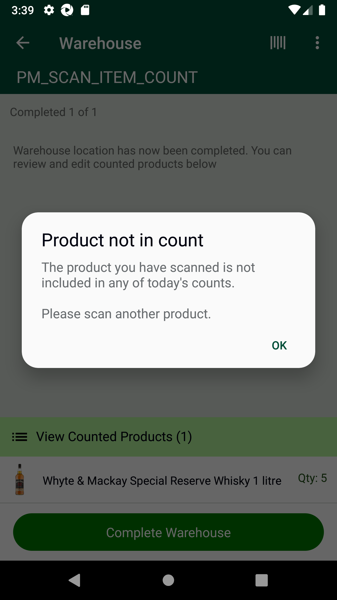
And I click on Back ButtonStep skippedFailWarehouse Location - Scan an Items in generated Count for "scan" mode, Enter quantity and confirm.Given The Post Storewalk body to create Count storewalk api for Store id "8",name "PM_SCAN_ITEM_COUNT" and mode "scan"Given Post count storewalk Item list data is "103273538"When I enter Username and Password for SMA Manager userAnd I click on login button for SMAThen I click on 'stockMngmtText' on page 'HomePagePO_New'Then I click on 'ScheduledCounts' on page 'HomePagePO_New'Then I click on dynamic 'WarehouseParentLnk' for 'Warehouse' for product "PM_SCAN_ITEM_COUNT" on page 'CountsPO'Then I verify "PM_SCAN_ITEM_COUNT" counts are displayed in 'WarehouseLocation' on 'CountsPO' pageThen I click on 'Enter_barcode' on page 'CountsPO'Then Enter "103273538" numberThen I Enter the quantity as "5", "quantity" and click on "Confirm" button on "CountsPO" pagecom.morrisons.common.action.Hook.afterScenario(io.cucumber.java.Scenario)And I click on Back ButtonStep skippedFailWarehouse Location - Scan an Items in generated Count for "scan" mode, Enter quantity and confirm.Given The Post Storewalk body to create Count storewalk api for Store id "8",name "PM_SCAN_ITEM_COUNT" and mode "scan"Given Post count storewalk Item list data is "102786340"When I enter Username and Password for SMA Manager userAnd I click on login button for SMAThen I click on 'stockMngmtText' on page 'HomePagePO_New'Then I click on 'ScheduledCounts' on page 'HomePagePO_New'Then I click on dynamic 'WarehouseParentLnk' for 'Warehouse' for product "PM_SCAN_ITEM_COUNT" on page 'CountsPO'Then I verify "PM_SCAN_ITEM_COUNT" counts are displayed in 'WarehouseLocation' on 'CountsPO' pageThen I click on 'Enter_barcode' on page 'CountsPO'Then Enter "102786340" numberThen I Enter the quantity as "5", "quantity" and click on "Confirm" button on "CountsPO" pagecom.morrisons.common.action.Hook.afterScenario(io.cucumber.java.Scenario) And I click on Back ButtonStep skippedPassWarehouse Location - Scan an Items in generated Count for "scan" mode, Enter quantity and confirm.Given The Post Storewalk body to create Count storewalk api for Store id "8",name "PM_SCAN_ITEM_COUNT" and mode "scan"Given Post count storewalk Item list data is "101531257"When I enter Username and Password for SMA Manager userAnd I click on login button for SMAThen I click on 'stockMngmtText' on page 'HomePagePO_New'Then I click on 'ScheduledCounts' on page 'HomePagePO_New'Then I click on dynamic 'WarehouseParentLnk' for 'Warehouse' for product "PM_SCAN_ITEM_COUNT" on page 'CountsPO'Then I verify "PM_SCAN_ITEM_COUNT" counts are displayed in 'WarehouseLocation' on 'CountsPO' pageThen I click on 'Enter_barcode' on page 'CountsPO'Then Enter "101531257" numberThen I Enter the quantity as "5", "quantity" and click on "Confirm" button on "CountsPO" pageAnd I click on Back ButtonFailWarehouse Location - Scan an Items in generated Count for "scan" mode, Enter quantity and confirm.Given The Post Storewalk body to create Count storewalk api for Store id "8",name "PM_SCAN_ITEM_COUNT" and mode "scan"Given Post count storewalk Item list data is "102391031"When I enter Username and Password for SMA Manager userAnd I click on login button for SMAThen I click on 'stockMngmtText' on page 'HomePagePO_New'Then I click on 'ScheduledCounts' on page 'HomePagePO_New'Then I click on dynamic 'WarehouseParentLnk' for 'Warehouse' for product "PM_SCAN_ITEM_COUNT" on page 'CountsPO'Then I verify "PM_SCAN_ITEM_COUNT" counts are displayed in 'WarehouseLocation' on 'CountsPO' pageThen I click on 'Enter_barcode' on page 'CountsPO'Then Enter "102391031" numberThen I Enter the quantity as "5", "quantity" and click on "Confirm" button on "CountsPO" pagecom.morrisons.common.action.Hook.afterScenario(io.cucumber.java.Scenario)And I click on Back ButtonStep skippedFailWarehouse Location - Scan an Items in generated Count for "scan" mode, Enter quantity and confirm.Given The Post Storewalk body to create Count storewalk api for Store id "8",name "PM_SCAN_ITEM_COUNT" and mode "scan"Given Post count storewalk Item list data is "107734469"When I enter Username and Password for SMA Manager userAnd I click on login button for SMAThen I click on 'stockMngmtText' on page 'HomePagePO_New'Then I click on 'ScheduledCounts' on page 'HomePagePO_New'Then I click on dynamic 'WarehouseParentLnk' for 'Warehouse' for product "PM_SCAN_ITEM_COUNT" on page 'CountsPO'Then I verify "PM_SCAN_ITEM_COUNT" counts are displayed in 'WarehouseLocation' on 'CountsPO' pageThen I click on 'Enter_barcode' on page 'CountsPO'Then Enter "107734469" numberThen I Enter the quantity as "5", "quantity" and click on "Confirm" button on "CountsPO" pagecom.morrisons.common.action.Hook.afterScenario(io.cucumber.java.Scenario)
And I click on Back ButtonStep skippedPassWarehouse Location - Scan an Items in generated Count for "scan" mode, Enter quantity and confirm.Given The Post Storewalk body to create Count storewalk api for Store id "8",name "PM_SCAN_ITEM_COUNT" and mode "scan"Given Post count storewalk Item list data is "101531257"When I enter Username and Password for SMA Manager userAnd I click on login button for SMAThen I click on 'stockMngmtText' on page 'HomePagePO_New'Then I click on 'ScheduledCounts' on page 'HomePagePO_New'Then I click on dynamic 'WarehouseParentLnk' for 'Warehouse' for product "PM_SCAN_ITEM_COUNT" on page 'CountsPO'Then I verify "PM_SCAN_ITEM_COUNT" counts are displayed in 'WarehouseLocation' on 'CountsPO' pageThen I click on 'Enter_barcode' on page 'CountsPO'Then Enter "101531257" numberThen I Enter the quantity as "5", "quantity" and click on "Confirm" button on "CountsPO" pageAnd I click on Back ButtonFailWarehouse Location - Scan an Items in generated Count for "scan" mode, Enter quantity and confirm.Given The Post Storewalk body to create Count storewalk api for Store id "8",name "PM_SCAN_ITEM_COUNT" and mode "scan"Given Post count storewalk Item list data is "102391031"When I enter Username and Password for SMA Manager userAnd I click on login button for SMAThen I click on 'stockMngmtText' on page 'HomePagePO_New'Then I click on 'ScheduledCounts' on page 'HomePagePO_New'Then I click on dynamic 'WarehouseParentLnk' for 'Warehouse' for product "PM_SCAN_ITEM_COUNT" on page 'CountsPO'Then I verify "PM_SCAN_ITEM_COUNT" counts are displayed in 'WarehouseLocation' on 'CountsPO' pageThen I click on 'Enter_barcode' on page 'CountsPO'Then Enter "102391031" numberThen I Enter the quantity as "5", "quantity" and click on "Confirm" button on "CountsPO" pagecom.morrisons.common.action.Hook.afterScenario(io.cucumber.java.Scenario)And I click on Back ButtonStep skippedFailWarehouse Location - Scan an Items in generated Count for "scan" mode, Enter quantity and confirm.Given The Post Storewalk body to create Count storewalk api for Store id "8",name "PM_SCAN_ITEM_COUNT" and mode "scan"Given Post count storewalk Item list data is "107734469"When I enter Username and Password for SMA Manager userAnd I click on login button for SMAThen I click on 'stockMngmtText' on page 'HomePagePO_New'Then I click on 'ScheduledCounts' on page 'HomePagePO_New'Then I click on dynamic 'WarehouseParentLnk' for 'Warehouse' for product "PM_SCAN_ITEM_COUNT" on page 'CountsPO'Then I verify "PM_SCAN_ITEM_COUNT" counts are displayed in 'WarehouseLocation' on 'CountsPO' pageThen I click on 'Enter_barcode' on page 'CountsPO'Then Enter "107734469" numberThen I Enter the quantity as "5", "quantity" and click on "Confirm" button on "CountsPO" pagecom.morrisons.common.action.Hook.afterScenario(io.cucumber.java.Scenario) And I click on Back ButtonStep skippedPassWarehouse Location - Scan an Items in generated Count for "scan" mode, Enter quantity and confirm.Given The Post Storewalk body to create Count storewalk api for Store id "8",name "PM_SCAN_ITEM_COUNT" and mode "scan"Given Post count storewalk Item list data is "102390679"When I enter Username and Password for SMA Manager userAnd I click on login button for SMAThen I click on 'stockMngmtText' on page 'HomePagePO_New'Then I click on 'ScheduledCounts' on page 'HomePagePO_New'Then I click on dynamic 'WarehouseParentLnk' for 'Warehouse' for product "PM_SCAN_ITEM_COUNT" on page 'CountsPO'Then I verify "PM_SCAN_ITEM_COUNT" counts are displayed in 'WarehouseLocation' on 'CountsPO' pageThen I click on 'Enter_barcode' on page 'CountsPO'Then Enter "102390679" numberThen I Enter the quantity as "5", "quantity" and click on "Confirm" button on "CountsPO" pageAnd I click on Back ButtonPassWarehouse Location - Scan an Items in generated Count for "scan" mode, Enter quantity and confirm.Given The Post Storewalk body to create Count storewalk api for Store id "8",name "PM_SCAN_ITEM_COUNT" and mode "scan"Given Post count storewalk Item list data is "105591345"When I enter Username and Password for SMA Manager userAnd I click on login button for SMAThen I click on 'stockMngmtText' on page 'HomePagePO_New'Then I click on 'ScheduledCounts' on page 'HomePagePO_New'Then I click on dynamic 'WarehouseParentLnk' for 'Warehouse' for product "PM_SCAN_ITEM_COUNT" on page 'CountsPO'Then I verify "PM_SCAN_ITEM_COUNT" counts are displayed in 'WarehouseLocation' on 'CountsPO' pageThen I click on 'Enter_barcode' on page 'CountsPO'Then Enter "105591345" numberThen I Enter the quantity as "5", "quantity" and click on "Confirm" button on "CountsPO" pageAnd I click on Back ButtonFailWarehouse Location - Scan an Items in generated Count for "scan" mode, Enter quantity and confirm.Given The Post Storewalk body to create Count storewalk api for Store id "8",name "PM_SCAN_ITEM_COUNT" and mode "scan"Given Post count storewalk Item list data is "108335620"When I enter Username and Password for SMA Manager userAnd I click on login button for SMAThen I click on 'stockMngmtText' on page 'HomePagePO_New'Then I click on 'ScheduledCounts' on page 'HomePagePO_New'Then I click on dynamic 'WarehouseParentLnk' for 'Warehouse' for product "PM_SCAN_ITEM_COUNT" on page 'CountsPO'Then I verify "PM_SCAN_ITEM_COUNT" counts are displayed in 'WarehouseLocation' on 'CountsPO' pageThen I click on 'Enter_barcode' on page 'CountsPO'Then Enter "108335620" numberThen I Enter the quantity as "5", "quantity" and click on "Confirm" button on "CountsPO" pagecom.morrisons.common.action.Hook.afterScenario(io.cucumber.java.Scenario)
And I click on Back ButtonStep skippedPassWarehouse Location - Scan an Items in generated Count for "scan" mode, Enter quantity and confirm.Given The Post Storewalk body to create Count storewalk api for Store id "8",name "PM_SCAN_ITEM_COUNT" and mode "scan"Given Post count storewalk Item list data is "102390679"When I enter Username and Password for SMA Manager userAnd I click on login button for SMAThen I click on 'stockMngmtText' on page 'HomePagePO_New'Then I click on 'ScheduledCounts' on page 'HomePagePO_New'Then I click on dynamic 'WarehouseParentLnk' for 'Warehouse' for product "PM_SCAN_ITEM_COUNT" on page 'CountsPO'Then I verify "PM_SCAN_ITEM_COUNT" counts are displayed in 'WarehouseLocation' on 'CountsPO' pageThen I click on 'Enter_barcode' on page 'CountsPO'Then Enter "102390679" numberThen I Enter the quantity as "5", "quantity" and click on "Confirm" button on "CountsPO" pageAnd I click on Back ButtonPassWarehouse Location - Scan an Items in generated Count for "scan" mode, Enter quantity and confirm.Given The Post Storewalk body to create Count storewalk api for Store id "8",name "PM_SCAN_ITEM_COUNT" and mode "scan"Given Post count storewalk Item list data is "105591345"When I enter Username and Password for SMA Manager userAnd I click on login button for SMAThen I click on 'stockMngmtText' on page 'HomePagePO_New'Then I click on 'ScheduledCounts' on page 'HomePagePO_New'Then I click on dynamic 'WarehouseParentLnk' for 'Warehouse' for product "PM_SCAN_ITEM_COUNT" on page 'CountsPO'Then I verify "PM_SCAN_ITEM_COUNT" counts are displayed in 'WarehouseLocation' on 'CountsPO' pageThen I click on 'Enter_barcode' on page 'CountsPO'Then Enter "105591345" numberThen I Enter the quantity as "5", "quantity" and click on "Confirm" button on "CountsPO" pageAnd I click on Back ButtonFailWarehouse Location - Scan an Items in generated Count for "scan" mode, Enter quantity and confirm.Given The Post Storewalk body to create Count storewalk api for Store id "8",name "PM_SCAN_ITEM_COUNT" and mode "scan"Given Post count storewalk Item list data is "108335620"When I enter Username and Password for SMA Manager userAnd I click on login button for SMAThen I click on 'stockMngmtText' on page 'HomePagePO_New'Then I click on 'ScheduledCounts' on page 'HomePagePO_New'Then I click on dynamic 'WarehouseParentLnk' for 'Warehouse' for product "PM_SCAN_ITEM_COUNT" on page 'CountsPO'Then I verify "PM_SCAN_ITEM_COUNT" counts are displayed in 'WarehouseLocation' on 'CountsPO' pageThen I click on 'Enter_barcode' on page 'CountsPO'Then Enter "108335620" numberThen I Enter the quantity as "5", "quantity" and click on "Confirm" button on "CountsPO" pagecom.morrisons.common.action.Hook.afterScenario(io.cucumber.java.Scenario) And I click on Back ButtonStep skippedPassWarehouse Location - Scan an Items in generated Count for "scan" mode, Enter quantity and confirm.Given The Post Storewalk body to create Count storewalk api for Store id "8",name "PM_SCAN_ITEM_COUNT" and mode "scan"Given Post count storewalk Item list data is "105776497"When I enter Username and Password for SMA Manager userAnd I click on login button for SMAThen I click on 'stockMngmtText' on page 'HomePagePO_New'Then I click on 'ScheduledCounts' on page 'HomePagePO_New'Then I click on dynamic 'WarehouseParentLnk' for 'Warehouse' for product "PM_SCAN_ITEM_COUNT" on page 'CountsPO'Then I verify "PM_SCAN_ITEM_COUNT" counts are displayed in 'WarehouseLocation' on 'CountsPO' pageThen I click on 'Enter_barcode' on page 'CountsPO'Then Enter "105776497" numberThen I Enter the quantity as "5", "quantity" and click on "Confirm" button on "CountsPO" pageAnd I click on Back ButtonFailWarehouse Location - Scan an Items in generated Count for "scan" mode, Enter quantity and confirm.Given The Post Storewalk body to create Count storewalk api for Store id "8",name "PM_SCAN_ITEM_COUNT" and mode "scan"Given Post count storewalk Item list data is "104840012"When I enter Username and Password for SMA Manager userAnd I click on login button for SMAThen I click on 'stockMngmtText' on page 'HomePagePO_New'Then I click on 'ScheduledCounts' on page 'HomePagePO_New'Then I click on dynamic 'WarehouseParentLnk' for 'Warehouse' for product "PM_SCAN_ITEM_COUNT" on page 'CountsPO'Then I verify "PM_SCAN_ITEM_COUNT" counts are displayed in 'WarehouseLocation' on 'CountsPO' pageThen I click on 'Enter_barcode' on page 'CountsPO'Then Enter "104840012" numberThen I Enter the quantity as "5", "quantity" and click on "Confirm" button on "CountsPO" pagecom.morrisons.common.action.Hook.afterScenario(io.cucumber.java.Scenario)
And I click on Back ButtonStep skippedPassWarehouse Location - Scan an Items in generated Count for "scan" mode, Enter quantity and confirm.Given The Post Storewalk body to create Count storewalk api for Store id "8",name "PM_SCAN_ITEM_COUNT" and mode "scan"Given Post count storewalk Item list data is "105776497"When I enter Username and Password for SMA Manager userAnd I click on login button for SMAThen I click on 'stockMngmtText' on page 'HomePagePO_New'Then I click on 'ScheduledCounts' on page 'HomePagePO_New'Then I click on dynamic 'WarehouseParentLnk' for 'Warehouse' for product "PM_SCAN_ITEM_COUNT" on page 'CountsPO'Then I verify "PM_SCAN_ITEM_COUNT" counts are displayed in 'WarehouseLocation' on 'CountsPO' pageThen I click on 'Enter_barcode' on page 'CountsPO'Then Enter "105776497" numberThen I Enter the quantity as "5", "quantity" and click on "Confirm" button on "CountsPO" pageAnd I click on Back ButtonFailWarehouse Location - Scan an Items in generated Count for "scan" mode, Enter quantity and confirm.Given The Post Storewalk body to create Count storewalk api for Store id "8",name "PM_SCAN_ITEM_COUNT" and mode "scan"Given Post count storewalk Item list data is "104840012"When I enter Username and Password for SMA Manager userAnd I click on login button for SMAThen I click on 'stockMngmtText' on page 'HomePagePO_New'Then I click on 'ScheduledCounts' on page 'HomePagePO_New'Then I click on dynamic 'WarehouseParentLnk' for 'Warehouse' for product "PM_SCAN_ITEM_COUNT" on page 'CountsPO'Then I verify "PM_SCAN_ITEM_COUNT" counts are displayed in 'WarehouseLocation' on 'CountsPO' pageThen I click on 'Enter_barcode' on page 'CountsPO'Then Enter "104840012" numberThen I Enter the quantity as "5", "quantity" and click on "Confirm" button on "CountsPO" pagecom.morrisons.common.action.Hook.afterScenario(io.cucumber.java.Scenario) And I click on Back ButtonStep skippedPassWarehouse Location - Scan an Items in generated Count for "scan" mode, Enter quantity and confirm.Given The Post Storewalk body to create Count storewalk api for Store id "8",name "PM_SCAN_ITEM_COUNT" and mode "scan"Given Post count storewalk Item list data is "103147620"When I enter Username and Password for SMA Manager userAnd I click on login button for SMAThen I click on 'stockMngmtText' on page 'HomePagePO_New'Then I click on 'ScheduledCounts' on page 'HomePagePO_New'Then I click on dynamic 'WarehouseParentLnk' for 'Warehouse' for product "PM_SCAN_ITEM_COUNT" on page 'CountsPO'Then I verify "PM_SCAN_ITEM_COUNT" counts are displayed in 'WarehouseLocation' on 'CountsPO' pageThen I click on 'Enter_barcode' on page 'CountsPO'Then Enter "103147620" numberThen I Enter the quantity as "5", "quantity" and click on "Confirm" button on "CountsPO" pageAnd I click on Back ButtonPassNavigate to Fixture location and Verify count data is getting generated and displayed on UI.PassNavigate to Fixture location and Verify count data is getting generated and displayed on UI.Given The Post Storewalk body to create Count storewalk api for Store id "8",name "PM_SCAN_ITEM_COUNT" and mode "scan"Given Post count storewalk Item list data is "101545309"When I enter Username and Password for SMA Manager userAnd I click on login button for SMAThen I click on 'stockMngmtText' on page 'HomePagePO_New'Then I click on 'ScheduledCounts' on page 'HomePagePO_New'Then I click on dynamic 'WarehouseParentLnk' for 'Fixture' for product "PM_SCAN_ITEM_COUNT" on page 'CountsPO'Then I verify "PM_SCAN_ITEM_COUNT" counts are displayed in 'WarehouseLocation' on 'CountsPO' pageAnd I click on Back ButtonAnd I logout of the systemAnd Get the generated Access Tocken for SMA app Login ServiceGiven Get request is made to Get storewalks service for current dateAnd Get Operation perform on service requestAnd Get Walkid for Store id "8" and walk type "Counts"PassNavigate to Fixture location and Verify count data is getting generated and displayed on UI.Given The Post Storewalk body to create Count storewalk api for Store id "8",name "PM_LIST_ITEM_COUNT" and mode "list"Given Post count storewalk Item list data is "102390337"When I enter Username and Password for SMA Manager userAnd I click on login button for SMAThen I click on 'stockMngmtText' on page 'HomePagePO_New'Then I click on 'ScheduledCounts' on page 'HomePagePO_New'Then I click on dynamic 'WarehouseParentLnk' for 'Fixture' for product "PM_LIST_ITEM_COUNT" on page 'CountsPO'Then I verify "PM_LIST_ITEM_COUNT" counts are displayed in 'WarehouseLocation' on 'CountsPO' pageAnd I click on Back ButtonAnd I logout of the systemAnd Get the generated Access Tocken for SMA app Login ServiceGiven Get request is made to Get storewalks service for current dateAnd Get Operation perform on service requestAnd Get Walkid for Store id "8" and walk type "Counts"When Get request is made to Get Count storewalk response for count name "PM_LIST_ITEM_COUNT" and store id "8"And Get Operation perform on service requestThen Verify Get count storewalk for count name "PM_LIST_ITEM_COUNT" and store id "8"And Verify Storewalk status as "Available" is present in Get storewalk service responseThen Verify for "On_Shelf" Count location status "Available" is present in Get storewalk service responseFailFixture Location - Scan an Items in generated Count for "
And I click on Back ButtonStep skippedPassWarehouse Location - Scan an Items in generated Count for "scan" mode, Enter quantity and confirm.Given The Post Storewalk body to create Count storewalk api for Store id "8",name "PM_SCAN_ITEM_COUNT" and mode "scan"Given Post count storewalk Item list data is "103147620"When I enter Username and Password for SMA Manager userAnd I click on login button for SMAThen I click on 'stockMngmtText' on page 'HomePagePO_New'Then I click on 'ScheduledCounts' on page 'HomePagePO_New'Then I click on dynamic 'WarehouseParentLnk' for 'Warehouse' for product "PM_SCAN_ITEM_COUNT" on page 'CountsPO'Then I verify "PM_SCAN_ITEM_COUNT" counts are displayed in 'WarehouseLocation' on 'CountsPO' pageThen I click on 'Enter_barcode' on page 'CountsPO'Then Enter "103147620" numberThen I Enter the quantity as "5", "quantity" and click on "Confirm" button on "CountsPO" pageAnd I click on Back ButtonPassNavigate to Fixture location and Verify count data is getting generated and displayed on UI.PassNavigate to Fixture location and Verify count data is getting generated and displayed on UI.Given The Post Storewalk body to create Count storewalk api for Store id "8",name "PM_SCAN_ITEM_COUNT" and mode "scan"Given Post count storewalk Item list data is "101545309"When I enter Username and Password for SMA Manager userAnd I click on login button for SMAThen I click on 'stockMngmtText' on page 'HomePagePO_New'Then I click on 'ScheduledCounts' on page 'HomePagePO_New'Then I click on dynamic 'WarehouseParentLnk' for 'Fixture' for product "PM_SCAN_ITEM_COUNT" on page 'CountsPO'Then I verify "PM_SCAN_ITEM_COUNT" counts are displayed in 'WarehouseLocation' on 'CountsPO' pageAnd I click on Back ButtonAnd I logout of the systemAnd Get the generated Access Tocken for SMA app Login ServiceGiven Get request is made to Get storewalks service for current dateAnd Get Operation perform on service requestAnd Get Walkid for Store id "8" and walk type "Counts"PassNavigate to Fixture location and Verify count data is getting generated and displayed on UI.Given The Post Storewalk body to create Count storewalk api for Store id "8",name "PM_LIST_ITEM_COUNT" and mode "list"Given Post count storewalk Item list data is "102390337"When I enter Username and Password for SMA Manager userAnd I click on login button for SMAThen I click on 'stockMngmtText' on page 'HomePagePO_New'Then I click on 'ScheduledCounts' on page 'HomePagePO_New'Then I click on dynamic 'WarehouseParentLnk' for 'Fixture' for product "PM_LIST_ITEM_COUNT" on page 'CountsPO'Then I verify "PM_LIST_ITEM_COUNT" counts are displayed in 'WarehouseLocation' on 'CountsPO' pageAnd I click on Back ButtonAnd I logout of the systemAnd Get the generated Access Tocken for SMA app Login ServiceGiven Get request is made to Get storewalks service for current dateAnd Get Operation perform on service requestAnd Get Walkid for Store id "8" and walk type "Counts"When Get request is made to Get Count storewalk response for count name "PM_LIST_ITEM_COUNT" and store id "8"And Get Operation perform on service requestThen Verify Get count storewalk for count name "PM_LIST_ITEM_COUNT" and store id "8"And Verify Storewalk status as "Available" is present in Get storewalk service responseThen Verify for "On_Shelf" Count location status "Available" is present in Get storewalk service responseFailFixture Location - Scan an Items in generated Count for "" mode, Enter quantity and confirm. FailFixture Location - Scan an Items in generated Count for "scan" mode, Enter quantity and confirm.Given The Post Storewalk body to create Count storewalk api for Store id "8",name "PM_SCAN_ITEM_COUNT" and mode "scan"Given Post count storewalk Item list data is "103087399"When I enter Username and Password for SMA Manager userAnd I click on login button for SMAThen I click on 'stockMngmtText' on page 'HomePagePO_New'Then I click on 'ScheduledCounts' on page 'HomePagePO_New'Then I click on dynamic 'WarehouseParentLnk' for 'Fixture' for product "PM_SCAN_ITEM_COUNT" on page 'CountsPO'Then I verify "PM_SCAN_ITEM_COUNT" counts are displayed in 'WarehouseLocation' on 'CountsPO' pageThen I click on 'Enter_barcode' on page 'CountsPO'Then Enter "103087399" numberThen I Enter the quantity as "5", "quantity" and click on "Confirm" button on "CountsPO" pagecom.morrisons.common.action.Hook.afterScenario(io.cucumber.java.Scenario) PassFixture Location - Scan an Items in generated Count for "scan" mode, Enter quantity and confirm.Given The Post Storewalk body to create Count storewalk api for Store id "8",name "PM_SCAN_ITEM_COUNT" and mode "scan"Given Post count storewalk Item list data is "101545309"When I enter Username and Password for SMA Manager userAnd I click on login button for SMAThen I click on 'stockMngmtText' on page 'HomePagePO_New'Then I click on 'ScheduledCounts' on page 'HomePagePO_New'Then I click on dynamic 'WarehouseParentLnk' for 'Fixture' for product "PM_SCAN_ITEM_COUNT" on page 'CountsPO'Then I verify "PM_SCAN_ITEM_COUNT" counts are displayed in 'WarehouseLocation' on 'CountsPO' pageThen I click on 'Enter_barcode' on page 'CountsPO'Then Enter "101545309" numberThen I Enter the quantity as "5", "quantity" and click on "Confirm" button on "CountsPO" pageFailFixture Location - Scan an Items in generated Count for "scan" mode, Enter quantity and confirm.Given The Post Storewalk body to create Count storewalk api for Store id "8",name "PM_SCAN_ITEM_COUNT" and mode "scan"Given Post count storewalk Item list data is "105140288"When I enter Username and Password for SMA Manager userAnd I click on login button for SMAThen I click on 'stockMngmtText' on page 'HomePagePO_New'Then I click on 'ScheduledCounts' on page 'HomePagePO_New'Then I click on dynamic 'WarehouseParentLnk' for 'Fixture' for product "PM_SCAN_ITEM_COUNT" on page 'CountsPO'Then I verify "PM_SCAN_ITEM_COUNT" counts are displayed in 'WarehouseLocation' on 'CountsPO' pageThen I click on 'Enter_barcode' on page 'CountsPO'Then Enter "105140288" numberThen I Enter the quantity as "5", "quantity" and click on "Confirm" button on "CountsPO" pagecom.morrisons.common.action.Hook.afterScenario(io.cucumber.java.Scenario)FailFixture Location - Scan an Items in generated Count for "scan" mode, Enter quantity and confirm.Given The Post Storewalk body to create Count storewalk api for Store id "8",name "PM_SCAN_ITEM_COUNT" and mode "scan"Given Post count storewalk Item list data is "107537844"When I enter Username and Password for SMA Manager userAnd I click on login button for SMAThen I click on 'stockMngmtText' on page 'HomePagePO_New'Then I click on 'ScheduledCounts' on page 'HomePagePO_New'Then I click on dynamic 'WarehouseParentLnk' for 'Fixture' for product "PM_SCAN_ITEM_COUNT" on page 'CountsPO'Then I verify "PM_SCAN_ITEM_COUNT" counts are displayed in 'WarehouseLocation' on 'CountsPO' pageThen I click on 'Enter_barcode' on page 'CountsPO'Then Enter "107537844" numberThen I Enter the quantity as "5", "quantity" and click on "Confirm" button on "CountsPO" pagecom.morrisons.common.action.Hook.afterScenario(io.cucumber.java.Scenario)
PassFixture Location - Scan an Items in generated Count for "scan" mode, Enter quantity and confirm.Given The Post Storewalk body to create Count storewalk api for Store id "8",name "PM_SCAN_ITEM_COUNT" and mode "scan"Given Post count storewalk Item list data is "101545309"When I enter Username and Password for SMA Manager userAnd I click on login button for SMAThen I click on 'stockMngmtText' on page 'HomePagePO_New'Then I click on 'ScheduledCounts' on page 'HomePagePO_New'Then I click on dynamic 'WarehouseParentLnk' for 'Fixture' for product "PM_SCAN_ITEM_COUNT" on page 'CountsPO'Then I verify "PM_SCAN_ITEM_COUNT" counts are displayed in 'WarehouseLocation' on 'CountsPO' pageThen I click on 'Enter_barcode' on page 'CountsPO'Then Enter "101545309" numberThen I Enter the quantity as "5", "quantity" and click on "Confirm" button on "CountsPO" pageFailFixture Location - Scan an Items in generated Count for "scan" mode, Enter quantity and confirm.Given The Post Storewalk body to create Count storewalk api for Store id "8",name "PM_SCAN_ITEM_COUNT" and mode "scan"Given Post count storewalk Item list data is "105140288"When I enter Username and Password for SMA Manager userAnd I click on login button for SMAThen I click on 'stockMngmtText' on page 'HomePagePO_New'Then I click on 'ScheduledCounts' on page 'HomePagePO_New'Then I click on dynamic 'WarehouseParentLnk' for 'Fixture' for product "PM_SCAN_ITEM_COUNT" on page 'CountsPO'Then I verify "PM_SCAN_ITEM_COUNT" counts are displayed in 'WarehouseLocation' on 'CountsPO' pageThen I click on 'Enter_barcode' on page 'CountsPO'Then Enter "105140288" numberThen I Enter the quantity as "5", "quantity" and click on "Confirm" button on "CountsPO" pagecom.morrisons.common.action.Hook.afterScenario(io.cucumber.java.Scenario)FailFixture Location - Scan an Items in generated Count for "scan" mode, Enter quantity and confirm.Given The Post Storewalk body to create Count storewalk api for Store id "8",name "PM_SCAN_ITEM_COUNT" and mode "scan"Given Post count storewalk Item list data is "107537844"When I enter Username and Password for SMA Manager userAnd I click on login button for SMAThen I click on 'stockMngmtText' on page 'HomePagePO_New'Then I click on 'ScheduledCounts' on page 'HomePagePO_New'Then I click on dynamic 'WarehouseParentLnk' for 'Fixture' for product "PM_SCAN_ITEM_COUNT" on page 'CountsPO'Then I verify "PM_SCAN_ITEM_COUNT" counts are displayed in 'WarehouseLocation' on 'CountsPO' pageThen I click on 'Enter_barcode' on page 'CountsPO'Then Enter "107537844" numberThen I Enter the quantity as "5", "quantity" and click on "Confirm" button on "CountsPO" pagecom.morrisons.common.action.Hook.afterScenario(io.cucumber.java.Scenario)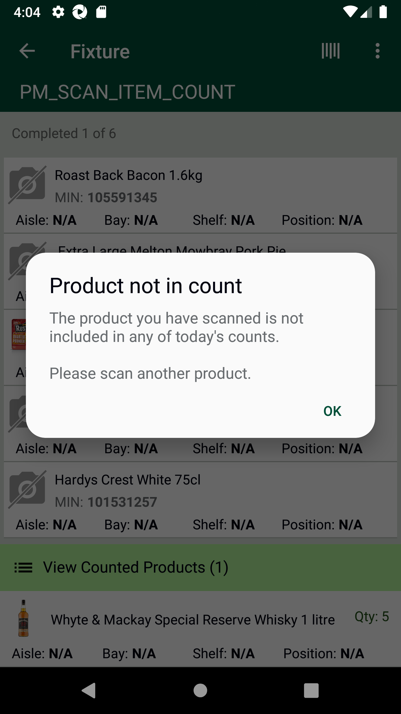
FailFixture Location - Scan an Items in generated Count for "scan" mode, Enter quantity and confirm.Given The Post Storewalk body to create Count storewalk api for Store id "8",name "PM_SCAN_ITEM_COUNT" and mode "scan"Given Post count storewalk Item list data is "103273538"When I enter Username and Password for SMA Manager userAnd I click on login button for SMAThen I click on 'stockMngmtText' on page 'HomePagePO_New'Then I click on 'ScheduledCounts' on page 'HomePagePO_New'Then I click on dynamic 'WarehouseParentLnk' for 'Fixture' for product "PM_SCAN_ITEM_COUNT" on page 'CountsPO'Then I verify "PM_SCAN_ITEM_COUNT" counts are displayed in 'WarehouseLocation' on 'CountsPO' pageThen I click on 'Enter_barcode' on page 'CountsPO'Then Enter "103273538" numberThen I Enter the quantity as "5", "quantity" and click on "Confirm" button on "CountsPO" pagecom.morrisons.common.action.Hook.afterScenario(io.cucumber.java.Scenario)FailFixture Location - Scan an Items in generated Count for "scan" mode, Enter quantity and confirm.Given The Post Storewalk body to create Count storewalk api for Store id "8",name "PM_SCAN_ITEM_COUNT" and mode "scan"Given Post count storewalk Item list data is "102786340"When I enter Username and Password for SMA Manager userAnd I click on login button for SMAThen I click on 'stockMngmtText' on page 'HomePagePO_New'Then I click on 'ScheduledCounts' on page 'HomePagePO_New'Then I click on dynamic 'WarehouseParentLnk' for 'Fixture' for product "PM_SCAN_ITEM_COUNT" on page 'CountsPO'Then I verify "PM_SCAN_ITEM_COUNT" counts are displayed in 'WarehouseLocation' on 'CountsPO' pageThen I click on 'Enter_barcode' on page 'CountsPO'Then Enter "102786340" numberThen I Enter the quantity as "5", "quantity" and click on "Confirm" button on "CountsPO" pagecom.morrisons.common.action.Hook.afterScenario(io.cucumber.java.Scenario)FailFixture Location - Scan an Items in generated Count for "scan" mode, Enter quantity and confirm.Given The Post Storewalk body to create Count storewalk api for Store id "8",name "PM_SCAN_ITEM_COUNT" and mode "scan"Given Post count storewalk Item list data is "101531257"When I enter Username and Password for SMA Manager userAnd I click on login button for SMAThen I click on 'stockMngmtText' on page 'HomePagePO_New'Then I click on 'ScheduledCounts' on page 'HomePagePO_New'Then I click on dynamic 'WarehouseParentLnk' for 'Fixture' for product "PM_SCAN_ITEM_COUNT" on page 'CountsPO'Then I verify "PM_SCAN_ITEM_COUNT" counts are displayed in 'WarehouseLocation' on 'CountsPO' pagecom.morrisons.common.action.Hook.afterScenario(io.cucumber.java.Scenario)Then I click on 'Enter_barcode' on page 'CountsPO'Step skippedThen Enter "101531257" numberStep skippedThen I Enter the quantity as "5", "quantity" and click on "Confirm" button on "CountsPO" pageStep skippedFailFixture Location - Scan an Items in generated Count for "scan" mode, Enter quantity and confirm.Given The Post Storewalk body to create Count storewalk api for Store id "8",name "PM_SCAN_ITEM_COUNT" and mode "scan"Given Post count storewalk Item list data is "102391031"When I enter Username and Password for SMA Manager userAnd I click on login button for SMAThen I click on 'stockMngmtText' on page 'HomePagePO_New'Then I click on 'ScheduledCounts' on page 'HomePagePO_New'Then I click on dynamic 'WarehouseParentLnk' for 'Fixture' for product "PM_SCAN_ITEM_COUNT" on page 'CountsPO'Then I verify "PM_SCAN_ITEM_COUNT" counts are displayed in 'WarehouseLocation' on 'CountsPO' pageThen I click on 'Enter_barcode' on page 'CountsPO'Then Enter "102391031" numberThen I Enter the quantity as "5", "quantity" and click on "Confirm" button on "CountsPO" pagecom.morrisons.common.action.Hook.afterScenario(io.cucumber.java.Scenario)FailFixture Location - Scan an Items in generated Count for "scan" mode, Enter quantity and confirm.Given The Post Storewalk body to create Count storewalk api for Store id "8",name "PM_SCAN_ITEM_COUNT" and mode "scan"Given Post count storewalk Item list data is "107734469"When I enter Username and Password for SMA Manager userAnd I click on login button for SMAThen I click on 'stockMngmtText' on page 'HomePagePO_New'Then I click on 'ScheduledCounts' on page 'HomePagePO_New'Then I click on dynamic 'WarehouseParentLnk' for 'Fixture' for product "PM_SCAN_ITEM_COUNT" on page 'CountsPO'Then I verify "PM_SCAN_ITEM_COUNT" counts are displayed in 'WarehouseLocation' on 'CountsPO' pageThen I click on 'Enter_barcode' on page 'CountsPO'Then Enter "107734469" numberThen I Enter the quantity as "5", "quantity" and click on "Confirm" button on "CountsPO" pagecom.morrisons.common.action.Hook.afterScenario(io.cucumber.java.Scenario)PassFixture Location - Scan an Items in generated Count for "scan" mode, Enter quantity and confirm.Given The Post Storewalk body to create Count storewalk api for Store id "8",name "PM_SCAN_ITEM_COUNT" and mode "scan"Given Post count storewalk Item list data is "102390679"When I enter Username and Password for SMA Manager userAnd I click on login button for SMAThen I click on 'stockMngmtText' on page 'HomePagePO_New'Then I click on 'ScheduledCounts' on page 'HomePagePO_New'Then I click on dynamic 'WarehouseParentLnk' for 'Fixture' for product "PM_SCAN_ITEM_COUNT" on page 'CountsPO'Then I verify "PM_SCAN_ITEM_COUNT" counts are displayed in 'WarehouseLocation' on 'CountsPO' pageThen I click on 'Enter_barcode' on page 'CountsPO'Then Enter "102390679" numberThen I Enter the quantity as "5", "quantity" and click on "Confirm" button on "CountsPO" pagePassFixture Location - Scan an Items in generated Count for "scan" mode, Enter quantity and confirm.Given The Post Storewalk body to create Count storewalk api for Store id "8",name "PM_SCAN_ITEM_COUNT" and mode "scan"Given Post count storewalk Item list data is "105591345"When I enter Username and Password for SMA Manager userAnd I click on login button for SMAThen I click on 'stockMngmtText' on page 'HomePagePO_New'Then I click on 'ScheduledCounts' on page 'HomePagePO_New'Then I click on dynamic 'WarehouseParentLnk' for 'Fixture' for product "PM_SCAN_ITEM_COUNT" on page 'CountsPO'Then I verify "PM_SCAN_ITEM_COUNT" counts are displayed in 'WarehouseLocation' on 'CountsPO' pageThen I click on 'Enter_barcode' on page 'CountsPO'Then Enter "105591345" numberThen I Enter the quantity as "5", "quantity" and click on "Confirm" button on "CountsPO" pageFailFixture Location - Scan an Items in generated Count for "scan" mode, Enter quantity and confirm.Given The Post Storewalk body to create Count storewalk api for Store id "8",name "PM_SCAN_ITEM_COUNT" and mode "scan"Given Post count storewalk Item list data is "108335620"When I enter Username and Password for SMA Manager userAnd I click on login button for SMAThen I click on 'stockMngmtText' on page 'HomePagePO_New'Then I click on 'ScheduledCounts' on page 'HomePagePO_New'Then I click on dynamic 'WarehouseParentLnk' for 'Fixture' for product "PM_SCAN_ITEM_COUNT" on page 'CountsPO'Then I verify "PM_SCAN_ITEM_COUNT" counts are displayed in 'WarehouseLocation' on 'CountsPO' pageThen I click on 'Enter_barcode' on page 'CountsPO'Then Enter "108335620" numberThen I Enter the quantity as "5", "quantity" and click on "Confirm" button on "CountsPO" pagecom.morrisons.common.action.Hook.afterScenario(io.cucumber.java.Scenario)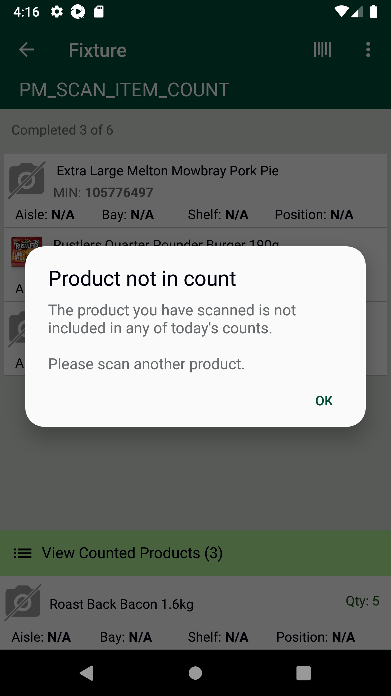
PassFixture Location - Scan an Items in generated Count for "scan" mode, Enter quantity and confirm.Given The Post Storewalk body to create Count storewalk api for Store id "8",name "PM_SCAN_ITEM_COUNT" and mode "scan"Given Post count storewalk Item list data is "105776497"When I enter Username and Password for SMA Manager userAnd I click on login button for SMAThen I click on 'stockMngmtText' on page 'HomePagePO_New'Then I click on 'ScheduledCounts' on page 'HomePagePO_New'Then I click on dynamic 'WarehouseParentLnk' for 'Fixture' for product "PM_SCAN_ITEM_COUNT" on page 'CountsPO'Then I verify "PM_SCAN_ITEM_COUNT" counts are displayed in 'WarehouseLocation' on 'CountsPO' pageThen I click on 'Enter_barcode' on page 'CountsPO'Then Enter "105776497" numberThen I Enter the quantity as "5", "quantity" and click on "Confirm" button on "CountsPO" pageFailFixture Location - Scan an Items in generated Count for "scan" mode, Enter quantity and confirm.Given The Post Storewalk body to create Count storewalk api for Store id "8",name "PM_SCAN_ITEM_COUNT" and mode "scan"Given Post count storewalk Item list data is "104840012"When I enter Username and Password for SMA Manager userAnd I click on login button for SMAThen I click on 'stockMngmtText' on page 'HomePagePO_New'Then I click on 'ScheduledCounts' on page 'HomePagePO_New'Then I click on dynamic 'WarehouseParentLnk' for 'Fixture' for product "PM_SCAN_ITEM_COUNT" on page 'CountsPO'Then I verify "PM_SCAN_ITEM_COUNT" counts are displayed in 'WarehouseLocation' on 'CountsPO' pageThen I click on 'Enter_barcode' on page 'CountsPO'Then Enter "104840012" numberThen I Enter the quantity as "5", "quantity" and click on "Confirm" button on "CountsPO" pagecom.morrisons.common.action.Hook.afterScenario(io.cucumber.java.Scenario)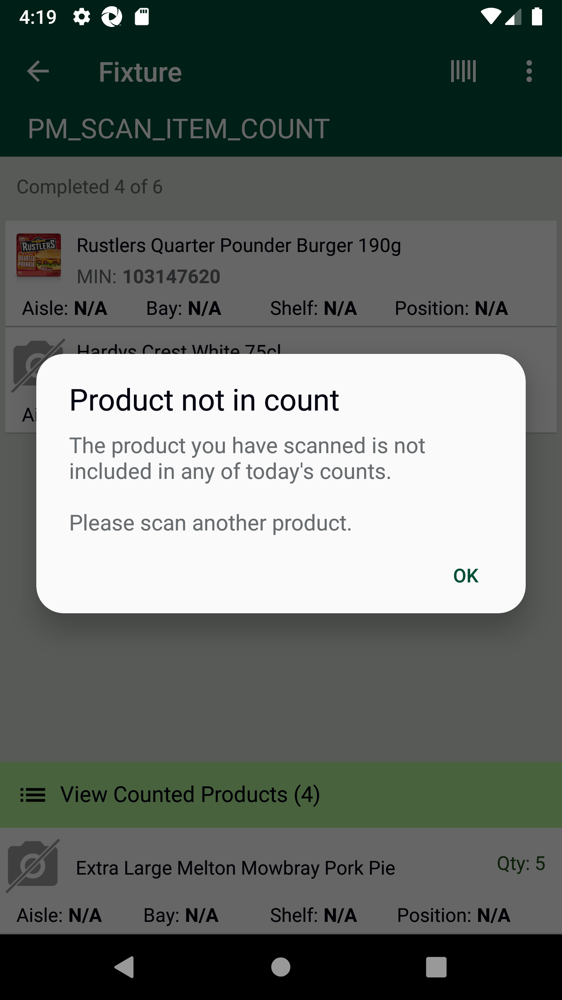
PassFixture Location - Scan an Items in generated Count for "scan" mode, Enter quantity and confirm.Given The Post Storewalk body to create Count storewalk api for Store id "8",name "PM_SCAN_ITEM_COUNT" and mode "scan"Given Post count storewalk Item list data is "103147620"When I enter Username and Password for SMA Manager userAnd I click on login button for SMAThen I click on 'stockMngmtText' on page 'HomePagePO_New'Then I click on 'ScheduledCounts' on page 'HomePagePO_New'Then I click on dynamic 'WarehouseParentLnk' for 'Fixture' for product "PM_SCAN_ITEM_COUNT" on page 'CountsPO'Then I verify "PM_SCAN_ITEM_COUNT" counts are displayed in 'WarehouseLocation' on 'CountsPO' pageThen I click on 'Enter_barcode' on page 'CountsPO'Then Enter "103147620" numberThen I Enter the quantity as "5", "quantity" and click on "Confirm" button on "CountsPO" pageFailWAREHOUSE Location - Confirm counts and Verify COMPLETE status for WAREHOUSE Location.FailWAREHOUSE Location - Confirm counts and Verify COMPLETE status for WAREHOUSE Location.Given The Post Storewalk body to create Count storewalk api for Store id "8",name "PM_SCAN_ITEM_COUNT" and mode "scan"When I enter Username and Password for SMA Manager userAnd I click on login button for SMAThen I click on 'stockMngmtText' on page 'HomePagePO_New'Then I click on 'ScheduledCounts' on page 'HomePagePO_New'Then I click on dynamic 'WarehouseParentLnk' for 'Warehouse' for product "PM_SCAN_ITEM_COUNT" on page 'CountsPO'Then I verify "PM_SCAN_ITEM_COUNT" counts are displayed in 'WarehouseLocation' on 'CountsPO' pagecom.morrisons.common.action.Hook.afterScenario(io.cucumber.java.Scenario)Then I click on 'CompleteBtn' on page 'CountsPO'Step skippedThen I Verify count status for "PM_SCAN_ITEM_COUNT" has changed to 'Complete' on 'CountsPO' pageStep skippedAnd I click on Back ButtonStep skippedAnd Get the generated Access Tocken for SMA app Login ServiceStep skippedGiven Get request is made to Get storewalks service for current dateStep skippedAnd Get Operation perform on service requestStep skippedAnd Get Walkid for Store id "8" and walk type "Counts"Step skippedWhen Get request is made to Get Count storewalk response for count name "PM_SCAN_ITEM_COUNT" and store id "8"Step skippedAnd Get Operation perform on service requestStep skippedThen Verify Get count storewalk for count name "PM_SCAN_ITEM_COUNT" and store id "8"Step skippedAnd Verify Storewalk status as "Available" is present in Get storewalk service responseStep skippedThen Verify for "WareHouse" Count location status "CountComplete" is present in Get storewalk service responseStep skippedAnd Verify for Product id "101545309" Count type "singles" is present in Get storewalk service responseStep skippedThen Verify for Product id "101545309" Action type "Complete" is present in Get storewalk service responseStep skippedThen Verify for Product id "101545309" Range Status "active" is present in Get storewalk service responseStep skippedAnd Verify store id "8" is not Curfew storeStep skippedFailWAREHOUSE Location - Confirm counts and Verify COMPLETE status for WAREHOUSE Location.Given The Post Storewalk body to create Count storewalk api for Store id "8",name "PM_LIST_ITEM_COUNT" and mode "list"When I enter Username and Password for SMA Manager userAnd I click on login button for SMAThen I click on 'stockMngmtText' on page 'HomePagePO_New'Then I click on 'ScheduledCounts' on page 'HomePagePO_New'Then I click on dynamic 'WarehouseParentLnk' for 'Warehouse' for product "PM_LIST_ITEM_COUNT" on page 'CountsPO'Then I click on 'CompleteBtn' on page 'CountsPO'Then I Verify count status for "PM_LIST_ITEM_COUNT" has changed to 'Complete' on 'CountsPO' pageAnd I click on Back ButtonAnd Get the generated Access Tocken for SMA app Login ServiceGiven Get request is made to Get storewalks service for current dateAnd Get Operation perform on service requestAnd Get Walkid for Store id "8" and walk type "Counts"When Get request is made to Get Count storewalk response for count name "PM_LIST_ITEM_COUNT" and store id "8"And Get Operation perform on service requestThen Verify Get count storewalk for count name "PM_LIST_ITEM_COUNT" and store id "8"And Verify Storewalk status as "Available" is present in Get storewalk service responseThen Verify for "WareHouse" Count location status "CountComplete" is present in Get storewalk service responseAnd Verify for Product id "102390337" Count type "singles" is present in Get storewalk service responsecom.morrisons.common.action.Hook.afterScenario(io.cucumber.java.Scenario)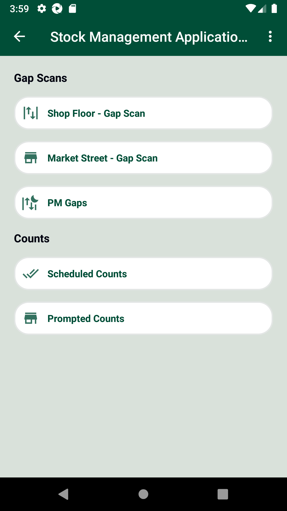
Then Verify for Product id "102390337" Action type "Complete" is present in Get storewalk service responseStep skippedThen Verify for Product id "102390337" Range Status "active" is present in Get storewalk service responseStep skippedAnd Verify store id "8" is not Curfew storeStep skippedFailWAREHOUSE Location - Reopen the completed Count, select the product and verify 'ADD TO COUNT' and 'EDIT COUNT' buttons are displayed.FailWAREHOUSE Location - Reopen the completed Count, select the product and verify 'ADD TO COUNT' and 'EDIT COUNT' buttons are displayed.Given The Post Storewalk body to create Count storewalk api for Store id "8",name "PM_SCAN_ITEM_COUNT" and mode "scan"When I enter Username and Password for SMA Manager userAnd I click on login button for SMAThen I click on 'stockMngmtText' on page 'HomePagePO_New'Then I click on 'ScheduledCounts' on page 'HomePagePO_New'Then I click on dynamic 'WarehouseParentLnk' for 'Warehouse' for product "PM_SCAN_ITEM_COUNT" on page 'CountsPO'Then I click on 'CountedProductsView' on page 'CountsPO'Then I click on 'CountProduct' on page 'CountsPO'Then I verify ADD to Count and EDIT Count buttons are displayedAnd I click on Back ButtonThen I will confirm Countscom.morrisons.common.action.Hook.afterScenario(io.cucumber.java.Scenario) And I logout of the systemStep skippedFailWAREHOUSE Location - Reopen the completed Count, select the product and verify 'ADD TO COUNT' and 'EDIT COUNT' buttons are displayed.Given The Post Storewalk body to create Count storewalk api for Store id "8",name "PM_LIST_ITEM_COUNT" and mode "list"When I enter Username and Password for SMA Manager userAnd I click on login button for SMAThen I click on 'stockMngmtText' on page 'HomePagePO_New'Then I click on 'ScheduledCounts' on page 'HomePagePO_New'Then I click on dynamic 'WarehouseParentLnk' for 'Warehouse' for product "PM_LIST_ITEM_COUNT" on page 'CountsPO'Then I click on 'CountedProductsView' on page 'CountsPO'com.morrisons.common.action.Hook.afterScenario(io.cucumber.java.Scenario)
And I logout of the systemStep skippedFailWAREHOUSE Location - Reopen the completed Count, select the product and verify 'ADD TO COUNT' and 'EDIT COUNT' buttons are displayed.Given The Post Storewalk body to create Count storewalk api for Store id "8",name "PM_LIST_ITEM_COUNT" and mode "list"When I enter Username and Password for SMA Manager userAnd I click on login button for SMAThen I click on 'stockMngmtText' on page 'HomePagePO_New'Then I click on 'ScheduledCounts' on page 'HomePagePO_New'Then I click on dynamic 'WarehouseParentLnk' for 'Warehouse' for product "PM_LIST_ITEM_COUNT" on page 'CountsPO'Then I click on 'CountedProductsView' on page 'CountsPO'com.morrisons.common.action.Hook.afterScenario(io.cucumber.java.Scenario)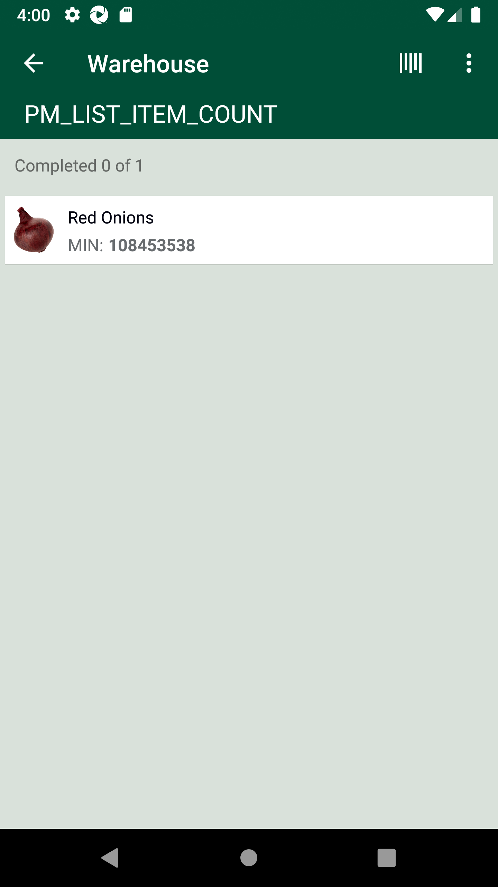
Then I click on 'CountProduct' on page 'CountsPO'Step skippedThen I verify ADD to Count and EDIT Count buttons are displayedStep skippedAnd I click on Back ButtonStep skippedThen I will confirm CountsStep skippedAnd I logout of the systemStep skippedFailWAREHOUSE Location - Verify 'EDIT COUNT' and 'Add to Count' functionality.FailWAREHOUSE Location - Verify 'EDIT COUNT' and 'Add to Count' functionality.Given The Post Storewalk body to create Count storewalk api for Store id "8",name "PM_SCAN_ITEM_COUNT" and mode "scan"When I enter Username and Password for SMA Manager userAnd I click on login button for SMAThen I click on 'stockMngmtText' on page 'HomePagePO_New'Then I click on 'ScheduledCounts' on page 'HomePagePO_New'Then I click on dynamic 'WarehouseParentLnk' for 'Warehouse' for product "PM_SCAN_ITEM_COUNT" on page 'CountsPO'Then I click on 'CountedProductsView' on page 'CountsPO'Then I click on 'CountProduct' on page 'CountsPO'Then I click on 'AddCount' on page 'CountsPO'And I get dynamic product quantity 'EnterAddStockQty' displayed on UI page 'CountsPO'Then I Enter the quantity as "2", "EnterStockQty" and click on "Confirm" button on "CountsPO" pageAnd I verify "Add" dynamic "2" quantity for item "102390337" is on page 'CountsPO'com.morrisons.common.action.Hook.afterScenario(io.cucumber.java.Scenario)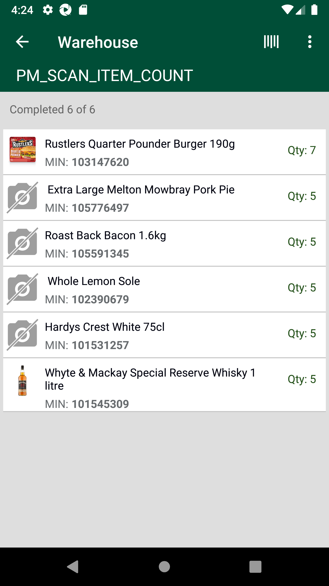
And I click on Back ButtonStep skippedThen I click on 'CountedProductsView' on page 'CountsPO'Step skippedThen I click on 'CountProduct' on page 'CountsPO'Step skippedAnd I get dynamic product quantity 'EnterAddStockQty' displayed on UI page 'CountsPO'Step skippedThen I click on 'EditCount' on page 'CountsPO'Step skippedThen I click on dynamic "sLocatorName" "Count 1" on page 'CountsPO'Step skippedThen I Enter the quantity as "2", "EnterStockQty" and click on "Confirm" button on "CountsPO" pageStep skippedAnd I verify "Edit" dynamic "2" quantity for item "102390337" is on page 'CountsPO'Step skippedAnd I click on Back ButtonStep skippedAnd I logout of the systemStep skippedFailWAREHOUSE Location - Verify 'EDIT COUNT' and 'Add to Count' functionality.Given The Post Storewalk body to create Count storewalk api for Store id "",name "" and mode ""When I enter Username and Password for SMA Manager userAnd I click on login button for SMAThen I click on 'stockMngmtText' on page 'HomePagePO_New'Then I click on 'ScheduledCounts' on page 'HomePagePO_New'Then I click on dynamic 'WarehouseParentLnk' for 'Warehouse' for product "" on page 'CountsPO'com.morrisons.common.action.Hook.afterScenario(io.cucumber.java.Scenario)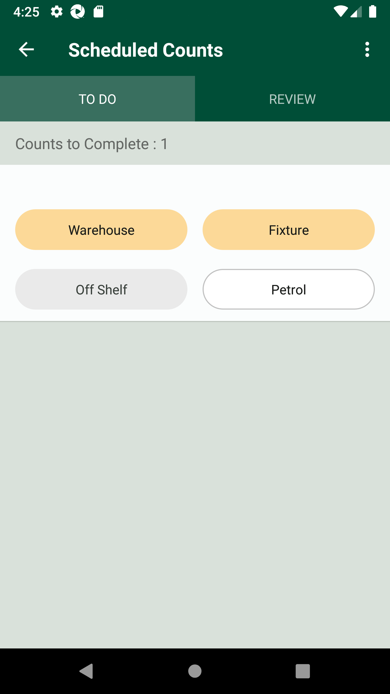
Then I click on 'CountedProductsView' on page 'CountsPO'Step skippedThen I click on 'CountProduct' on page 'CountsPO'Step skippedThen I click on 'AddCount' on page 'CountsPO'Step skippedAnd I get dynamic product quantity 'EnterAddStockQty' displayed on UI page 'CountsPO'Step skippedThen I Enter the quantity as "", "EnterStockQty" and click on "Confirm" button on "CountsPO" pageStep skippedAnd I verify "" dynamic "" quantity for item "" is on page 'CountsPO'Step skippedAnd I click on Back ButtonStep skippedThen I click on 'CountedProductsView' on page 'CountsPO'Step skippedThen I click on 'CountProduct' on page 'CountsPO'Step skippedAnd I get dynamic product quantity 'EnterAddStockQty' displayed on UI page 'CountsPO'Step skippedThen I click on 'EditCount' on page 'CountsPO'Step skippedThen I click on dynamic "sLocatorName" "Count 1" on page 'CountsPO'Step skippedThen I Enter the quantity as "", "EnterStockQty" and click on "Confirm" button on "CountsPO" pageStep skippedAnd I verify "" dynamic "" quantity for item "" is on page 'CountsPO'Step skippedAnd I click on Back ButtonStep skippedAnd I logout of the systemStep skippedFailWAREHOUSE Location - Verify 'EDIT COUNT' and 'Add to Count' functionality.Given The Post Storewalk body to create Count storewalk api for Store id "8",name "PM_LIST_ITEM_COUNT" and mode "list"When I enter Username and Password for SMA Manager userAnd I click on login button for SMAThen I click on 'stockMngmtText' on page 'HomePagePO_New'Then I click on 'ScheduledCounts' on page 'HomePagePO_New'Then I click on dynamic 'WarehouseParentLnk' for 'Warehouse' for product "PM_LIST_ITEM_COUNT" on page 'CountsPO'Then I click on 'CountedProductsView' on page 'CountsPO'com.morrisons.common.action.Hook.afterScenario(io.cucumber.java.Scenario)Then I click on 'CountProduct' on page 'CountsPO'Step skippedAnd I get dynamic product quantity 'EnterAddStockQty' displayed on UI page 'CountsPO'Step skippedThen I click on 'AddCount' on page 'CountsPO'Step skippedThen I Enter the quantity as "8", "EnterStockQty" and click on "Confirm" button on "CountsPO" pageStep skippedAnd I verify "Add" dynamic "8" quantity for item "102390337" is on page 'CountsPO'Step skippedAnd I click on Back ButtonStep skippedThen I click on 'CountedProductsView' on page 'CountsPO'Step skippedThen I click on 'CountProduct' on page 'CountsPO'Step skippedAnd I get dynamic product quantity 'EnterAddStockQty' displayed on UI page 'CountsPO'Step skippedThen I click on 'EditCount' on page 'CountsPO'Step skippedThen I click on dynamic "sLocatorName" "Count 1" on page 'CountsPO'Step skippedThen I Enter the quantity as "8", "EnterStockQty" and click on "Confirm" button on "CountsPO" pageStep skippedAnd I verify "Edit" dynamic "8" quantity for item "102390337" is on page 'CountsPO'Step skippedAnd I click on Back ButtonStep skippedAnd I logout of the systemStep skippedFailFIXTURE Location - Confirm counts and Verify COMPLETE status for FIXTURE Location.FailFIXTURE Location - Confirm counts and Verify COMPLETE status for FIXTURE Location.Given The Post Storewalk body to create Count storewalk api for Store id "8",name "PM_SCAN_ITEM_COUNT" and mode "scan"Given Post count storewalk Item list data is "101545309"When I enter Username and Password for SMA Manager userAnd I click on login button for SMAThen I click on 'stockMngmtText' on page 'HomePagePO_New'Then I click on 'ScheduledCounts' on page 'HomePagePO_New'Then I click on dynamic 'WarehouseParentLnk' for 'Fixture' for product "PM_SCAN_ITEM_COUNT" on page 'CountsPO'Then I click on 'CompleteBtn' on page 'CountsPO'com.morrisons.common.action.Hook.afterScenario(io.cucumber.java.Scenario)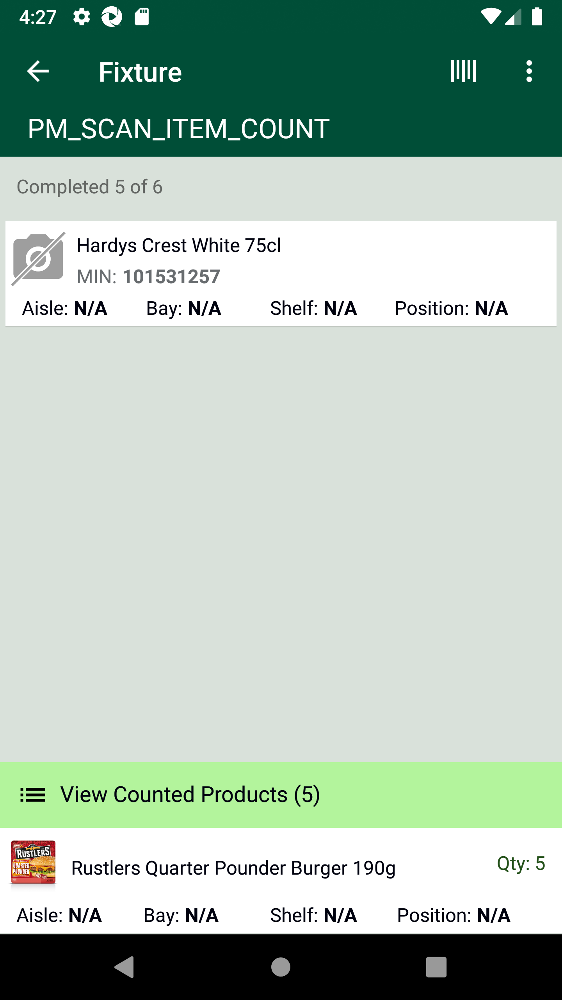
Then I Verify count status for "PM_SCAN_ITEM_COUNT" has changed to 'Complete' on 'CountsPO' pageStep skippedAnd I click on Back ButtonStep skippedAnd I logout of the systemStep skippedAnd Get the generated Access Tocken for SMA app Login ServiceStep skippedGiven Get request is made to Get storewalks service for current dateStep skippedAnd Get Operation perform on service requestStep skippedAnd Get Walkid for Store id "8" and walk type "Counts"Step skippedWhen Get request is made to Get Count storewalk response for count name "PM_SCAN_ITEM_COUNT" and store id "8"Step skippedAnd Get Operation perform on service requestStep skippedThen Verify Get count storewalk for count name "PM_SCAN_ITEM_COUNT" and store id "8"Step skippedAnd Verify Storewalk status as "Available" is present in Get storewalk service responseStep skippedThen Verify for "On_Shelf" Count location status "CountComplete" is present in Get storewalk service responseStep skippedAnd Verify for Product id "101545309" Count type "singles" is present in Get storewalk service responseStep skippedThen Verify for Product id "101545309" Action type "Complete" is present in Get storewalk service responseStep skippedThen Verify for Product id "101545309" Range Status "active" is present in Get storewalk service responseStep skippedAnd Verify store id "8" is not Curfew storeStep skippedFailFIXTURE Location - Confirm counts and Verify COMPLETE status for FIXTURE Location.Given The Post Storewalk body to create Count storewalk api for Store id "8",name "PM_LIST_ITEM_COUNT" and mode "list"Given Post count storewalk Item list data is "102390337"When I enter Username and Password for SMA Manager userAnd I click on login button for SMAThen I click on 'stockMngmtText' on page 'HomePagePO_New'Then I click on 'ScheduledCounts' on page 'HomePagePO_New'Then I click on dynamic 'WarehouseParentLnk' for 'Warehouse' for product "PM_LIST_ITEM_COUNT" on page 'CountsPO'Then I click on 'CompleteBtn' on page 'CountsPO'com.morrisons.common.action.Hook.afterScenario(io.cucumber.java.Scenario)Then I Verify count status for "PM_LIST_ITEM_COUNT" has changed to 'Complete' on 'CountsPO' pageStep skippedAnd I click on Back ButtonStep skippedAnd I logout of the systemStep skippedAnd Get the generated Access Tocken for SMA app Login ServiceStep skippedGiven Get request is made to Get storewalks service for current dateStep skippedAnd Get Operation perform on service requestStep skippedAnd Get Walkid for Store id "8" and walk type "Counts"Step skippedWhen Get request is made to Get Count storewalk response for count name "PM_LIST_ITEM_COUNT" and store id "8"Step skippedAnd Get Operation perform on service requestStep skippedThen Verify Get count storewalk for count name "PM_LIST_ITEM_COUNT" and store id "8"Step skippedAnd Verify Storewalk status as "Available" is present in Get storewalk service responseStep skippedThen Verify for "On_Shelf" Count location status "CountComplete" is present in Get storewalk service responseStep skippedAnd Verify for Product id "102390337" Count type "singles" is present in Get storewalk service responseStep skippedThen Verify for Product id "102390337" Action type "Complete" is present in Get storewalk service responseStep skippedThen Verify for Product id "102390337" Range Status "active" is present in Get storewalk service responseStep skippedAnd Verify store id "8" is not Curfew storeStep skippedFailFIXTURE Location - Reopen the completed Count, select the product and verify 'ADD TO COUNT' and 'EDIT COUNT' buttons are displayed.FailFIXTURE Location - Reopen the completed Count, select the product and verify 'ADD TO COUNT' and 'EDIT COUNT' buttons are displayed.Given The Post Storewalk body to create Count storewalk api for Store id "8",name "PM_SCAN_ITEM_COUNT" and mode "scan"When I enter Username and Password for SMA Manager userAnd I click on login button for SMAThen I click on 'stockMngmtText' on page 'HomePagePO_New'Then I click on 'ScheduledCounts' on page 'HomePagePO_New'Then I click on dynamic 'WarehouseParentLnk' for 'Fixture' for product "PM_SCAN_ITEM_COUNT" on page 'CountsPO'Then I click on 'CountedProductsView' on page 'CountsPO'com.morrisons.common.action.Hook.afterScenario(io.cucumber.java.Scenario)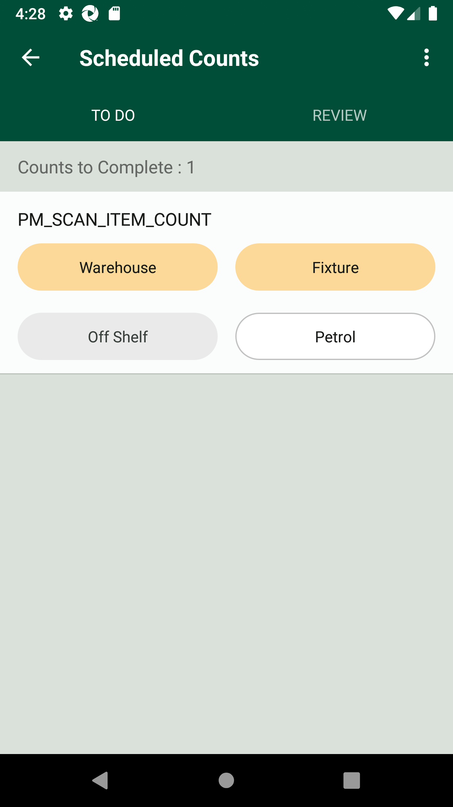
Then I click on 'CountProduct' on page 'CountsPO'Step skippedThen I verify ADD to Count and EDIT Count buttons are displayedStep skippedAnd I click on Back ButtonStep skippedThen I will confirm CountsStep skippedAnd I logout of the systemStep skippedFailFIXTURE Location - Reopen the completed Count, select the product and verify 'ADD TO COUNT' and 'EDIT COUNT' buttons are displayed.Given The Post Storewalk body to create Count storewalk api for Store id "8",name "PM_LIST_ITEM_COUNT" and mode "list"When I enter Username and Password for SMA Manager userAnd I click on login button for SMAThen I click on 'stockMngmtText' on page 'HomePagePO_New'Then I click on 'ScheduledCounts' on page 'HomePagePO_New'Then I click on dynamic 'WarehouseParentLnk' for 'Fixture' for product "PM_LIST_ITEM_COUNT" on page 'CountsPO'Then I click on 'CountedProductsView' on page 'CountsPO'com.morrisons.common.action.Hook.afterScenario(io.cucumber.java.Scenario)Then I click on 'CountProduct' on page 'CountsPO'Step skippedThen I verify ADD to Count and EDIT Count buttons are displayedStep skippedAnd I click on Back ButtonStep skippedThen I will confirm CountsStep skippedAnd I logout of the systemStep skippedFailFIXTURE Location - Verify 'EDIT COUNT' and 'Add to Count' functionality.FailFIXTURE Location - Verify 'EDIT COUNT' and 'Add to Count' functionality.Given The Post Storewalk body to create Count storewalk api for Store id "8",name "PM_SCAN_ITEM_COUNT" and mode "scan"When I enter Username and Password for SMA Manager userAnd I click on login button for SMAThen I click on 'stockMngmtText' on page 'HomePagePO_New'Then I click on 'ScheduledCounts' on page 'HomePagePO_New'Then I click on dynamic 'WarehouseParentLnk' for 'Fixture' for product "PM_SCAN_ITEM_COUNT" on page 'CountsPO'Then I click on 'CountedProductsView' on page 'CountsPO'Then I click on 'CountProduct' on page 'CountsPO'And I get dynamic product quantity 'EnterAddStockQty' displayed on UI page 'CountsPO'Then I click on 'AddCount' on page 'CountsPO'Then I Enter the quantity as "3", "EnterStockQty" and click on "Confirm" button on "CountsPO" pageAnd I verify "Add" dynamic "3" quantity for item "102390337" is on page 'CountsPO'com.morrisons.common.action.Hook.afterScenario(io.cucumber.java.Scenario)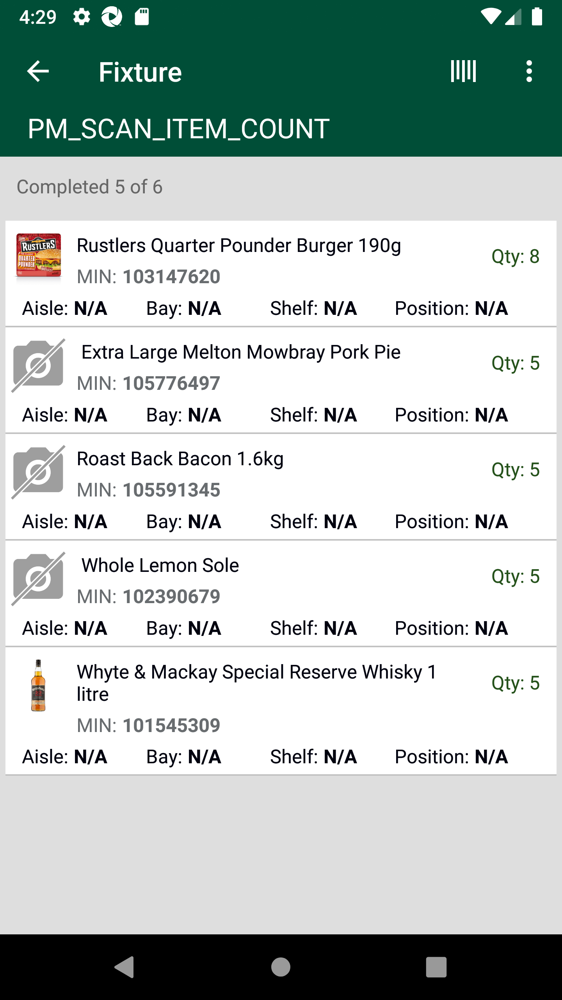
And I click on Back ButtonStep skippedThen I click on 'CountedProductsView' on page 'CountsPO'Step skippedThen I click on 'CountProduct' on page 'CountsPO'Step skippedAnd I get dynamic product quantity 'EnterAddStockQty' displayed on UI page 'CountsPO'Step skippedThen I click on 'EditCount' on page 'CountsPO'Step skippedThen I click on dynamic "sLocatorName" "Count 1" on page 'CountsPO'Step skippedThen I Enter the quantity as "3", "EnterStockQty" and click on "Confirm" button on "CountsPO" pageStep skippedAnd I verify "Edit" dynamic "3" quantity for item "102390337" is on page 'CountsPO'Step skippedAnd I click on Back ButtonStep skippedThen I click on 'CompleteBtn' on page 'CountsPO'Step skippedThen I Verify count status for "PM_SCAN_ITEM_COUNT" has changed to 'Complete' on 'CountsPO' pageStep skippedAnd I logout of the systemStep skippedFailFIXTURE Location - Verify 'EDIT COUNT' and 'Add to Count' functionality.Given The Post Storewalk body to create Count storewalk api for Store id "8",name "PM_LIST_ITEM_COUNT" and mode "list"When I enter Username and Password for SMA Manager userAnd I click on login button for SMAThen I click on 'stockMngmtText' on page 'HomePagePO_New'Then I click on 'ScheduledCounts' on page 'HomePagePO_New'Then I click on dynamic 'WarehouseParentLnk' for 'Fixture' for product "PM_LIST_ITEM_COUNT" on page 'CountsPO'Then I click on 'CountedProductsView' on page 'CountsPO'com.morrisons.common.action.Hook.afterScenario(io.cucumber.java.Scenario)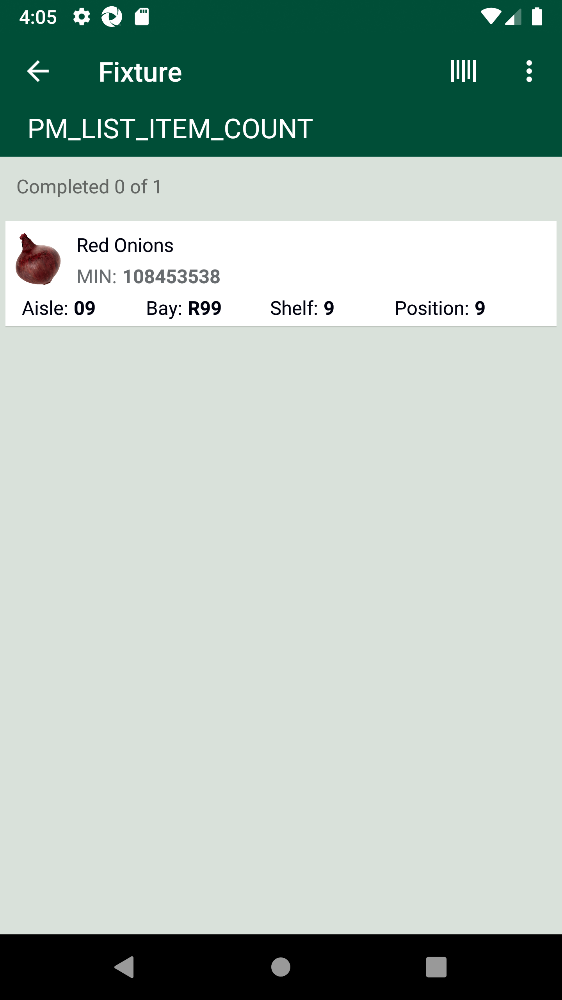
Then I click on 'CountProduct' on page 'CountsPO'Step skippedAnd I get dynamic product quantity 'EnterAddStockQty' displayed on UI page 'CountsPO'Step skippedThen I click on 'AddCount' on page 'CountsPO'Step skippedThen I Enter the quantity as "8", "EnterStockQty" and click on "Confirm" button on "CountsPO" pageStep skippedAnd I verify "Add" dynamic "8" quantity for item "102390337" is on page 'CountsPO'Step skippedAnd I click on Back ButtonStep skippedThen I click on 'CountedProductsView' on page 'CountsPO'Step skippedThen I click on 'CountProduct' on page 'CountsPO'Step skippedAnd I get dynamic product quantity 'EnterAddStockQty' displayed on UI page 'CountsPO'Step skippedThen I click on 'EditCount' on page 'CountsPO'Step skippedThen I click on dynamic "sLocatorName" "Count 1" on page 'CountsPO'Step skippedThen I Enter the quantity as "8", "EnterStockQty" and click on "Confirm" button on "CountsPO" pageStep skippedAnd I verify "Edit" dynamic "8" quantity for item "102390337" is on page 'CountsPO'Step skippedAnd I click on Back ButtonStep skippedThen I click on 'CompleteBtn' on page 'CountsPO'Step skippedThen I Verify count status for "PM_LIST_ITEM_COUNT" has changed to 'Complete' on 'CountsPO' pageStep skippedAnd I logout of the systemStep skippedFailOFFSHELF Location - Select Items in generated Count for "" mode, Enter quantity and confirm. FailOFFSHELF Location - Select Items in generated Count for "scan" mode, Enter quantity and confirm.Given The Post Storewalk body to create Count storewalk api for Store id "8",name "PM_SCAN_ITEM_COUNT" and mode "scan"Given Post count storewalk Item list data is "105140288"When I enter Username and Password for SMA Manager userAnd I click on login button for SMAThen I click on 'stockMngmtText' on page 'HomePagePO_New'Then I click on 'ScheduledCounts' on page 'HomePagePO_New'Then I click on dynamic 'WarehouseParentLnk' for 'Off Shelf' for product "PM_SCAN_ITEM_COUNT" on page 'CountsPO'Then I click on 'Enter_barcode' on page 'CountsPO'com.morrisons.common.action.Hook.afterScenario(io.cucumber.java.Scenario)Then Enter "105140288" numberStep skippedThen I Enter the quantity as "5", "quantity" and click on "Confirm" button on "CountsPO" pageStep skippedAnd I click on Back ButtonStep skippedFailOFFSHELF Location - Select Items in generated Count for "list" mode, Enter quantity and confirm.Given The Post Storewalk body to create Count storewalk api for Store id "8",name "PM_LIST_ITEM_COUNT" and mode "list"Given Post count storewalk Item list data is "102390337"When I enter Username and Password for SMA Manager userAnd I click on login button for SMAThen I click on 'stockMngmtText' on page 'HomePagePO_New'Then I click on 'ScheduledCounts' on page 'HomePagePO_New'Then I click on dynamic 'WarehouseParentLnk' for 'Off Shelf' for product "PM_LIST_ITEM_COUNT" on page 'CountsPO'Then I verify "PM_LIST_ITEM_COUNT" counts are displayed in 'WarehouseLocation' on 'CountsPO' pagecom.morrisons.common.action.Hook.afterScenario(io.cucumber.java.Scenario)Then I click on 'CountedProductsView' on page 'CountsPO'Step skippedThen I click on 'CountProduct' on page 'CountsPO'Step skippedAnd I get dynamic product quantity 'EnterAddStockQty' displayed on UI page 'CountsPO'Step skippedThen I click on 'EditCount' on page 'CountsPO'Step skippedThen I click on dynamic "sLocatorName" "Count 1" on page 'CountsPO'Step skippedThen I Enter the quantity as "5", "EnterStockQty" and click on "Confirm" button on "CountsPO" pageStep skippedAnd I verify "Edit" dynamic "5" quantity for item "102390337" is on page 'CountsPO'Step skippedAnd I click on Back ButtonStep skippedFailOFFSHELF Location - Confirm counts and Verify COMPLETE status for OFFSHELF Location.FailOFFSHELF Location - Confirm counts and Verify COMPLETE status for OFFSHELF Location.Given The Post Storewalk body to create Count storewalk api for Store id "8",name "PM_SCAN_ITEM_COUNT" and mode "scan"Given Post count storewalk Item list data is "101545309"When I enter Username and Password for SMA Manager userAnd I click on login button for SMAThen I click on 'stockMngmtText' on page 'HomePagePO_New'Then I click on 'ScheduledCounts' on page 'HomePagePO_New'Then I click on dynamic 'WarehouseParentLnk' for 'Off Shelf' for product "PM_SCAN_ITEM_COUNT" on page 'CountsPO'Then I click on 'CompleteOffShelfBtn' on page 'CountsPO'com.morrisons.common.action.Hook.afterScenario(io.cucumber.java.Scenario)Then I Verify count status for "PM_SCAN_ITEM_COUNT" has changed to 'Complete' on 'CountsPO' pageStep skippedAnd I click on Back ButtonStep skippedAnd Get the generated Access Tocken for SMA app Login ServiceStep skippedGiven Get request is made to Get storewalks service for current dateStep skippedAnd Get Operation perform on service requestStep skippedAnd Get Walkid for Store id "8" and walk type "Counts"Step skippedWhen Get request is made to Get Count storewalk response for count name "PM_SCAN_ITEM_COUNT" and store id "8"Step skippedAnd Get Operation perform on service requestStep skippedThen Verify Get count storewalk for count name "PM_SCAN_ITEM_COUNT" and store id "8"Step skippedAnd Verify Storewalk status as "Available" is present in Get storewalk service responseStep skippedThen Verify for "Off_Shelf" Count location status "CountComplete" is present in Get storewalk service responseStep skippedAnd Verify store id "8" is not Curfew storeStep skippedFailOFFSHELF Location - Confirm counts and Verify COMPLETE status for OFFSHELF Location.Given The Post Storewalk body to create Count storewalk api for Store id "8",name "PM_LIST_ITEM_COUNT" and mode "list"Given Post count storewalk Item list data is "102390337"When I enter Username and Password for SMA Manager userAnd I click on login button for SMAThen I click on 'stockMngmtText' on page 'HomePagePO_New'Then I click on 'ScheduledCounts' on page 'HomePagePO_New'Then I click on dynamic 'WarehouseParentLnk' for 'Off Shelf' for product "PM_LIST_ITEM_COUNT" on page 'CountsPO'Then I click on 'CompleteOffShelfBtn' on page 'CountsPO'com.morrisons.common.action.Hook.afterScenario(io.cucumber.java.Scenario)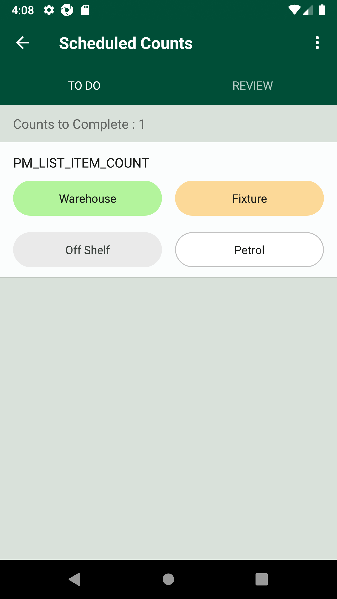
Then I Verify count status for "PM_LIST_ITEM_COUNT" has changed to 'Complete' on 'CountsPO' pageStep skippedAnd I click on Back ButtonStep skippedAnd I logout of the systemStep skippedAnd Get the generated Access Tocken for SMA app Login ServiceStep skippedGiven Get request is made to Get storewalks service for current dateStep skippedAnd Get Operation perform on service requestStep skippedAnd Get Walkid for Store id "8" and walk type "Counts"Step skippedWhen Get request is made to Get Count storewalk response for count name "PM_LIST_ITEM_COUNT" and store id "8"Step skippedAnd Get Operation perform on service requestStep skippedThen Verify Get count storewalk for count name "PM_LIST_ITEM_COUNT" and store id "8"Step skippedThen Verify for "Off_Shelf" Count location status "CountComplete" is present in Get storewalk service responseStep skippedAnd Verify store id "8" is not Curfew storeStep skippedFailPETROL Location - Select Items in generated Count for "" mode, Enter quantity and confirm. FailPETROL Location - Select Items in generated Count for "scan" mode, Enter quantity and confirm.Given The Post Storewalk body to create Count storewalk api for Store id "8",name "PM_SCAN_ITEM_COUNT" and mode "scan"Given Post count storewalk Item list data is "105140288"When I enter Username and Password for SMA Manager userAnd I click on login button for SMAThen I click on 'stockMngmtText' on page 'HomePagePO_New'Then I click on 'ScheduledCounts' on page 'HomePagePO_New'Then I click on dynamic 'WarehouseParentLnk' for 'Petrol' for product "PM_SCAN_ITEM_COUNT" on page 'CountsPO'Then I click on 'Enter_barcode' on page 'CountsPO'Then Enter "105140288" numberThen I click on 'EditCount' on page 'CountsPO'com.morrisons.common.action.Hook.afterScenario(io.cucumber.java.Scenario)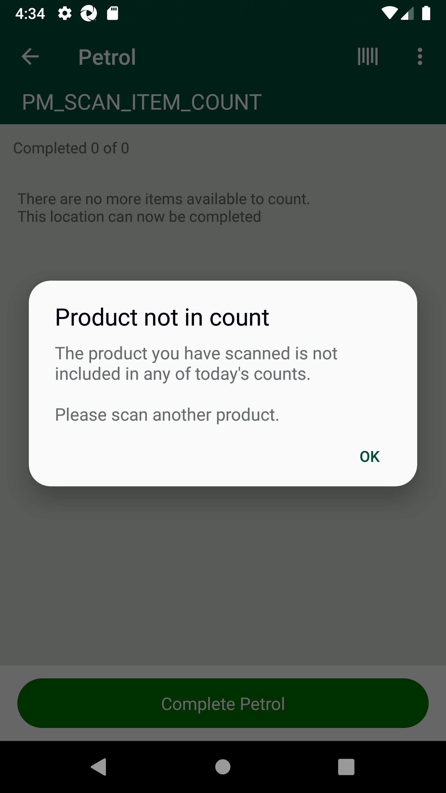
Then I click on dynamic "sLocatorName" "Count 1" on page 'CountsPO'Step skippedThen I Enter the quantity as "5", "quantity" and click on "Confirm" button on "CountsPO" pageStep skippedAnd I click on Back ButtonStep skippedFailPETROL Location - Confirm counts and Verify COMPLETE status for PETROL Location.FailPETROL Location - Confirm counts and Verify COMPLETE status for PETROL Location.Given The Post Storewalk body to create Count storewalk api for Store id "8",name "PM_SCAN_ITEM_COUNT" and mode "scan"Given Post count storewalk Item list data is "101545309"When I enter Username and Password for SMA Manager userAnd I click on login button for SMAThen I click on 'stockMngmtText' on page 'HomePagePO_New'Then I click on 'ScheduledCounts' on page 'HomePagePO_New'Then I click on dynamic 'WarehouseParentLnk' for 'Petrol' for product "PM_SCAN_ITEM_COUNT" on page 'CountsPO'Then I click on 'CompletePetrolBtn' on page 'CountsPO'Then I click on 'CompleteConfirmBtn' on page 'CountsPO'com.morrisons.common.action.Hook.afterScenario(io.cucumber.java.Scenario)Then I Verify count status for "PM_SCAN_ITEM_COUNT" has changed to 'Complete' on 'CountsPO' pageStep skippedAnd I click on Back ButtonStep skippedAnd I logout of the systemStep skippedAnd Get the generated Access Tocken for SMA app Login ServiceStep skippedGiven Get request is made to Get storewalks service for current dateStep skippedAnd Get Operation perform on service requestStep skippedAnd Get Walkid for Store id "8" and walk type "Counts"Step skippedWhen Get request is made to Get Count storewalk response for count name "PM_SCAN_ITEM_COUNT" and store id "8"Step skippedAnd Get Operation perform on service requestStep skippedThen Verify Get count storewalk for count name "PM_SCAN_ITEM_COUNT" and store id "8"Step skippedThen Verify for "Petrol" Count location status "CountComplete" is present in Get storewalk service responseStep skippedAnd Verify for Product id "101545309" Count type "singles" is present in Get storewalk service responseStep skippedThen Verify for Product id "101545309" Action type "Complete" is present in Get storewalk service responseStep skippedThen Verify for Product id "101545309" Range Status "active" is present in Get storewalk service responseStep skippedAnd Verify store id "8" is not Curfew storeStep skippedFailPETROL Location - Confirm counts and Verify COMPLETE status for PETROL Location.Given The Post Storewalk body to create Count storewalk api for Store id "8",name "PM_LIST_ITEM_COUNT" and mode "list"Given Post count storewalk Item list data is "102390337"When I enter Username and Password for SMA Manager userAnd I click on login button for SMAThen I click on 'stockMngmtText' on page 'HomePagePO_New'Then I click on 'ScheduledCounts' on page 'HomePagePO_New'Then I click on dynamic 'WarehouseParentLnk' for 'Petrol' for product "PM_LIST_ITEM_COUNT" on page 'CountsPO'Then I click on 'CompletePetrolBtn' on page 'CountsPO'Then I Verify count status for "PM_LIST_ITEM_COUNT" has changed to 'Complete' on 'CountsPO' pageAnd I click on Back ButtonAnd I logout of the systemAnd Get the generated Access Tocken for SMA app Login ServiceGiven Get request is made to Get storewalks service for current dateAnd Get Operation perform on service requestAnd Get Walkid for Store id "8" and walk type "Counts"When Get request is made to Get Count storewalk response for count name "PM_LIST_ITEM_COUNT" and store id "8"And Get Operation perform on service requestThen Verify Get count storewalk for count name "PM_LIST_ITEM_COUNT" and store id "8"Then Verify for "Petrol" Count location status "CountComplete" is present in Get storewalk service responseAnd Verify for Product id "102390337" Count type "singles" is present in Get storewalk service responsecom.morrisons.common.action.Hook.afterScenario(io.cucumber.java.Scenario)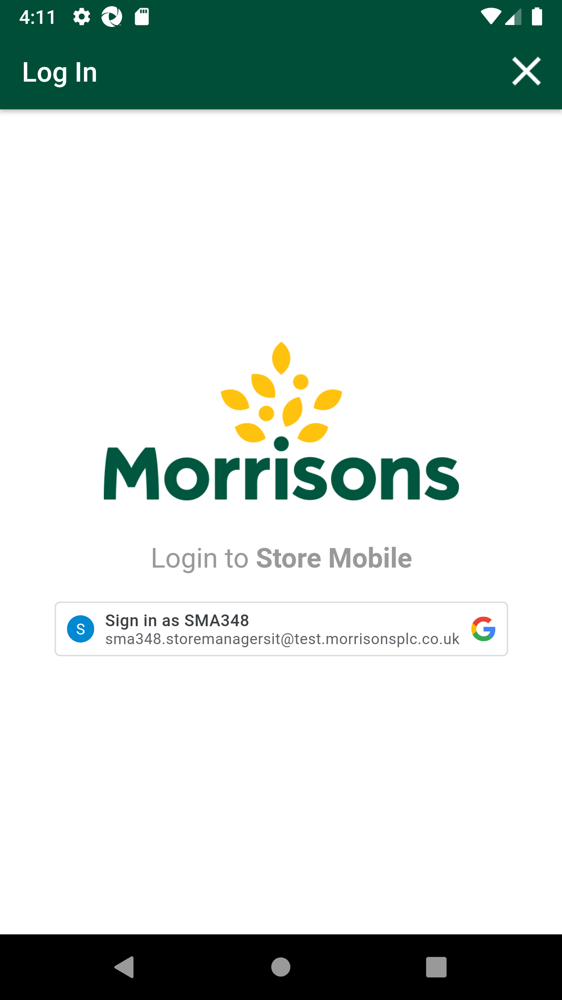
Then Verify for Product id "102390337" Action type "Complete" is present in Get storewalk service responseStep skippedThen Verify for Product id "102390337" Range Status "active" is present in Get storewalk service responseStep skippedAnd Verify store id "8" is not Curfew storeStep skippedFailPETROL Location - Reopen the completed Count, select the product and verify 'ADD TO COUNT' and 'EDIT COUNT' buttons are displayed.FailPETROL Location - Reopen the completed Count, select the product and verify 'ADD TO COUNT' and 'EDIT COUNT' buttons are displayed.Given The Post Storewalk body to create Count storewalk api for Store id "8",name "PM_SCAN_ITEM_COUNT" and mode "scan"When I enter Username and Password for SMA Manager userAnd I click on login button for SMAThen I click on 'stockMngmtText' on page 'HomePagePO_New'Then I click on 'ScheduledCounts' on page 'HomePagePO_New'Then I click on dynamic 'WarehouseParentLnk' for 'Petrol' for product "PM_SCAN_ITEM_COUNT" on page 'CountsPO'Then I click on 'CountedProductsView' on page 'CountsPO'com.morrisons.common.action.Hook.afterScenario(io.cucumber.java.Scenario)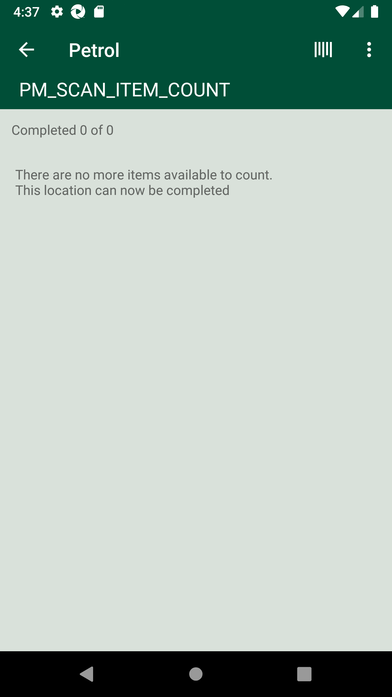
Then I click on 'CountProduct' on page 'CountsPO'Step skippedThen I verify ADD to Count and EDIT Count buttons are displayedStep skippedAnd I click on Back ButtonStep skippedThen I click on Product categoryStep skippedAnd I complete PetrolStep skippedAnd Verify "Confirm Counts" alert is displayed for countsStep skippedThen I click on Confirm button on Confirm counts alertStep skippedAnd I click on Back ButtonStep skippedAnd I logout of the systemStep skippedFailPETROL Location - Verify 'EDIT COUNT' and 'Add to Count' functionality.FailPETROL Location - Verify 'EDIT COUNT' and 'Add to Count' functionality.Given The Post Storewalk body to create Count storewalk api for Store id "8",name "PM_SCAN_ITEM_COUNT" and mode "scan"When I enter Username and Password for SMA Manager userAnd I click on login button for SMAThen I click on 'stockMngmtText' on page 'HomePagePO_New'Then I click on 'ScheduledCounts' on page 'HomePagePO_New'Then I click on dynamic 'WarehouseParentLnk' for 'Petrol' for product "PM_SCAN_ITEM_COUNT" on page 'CountsPO'Then I verify "PM_SCAN_ITEM_COUNT" counts are displayed in 'WarehouseLocation' on 'CountsPO' pageThen I click on 'CountedProductsView' on page 'CountsPO'com.morrisons.common.action.Hook.afterScenario(io.cucumber.java.Scenario)Then I click on 'CountProduct' on page 'CountsPO'Step skippedAnd I get dynamic product quantity 'EnterAddStockQty' displayed on UI page 'CountsPO'Step skippedThen I click on 'EditCount' on page 'CountsPO'Step skippedThen I click on dynamic "sLocatorName" "Count 1" on page 'CountsPO'Step skippedThen I Enter the quantity as "8", "EnterStockQty" and click on "Confirm" button on "CountsPO" pageStep skippedAnd I verify "Edit" dynamic "8" quantity for item "- " is on page 'CountsPO'
Step skippedAnd I click on Back ButtonStep skippedThen I click on 'CountedProductsView' on page 'CountsPO'Step skippedThen I click on 'CountProduct' on page 'CountsPO'Step skippedAnd I get dynamic product quantity 'EnterAddStockQty' displayed on UI page 'CountsPO'Step skippedThen I click on 'AddCount' on page 'CountsPO'Step skippedThen I Enter the quantity as "8", "EnterStockQty" and click on "Confirm" button on "CountsPO" pageStep skippedAnd I verify "Add" dynamic "8" quantity for item "- " is on page 'CountsPO'
Step skippedAnd I logout of the systemStep skippedFailComplete all the count locations on UI and Verify storewalk status as 'CountComplete' in Storewalk service.FailComplete all the count locations on UI and Verify storewalk status as 'CountComplete' in Storewalk service.Given The Post Storewalk body to create Count storewalk api for Store id "8",name "PM_SCAN_ITEM_COUNT" and mode "scan"Given Post count storewalk Item list data is "101545309"When I enter Username and Password for SMA Manager userAnd I click on login button for SMAThen I click on 'stockMngmtText' on page 'HomePagePO_New'Then I click on 'ScheduledCounts' on page 'HomePagePO_New'Then I click on 'Review' on page 'CountsPO'Then I verify "PM_SCAN_ITEM_COUNT" counts are displayed in 'Reviewlocation' on 'CountsPO' pagecom.morrisons.common.action.Hook.afterScenario(io.cucumber.java.Scenario)Then I click on dynamic "sLocatorName" "PM_SCAN_ITEM_COUNT" on page 'CountsPO'Step skippedAnd I click on Back ButtonStep skippedAnd I logout of the systemStep skippedAnd Get the generated Access Tocken for SMA app Login ServiceStep skippedGiven Get request is made to Get storewalks service for current dateStep skippedAnd Get Operation perform on service requestStep skippedAnd Get Walkid for Store id "8" and walk type "Counts"Step skippedWhen Get request is made to Get Count storewalk response for count name "PM_SCAN_ITEM_COUNT" and store id "8"Step skippedAnd Get Operation perform on service requestStep skippedThen Verify Get count storewalk for count name "PM_SCAN_ITEM_COUNT" and store id "8"Step skippedAnd Verify Storewalk status as "CountComplete" is present in Get storewalk service responseStep skippedFailComplete all the count locations on UI and Verify storewalk status as 'CountComplete' in Storewalk service.Given The Post Storewalk body to create Count storewalk api for Store id "8",name "PM_LIST_ITEM_COUNT" and mode "list"Given Post count storewalk Item list data is "102390337"When I enter Username and Password for SMA Manager usercom.morrisons.common.action.Hook.afterScenario(io.cucumber.java.Scenario)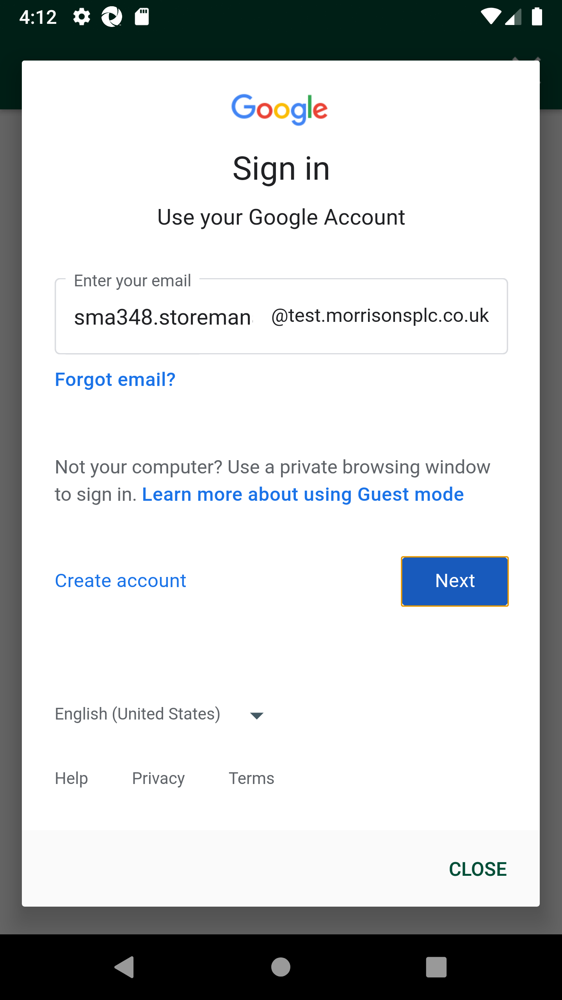
And I click on login button for SMAStep skippedThen I click on 'stockMngmtText' on page 'HomePagePO_New'Step skippedThen I click on 'ScheduledCounts' on page 'HomePagePO_New'Step skippedThen I click on 'Review' on page 'CountPO'Step skippedThen I verify "PM_LIST_ITEM_COUNT" counts are displayed in 'Reviewlocation' on 'CountsPO' pageStep skippedAnd I click on Back ButtonStep skippedAnd I logout of the systemStep skippedAnd Get the generated Access Tocken for SMA app Login ServiceStep skippedGiven Get request is made to Get storewalks service for current dateStep skippedAnd Get Operation perform on service requestStep skippedAnd Get Walkid for Store id "8" and walk type "Counts"Step skippedWhen Get request is made to Get Count storewalk response for count name "PM_LIST_ITEM_COUNT" and store id "8"Step skippedAnd Get Operation perform on service requestStep skippedThen Verify Get count storewalk for count name "PM_LIST_ITEM_COUNT" and store id "8"Step skippedAnd Verify Storewalk status as "CountComplete" is present in Get storewalk service responseStep skippedFailVerify Count is edited in Review sectionFailVerify Count is edited in Review sectionGiven The Post Storewalk body to create Count storewalk api for Store id "8",name "PM_SCAN_ITEM_COUNT" and mode "scan"Given Post count storewalk Item list data is "101545309"When I enter Username and Password for SMA Manager userAnd I click on login button for SMAThen I click on 'stockMngmtText' on page 'HomePagePO_New'Then I click on 'ScheduledCounts' on page 'HomePagePO_New'Then I click on 'Review' on page 'CountsPO'Then I verify "PM_SCAN_ITEM_COUNT" counts are displayed in 'Reviewlocation' on 'CountsPO' pagecom.morrisons.common.action.Hook.afterScenario(io.cucumber.java.Scenario)Then I click on dynamic "sLocatorName" "PM_SCAN_ITEM_COUNT" on page 'CountsPO'Step skippedThen I click on 'CountProduct' on page 'CountsPO'Step skippedAnd I get dynamic product quantity 'reviewStockQty' displayed on UI page 'CountsPO'Step skippedThen I click on 'WarehouseLnk' on page 'CountsReview'Step skippedThen I Enter the quantity as "8", "EnterStockQty" and click on "Confirm" button on "CountsPO" pageStep skippedAnd I verify dynamic "Edit" dynamic "8" quantity for item "- " for category "Warehouse" is on page 'CountsPO'
Step skippedAnd I click on Back ButtonStep skippedAnd I logout of the systemStep skippedFailVerify Count is edited in Review sectionGiven The Post Storewalk body to create Count storewalk api for Store id "8",name "PM_LIST_ITEM_COUNT" and mode "list"Given Post count storewalk Item list data is "102390337"When I enter Username and Password for SMA Manager userAnd I click on login button for SMAThen I click on 'stockMngmtText' on page 'HomePagePO_New'Then I click on 'ScheduledCounts' on page 'HomePagePO_New'Then I click on 'Review' on page 'CountPO'com.morrisons.common.action.Hook.afterScenario(io.cucumber.java.Scenario)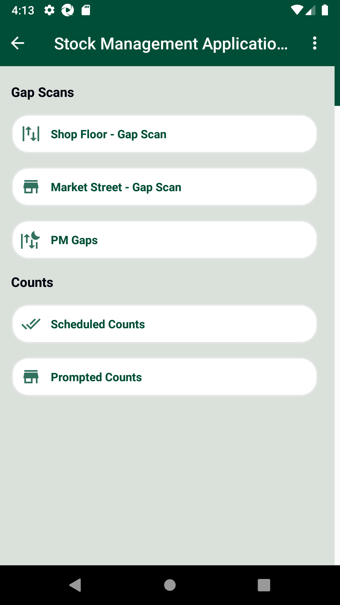
Then I verify "PM_LIST_ITEM_COUNT" counts are displayed in 'Reviewlocation' on 'CountsPO' pageStep skippedThen I click on 'CountedProductsView' on page 'CountsPO'Step skippedThen I click on 'CountProduct' on page 'CountsPO'Step skippedThen I click on 'EditCount' on page 'CountsPO'Step skippedAnd I get dynamic product quantity 'EnterAddStockQty' displayed on UI page 'CountsPO'Step skippedThen I click on dynamic "sLocatorName" "Count 1" on page 'CountsPO'Step skippedThen I Enter the quantity as "8", "EnterStockQty" and click on "Confirm" button on "CountsPO" pageStep skippedAnd I verify "Add" dynamic "8" quantity for item "- " is on page 'CountsPO'
Step skippedThen I click on 'CompleteBtn' on page 'CountsPO'Step skippedThen I Verify count status for "PM_LIST_ITEM_COUNT" has changed to 'Complete' on 'CountsPO' pageStep skippedAnd I click on Back ButtonStep skippedAnd I logout of the systemStep skippedFailConfirm the capture count in Review section. Then, verify Review section status on UI as 'Completed' and Storewalk status as 'ReviewComplete' in the Storewalk service.FailConfirm the capture count in Review section. Then, verify Review section status on UI as 'Completed' and Storewalk status as 'ReviewComplete' in the Storewalk service.Given The Post Storewalk body to create Count storewalk api for Store id "8",name "PM_SCAN_ITEM_COUNT" and mode "scan"Given Post count storewalk Item list data is "101545309"When I enter Username and Password for SMA Manager userAnd I click on login button for SMAThen I click on 'stockMngmtText' on page 'HomePagePO_New'Then I click on 'ScheduledCounts' on page 'HomePagePO_New'Then I click on 'Review' on page 'CountsPO'Then I verify "PM_SCAN_ITEM_COUNT" counts are displayed in 'Reviewlocation' on 'CountsPO' pagecom.morrisons.common.action.Hook.afterScenario(io.cucumber.java.Scenario)Then I click on 'CompleteBtn' on page 'CountsPO'Step skippedThen I Verify count status for "PM_SCAN_ITEM_COUNT" has changed to 'Complete' on 'CountsPO' pageStep skippedAnd I click on Back ButtonStep skippedAnd I logout of the systemStep skippedAnd Get the generated Access Tocken for SMA app Login ServiceStep skippedGiven Get request is made to Get storewalks service for current dateStep skippedAnd Get Operation perform on service requestStep skippedAnd Get Walkid for Store id "8" and walk type "Counts"Step skippedWhen Get request is made to Get Count storewalk response for count name "PM_SCAN_ITEM_COUNT" and store id "8"Step skippedAnd Get Operation perform on service requestStep skippedThen Verify Get count storewalk for count name "PM_SCAN_ITEM_COUNT" and store id "8"Step skippedFailConfirm the capture count in Review section. Then, verify Review section status on UI as 'Completed' and Storewalk status as 'ReviewComplete' in the Storewalk service.Given The Post Storewalk body to create Count storewalk api for Store id "8",name "PM_LIST_ITEM_COUNT" and mode "list"Given Post count storewalk Item list data is "111113500"When I enter Username and Password for SMA Manager userAnd I click on login button for SMAThen I click on 'stockMngmtText' on page 'HomePagePO_New'Then I click on 'ScheduledCounts' on page 'HomePagePO_New'Then I click on 'Review' on page 'CountsPO'Then I verify "PM_LIST_ITEM_COUNT" counts are displayed in 'Reviewlocation' on 'CountsPO' pagecom.morrisons.common.action.Hook.afterScenario(io.cucumber.java.Scenario)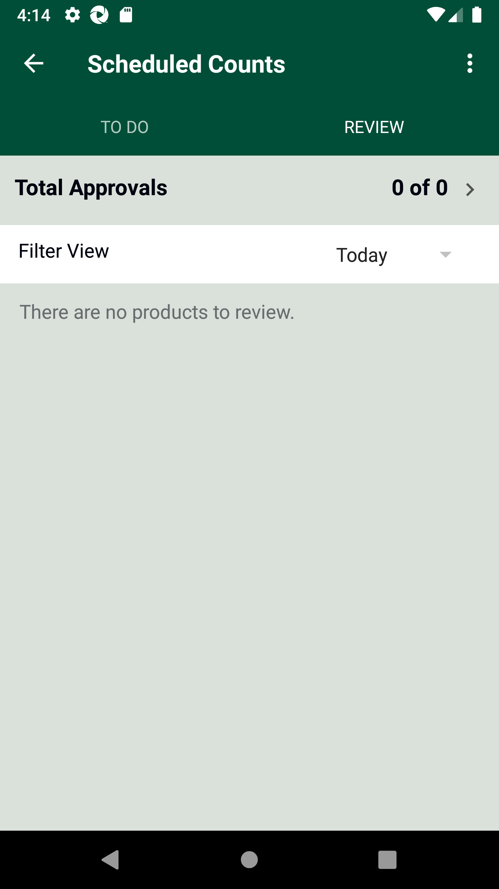
Then I click on 'CompleteBtn' on page 'CountsPO'Step skippedThen I Verify count status for "PM_LIST_ITEM_COUNT" has changed to 'Complete' on 'CountsPO' pageStep skippedAnd I click on Back ButtonStep skippedAnd I logout of the systemStep skippedAnd Get the generated Access Tocken for SMA app Login ServiceStep skippedGiven Get request is made to Get storewalks service for current dateStep skippedAnd Get Operation perform on service requestStep skippedAnd Get Walkid for Store id "8" and walk type "Counts"Step skippedWhen Get request is made to Get Count storewalk response for count name "PM_LIST_ITEM_COUNT" and store id "8"Step skippedAnd Get Operation perform on service requestStep skippedThen Verify Get count storewalk for count name "PM_LIST_ITEM_COUNT" and store id "8"Step skippedAnd Verify Storewalk status as "ReviewComplete" is present in Get storewalk service responseStep skippedFailVerify that After REVIEW we cannot select the review completed product from WAREHOUSE location.FailVerify that After REVIEW we cannot select the review completed product from WAREHOUSE location.Given The Post Storewalk body to create Count storewalk api for Store id "8",name "PM_SCAN_ITEM_COUNT" and mode "scan"Given Post count storewalk Item list data is "101545309"When I enter Username and Password for SMA Manager userAnd I click on login button for SMAThen I click on 'stockMngmtText' on page 'HomePagePO_New'Then I click on 'ScheduledCounts' on page 'HomePagePO_New'Then I click on dynamic 'WarehouseParentLnk' for 'Warehouse' for product "PM_SCAN_ITEM_COUNT" on page 'CountsPO'Then I verify "PM_SCAN_ITEM_COUNT" counts are displayed in 'WarehouseLocation' on 'CountsPO' pagecom.morrisons.common.action.Hook.afterScenario(io.cucumber.java.Scenario)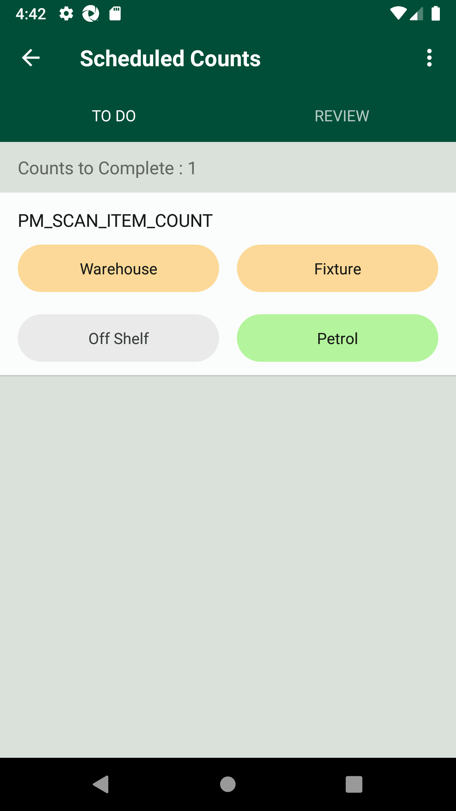
Then The field should be disabledStep skippedAnd I logout of the systemStep skippedPassVerify that After REVIEW we cannot select the review completed product from WAREHOUSE location.Given The Post Storewalk body to create Count storewalk api for Store id "8",name "PM_LIST_ITEM_COUNT" and mode "list"Given Post count storewalk Item list data is "102390337"When I enter Username and Password for SMA Manager userAnd I click on login button for SMAThen I click on 'stockMngmtText' on page 'HomePagePO_New'Then I click on 'ScheduledCounts' on page 'HomePagePO_New'Then I click on dynamic 'WarehouseParentLnk' for 'Warehouse' for product "PM_LIST_ITEM_COUNT" on page 'CountsPO'Then I verify "PM_LIST_ITEM_COUNT" counts are displayed in 'WarehouseLocation' on 'CountsPO' pageThen The field should be disabledAnd I logout of the systemPassVerify that After REVIEW we cannot select the review completed product from FIXTURE location.PassVerify that After REVIEW we cannot select the review completed product from FIXTURE location.Given The Post Storewalk body to create Count storewalk api for Store id "8",name "PM_SCAN_ITEM_COUNT" and mode "scan"Given Post count storewalk Item list data is "101545309"When I enter Username and Password for SMA Manager userAnd I click on login button for SMAThen I click on 'stockMngmtText' on page 'HomePagePO_New'Then I click on 'ScheduledCounts' on page 'HomePagePO_New'Then I click on dynamic 'WarehouseParentLnk' for 'Fixture' for product "PM_SCAN_ITEM_COUNT" on page 'CountsPO'Then I verify "PM_SCAN_ITEM_COUNT" counts are displayed in 'WarehouseLocation' on 'CountsPO' pageThen The field should be disabledAnd I logout of the systemPassVerify that After REVIEW we cannot select the review completed product from FIXTURE location.Given The Post Storewalk body to create Count storewalk api for Store id "8",name "PM_LIST_ITEM_COUNT" and mode "list"Given Post count storewalk Item list data is "102390337"When I enter Username and Password for SMA Manager userAnd I click on login button for SMAThen I click on 'stockMngmtText' on page 'HomePagePO_New'Then I click on 'ScheduledCounts' on page 'HomePagePO_New'Then I click on dynamic 'WarehouseParentLnk' for 'Fixture' for product "PM_LIST_ITEM_COUNT" on page 'CountsPO'Then I verify "PM_LIST_ITEM_COUNT" counts are displayed in 'WarehouseLocation' on 'CountsPO' pageThen The field should be disabledAnd I logout of the systemFailVerify Counts SUMMARY after completing all the locations on UIFailVerify Counts SUMMARY after completing all the locations on UIGiven The Post Storewalk body to create Count storewalk api for Store id "8",name "PM_SCAN_ITEM_COUNT" and mode "scan"Given Post count storewalk Item list data is "101545309"When I enter Username and Password for SMA Manager userAnd I click on login button for SMAThen I click on 'stockMngmtText' on page 'HomePagePO_New'Then I click on 'ScheduledCounts' on page 'HomePagePO_New'Then I click on 'Review' on page 'CountsPO'Then I verify the fields in Counts Summarycom.morrisons.common.action.Hook.afterScenario(io.cucumber.java.Scenario)And I logout of the systemStep skippedFailVerify Counts SUMMARY after completing all the locations on UIGiven The Post Storewalk body to create Count storewalk api for Store id "8",name "PM_LIST_ITEM_COUNT" and mode "list"Given Post count storewalk Item list data is "102390337"When I enter Username and Password for SMA Manager userAnd I click on login button for SMAThen I click on Countscom.morrisons.common.action.Hook.afterScenario(io.cucumber.java.Scenario)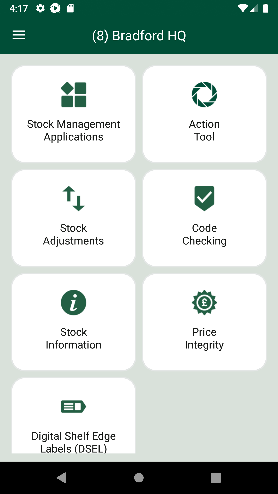
Then I click on Counts SummaryStep skippedThen I verify the fields in Counts SummaryStep skippedThen I verify if checkbox are checkedStep skippedAnd I logout of the systemStep skippedFailSUMMARY - Verify in Summary section DAY spinner dropdown is displayed.FailSUMMARY - Verify in Summary section DAY spinner dropdown is displayed.When I enter Username and Password for SMA Manager userAnd I click on login button for SMAThen I click on 'stockMngmtText' on page 'HomePagePO_New'Then I click on 'ScheduledCounts' on page 'HomePagePO_New'Then I click on 'Review' on page 'CountsPO'Then I verify the fields in Counts Summarycom.morrisons.common.action.Hook.afterScenario(io.cucumber.java.Scenario)Then I verify Day spinner option is displayedStep skippedAnd I click on Day spinnerStep skippedThen I verify Day spinner with three optins are displayed - Today, Yesterday and date Day before yesterdayStep skippedAnd I click on Back ButtonStep skippedAnd I logout of the systemStep skippedFailWarehouse Location - Select an Items in generated Count for "" mode, Enter quantity and confirm. FailWarehouse Location - Select an Items in generated Count for "list" mode, Enter quantity and confirm.Given The Post Storewalk body to create Count storewalk api for Store id "8",name "PM_LIST_ITEM_COUNT" and mode "list"Given Post count storewalk Item list data is "103126642"When I enter Username and Password for SMA Manager userThen I click on 'stockMngmtText' on page 'HomePagePO_New'com.morrisons.common.action.Hook.afterScenario(io.cucumber.java.Scenario)Then I click on 'ScheduledCounts' on page 'HomePagePO_New'Step skippedThen I click on dynamic 'WarehouseParentLnk' for 'Warehouse' for product "PM_LIST_ITEM_COUNT" on page 'CountsPO'Step skippedThen I verify "PM_LIST_ITEM_COUNT" counts are displayed in 'WarehouseLocation' on 'CountsPO' pageStep skippedThen I click on 'CountedProductsView' on page 'CountsPO'Step skippedThen I click on 'CountProduct' on page 'CountsPO'Step skippedThen I click on 'EditCount' on page 'CountsPO'Step skippedThen I click on dynamic "sLocatorName" "Count 1" on page 'CountsPO'Step skippedThen I Enter the quantity as "5", "EnterStockQty" and click on "Confirm" button on "CountsPO" pageStep skippedAnd I click on Back ButtonStep skippedFailWarehouse Location - Select an Items in generated Count for "list" mode, Enter quantity and confirm.Given The Post Storewalk body to create Count storewalk api for Store id "8",name "PM_LIST_ITEM_COUNT" and mode "list"Given Post count storewalk Item list data is "108335531"When I enter Username and Password for SMA Manager userThen I click on 'stockMngmtText' on page 'HomePagePO_New'com.morrisons.common.action.Hook.afterScenario(io.cucumber.java.Scenario)Then I click on 'ScheduledCounts' on page 'HomePagePO_New'Step skippedThen I click on dynamic 'WarehouseParentLnk' for 'Warehouse' for product "PM_LIST_ITEM_COUNT" on page 'CountsPO'Step skippedThen I verify "PM_LIST_ITEM_COUNT" counts are displayed in 'WarehouseLocation' on 'CountsPO' pageStep skippedThen I click on 'CountedProductsView' on page 'CountsPO'Step skippedThen I click on 'CountProduct' on page 'CountsPO'Step skippedThen I click on 'EditCount' on page 'CountsPO'Step skippedThen I click on dynamic "sLocatorName" "Count 1" on page 'CountsPO'Step skippedThen I Enter the quantity as "5", "EnterStockQty" and click on "Confirm" button on "CountsPO" pageStep skippedAnd I click on Back ButtonStep skippedFailWarehouse Location - Select an Items in generated Count for "list" mode, Enter quantity and confirm.Given The Post Storewalk body to create Count storewalk api for Store id "8",name "PM_LIST_ITEM_COUNT" and mode "list"Given Post count storewalk Item list data is "108453538"When I enter Username and Password for SMA Manager userThen I click on 'stockMngmtText' on page 'HomePagePO_New'com.morrisons.common.action.Hook.afterScenario(io.cucumber.java.Scenario)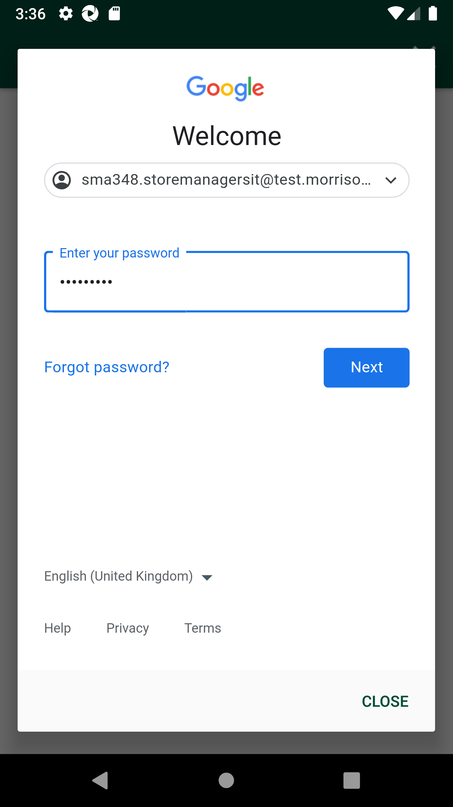
Then I click on 'ScheduledCounts' on page 'HomePagePO_New'Step skippedThen I click on dynamic 'WarehouseParentLnk' for 'Warehouse' for product "PM_LIST_ITEM_COUNT" on page 'CountsPO'Step skippedThen I verify "PM_LIST_ITEM_COUNT" counts are displayed in 'WarehouseLocation' on 'CountsPO' pageStep skippedThen I click on 'CountedProductsView' on page 'CountsPO'Step skippedThen I click on 'CountProduct' on page 'CountsPO'Step skippedThen I click on 'EditCount' on page 'CountsPO'Step skippedThen I click on dynamic "sLocatorName" "Count 1" on page 'CountsPO'Step skippedThen I Enter the quantity as "5", "EnterStockQty" and click on "Confirm" button on "CountsPO" pageStep skippedAnd I click on Back ButtonStep skippedFailWarehouse Location - Select an Items in generated Count for "list" mode, Enter quantity and confirm.Given The Post Storewalk body to create Count storewalk api for Store id "8",name "PM_LIST_ITEM_COUNT" and mode "list"Given Post count storewalk Item list data is "106798541"When I enter Username and Password for SMA Manager userThen I click on 'stockMngmtText' on page 'HomePagePO_New'com.morrisons.common.action.Hook.afterScenario(io.cucumber.java.Scenario)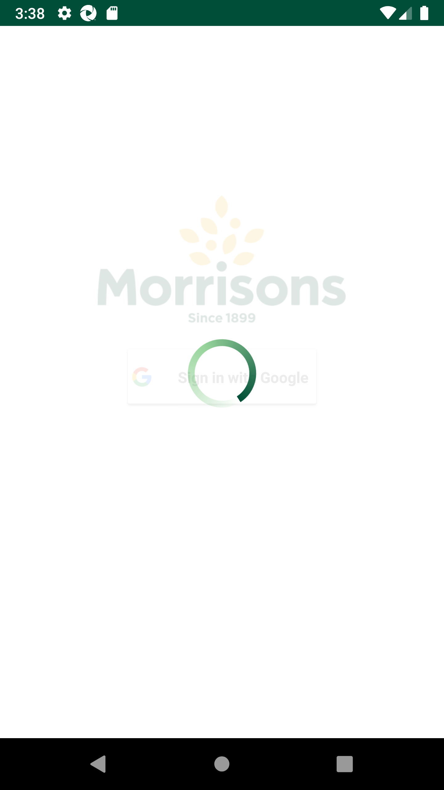
Then I click on 'ScheduledCounts' on page 'HomePagePO_New'Step skippedThen I click on dynamic 'WarehouseParentLnk' for 'Warehouse' for product "PM_LIST_ITEM_COUNT" on page 'CountsPO'Step skippedThen I verify "PM_LIST_ITEM_COUNT" counts are displayed in 'WarehouseLocation' on 'CountsPO' pageStep skippedThen I click on 'CountedProductsView' on page 'CountsPO'Step skippedThen I click on 'CountProduct' on page 'CountsPO'Step skippedThen I click on 'EditCount' on page 'CountsPO'Step skippedThen I click on dynamic "sLocatorName" "Count 1" on page 'CountsPO'Step skippedThen I Enter the quantity as "5", "EnterStockQty" and click on "Confirm" button on "CountsPO" pageStep skippedAnd I click on Back ButtonStep skippedFailWarehouse Location - Select an Items in generated Count for "list" mode, Enter quantity and confirm.Given The Post Storewalk body to create Count storewalk api for Store id "8",name "PM_LIST_ITEM_COUNT" and mode "list"Given Post count storewalk Item list data is "105348994"When I enter Username and Password for SMA Manager userThen I click on 'stockMngmtText' on page 'HomePagePO_New'Then I click on 'ScheduledCounts' on page 'HomePagePO_New'Then I click on dynamic 'WarehouseParentLnk' for 'Warehouse' for product "PM_LIST_ITEM_COUNT" on page 'CountsPO'Then I verify "PM_LIST_ITEM_COUNT" counts are displayed in 'WarehouseLocation' on 'CountsPO' pageThen I click on 'CountedProductsView' on page 'CountsPO'com.morrisons.common.action.Hook.afterScenario(io.cucumber.java.Scenario)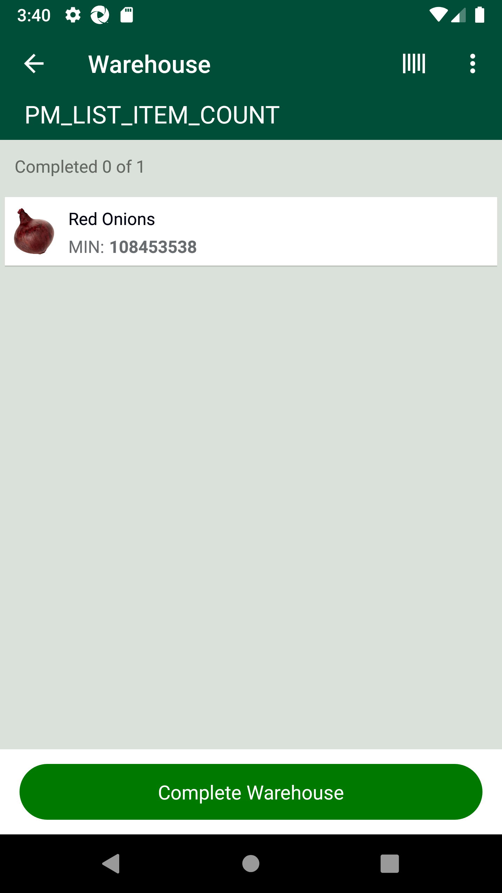
Then I click on 'CountProduct' on page 'CountsPO'Step skippedThen I click on 'EditCount' on page 'CountsPO'Step skippedThen I click on dynamic "sLocatorName" "Count 1" on page 'CountsPO'Step skippedThen I Enter the quantity as "5", "EnterStockQty" and click on "Confirm" button on "CountsPO" pageStep skippedAnd I click on Back ButtonStep skippedFailWarehouse Location - Select an Items in generated Count for "list" mode, Enter quantity and confirm.Given The Post Storewalk body to create Count storewalk api for Store id "8",name "PM_LIST_ITEM_COUNT" and mode "list"Given Post count storewalk Item list data is "108313236"When I enter Username and Password for SMA Manager userThen I click on 'stockMngmtText' on page 'HomePagePO_New'Then I click on 'ScheduledCounts' on page 'HomePagePO_New'Then I click on dynamic 'WarehouseParentLnk' for 'Warehouse' for product "PM_LIST_ITEM_COUNT" on page 'CountsPO'Then I verify "PM_LIST_ITEM_COUNT" counts are displayed in 'WarehouseLocation' on 'CountsPO' pageThen I click on 'CountedProductsView' on page 'CountsPO'com.morrisons.common.action.Hook.afterScenario(io.cucumber.java.Scenario)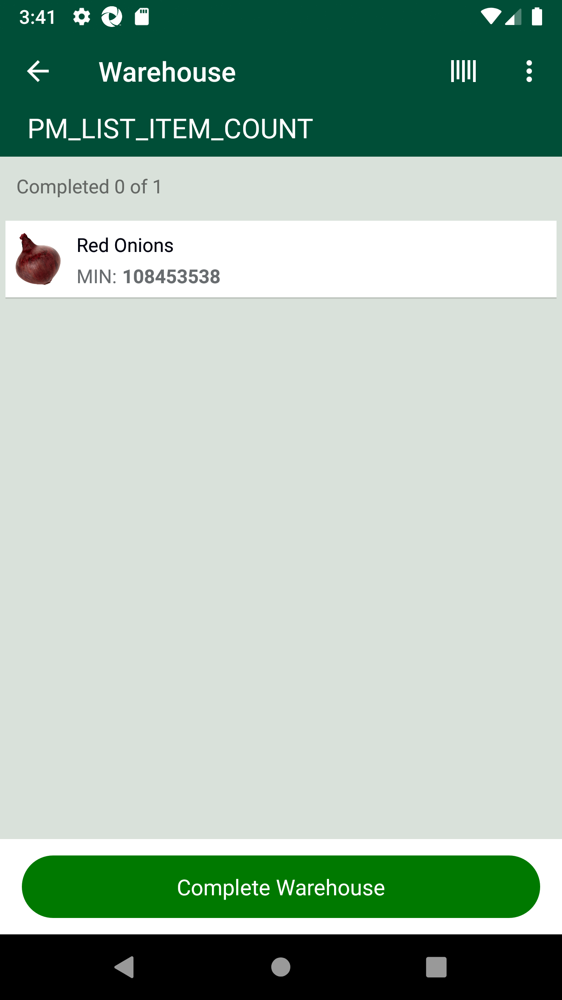
Then I click on 'CountProduct' on page 'CountsPO'Step skippedThen I click on 'EditCount' on page 'CountsPO'Step skippedThen I click on dynamic "sLocatorName" "Count 1" on page 'CountsPO'Step skippedThen I Enter the quantity as "5", "EnterStockQty" and click on "Confirm" button on "CountsPO" pageStep skippedAnd I click on Back ButtonStep skippedFailWarehouse Location - Select an Items in generated Count for "list" mode, Enter quantity and confirm.Given The Post Storewalk body to create Count storewalk api for Store id "8",name "PM_LIST_ITEM_COUNT" and mode "list"Given Post count storewalk Item list data is "105734123"When I enter Username and Password for SMA Manager userThen I click on 'stockMngmtText' on page 'HomePagePO_New'com.morrisons.common.action.Hook.afterScenario(io.cucumber.java.Scenario)Then I click on 'ScheduledCounts' on page 'HomePagePO_New'Step skippedThen I click on dynamic 'WarehouseParentLnk' for 'Warehouse' for product "PM_LIST_ITEM_COUNT" on page 'CountsPO'Step skippedThen I verify "PM_LIST_ITEM_COUNT" counts are displayed in 'WarehouseLocation' on 'CountsPO' pageStep skippedThen I click on 'CountedProductsView' on page 'CountsPO'Step skippedThen I click on 'CountProduct' on page 'CountsPO'Step skippedThen I click on 'EditCount' on page 'CountsPO'Step skippedThen I click on dynamic "sLocatorName" "Count 1" on page 'CountsPO'Step skippedThen I Enter the quantity as "5", "EnterStockQty" and click on "Confirm" button on "CountsPO" pageStep skippedAnd I click on Back ButtonStep skippedFailWarehouse Location - Select an Items in generated Count for "list" mode, Enter quantity and confirm.Given The Post Storewalk body to create Count storewalk api for Store id "8",name "PM_LIST_ITEM_COUNT" and mode "list"Given Post count storewalk Item list data is "102390337"When I enter Username and Password for SMA Manager userThen I click on 'stockMngmtText' on page 'HomePagePO_New'Then I click on 'ScheduledCounts' on page 'HomePagePO_New'Then I click on dynamic 'WarehouseParentLnk' for 'Warehouse' for product "PM_LIST_ITEM_COUNT" on page 'CountsPO'Then I verify "PM_LIST_ITEM_COUNT" counts are displayed in 'WarehouseLocation' on 'CountsPO' pageThen I click on 'CountedProductsView' on page 'CountsPO'com.morrisons.common.action.Hook.afterScenario(io.cucumber.java.Scenario)Then I click on 'CountProduct' on page 'CountsPO'Step skippedThen I click on 'EditCount' on page 'CountsPO'Step skippedThen I click on dynamic "sLocatorName" "Count 1" on page 'CountsPO'Step skippedThen I Enter the quantity as "5", "EnterStockQty" and click on "Confirm" button on "CountsPO" pageStep skippedAnd I click on Back ButtonStep skippedFailWarehouse Location - Select an Items in generated Count for "list" mode, Enter quantity and confirm.Given The Post Storewalk body to create Count storewalk api for Store id "8",name "PM_LIST_ITEM_COUNT" and mode "list"Given Post count storewalk Item list data is "103153229"When I enter Username and Password for SMA Manager userThen I click on 'stockMngmtText' on page 'HomePagePO_New'com.morrisons.common.action.Hook.afterScenario(io.cucumber.java.Scenario)Then I click on 'ScheduledCounts' on page 'HomePagePO_New'Step skippedThen I click on dynamic 'WarehouseParentLnk' for 'Warehouse' for product "PM_LIST_ITEM_COUNT" on page 'CountsPO'Step skippedThen I verify "PM_LIST_ITEM_COUNT" counts are displayed in 'WarehouseLocation' on 'CountsPO' pageStep skippedThen I click on 'CountedProductsView' on page 'CountsPO'Step skippedThen I click on 'CountProduct' on page 'CountsPO'Step skippedThen I click on 'EditCount' on page 'CountsPO'Step skippedThen I click on dynamic "sLocatorName" "Count 1" on page 'CountsPO'Step skippedThen I Enter the quantity as "5", "EnterStockQty" and click on "Confirm" button on "CountsPO" pageStep skippedAnd I click on Back ButtonStep skippedFailFixture Location - Select an Items in generated Count for "" mode, Enter quantity and confirm. FailFixture Location - Select an Items in generated Count for "list" mode, Enter quantity and confirm.Given The Post Storewalk body to create Count storewalk api for Store id "8",name "PM_LIST_ITEM_COUNT" and mode "list"Given Post count storewalk Item list data is "103126642"When I enter Username and Password for SMA Manager userAnd I click on login button for SMAThen I click on 'stockMngmtText' on page 'HomePagePO_New'Then I click on 'ScheduledCounts' on page 'HomePagePO_New'Then I click on dynamic 'WarehouseParentLnk' for 'Fixture' for product "PM_LIST_ITEM_COUNT" on page 'CountsPO'Then I verify "PM_LIST_ITEM_COUNT" counts are displayed in 'WarehouseLocation' on 'CountsPO' pageThen I click on 'CountedProductsView' on page 'CountsPO'com.morrisons.common.action.Hook.afterScenario(io.cucumber.java.Scenario)Then I click on 'CountProduct' on page 'CountsPO'Step skippedAnd I get dynamic product quantity 'EnterAddStockQty' displayed on UI page 'CountsPO'Step skippedThen I click on 'EditCount' on page 'CountsPO'Step skippedThen I click on dynamic "sLocatorName" "Count 1" on page 'CountsPO'Step skippedThen I Enter the quantity as "5", "EnterStockQty" and click on "Confirm" button on "CountsPO" pageStep skippedAnd I verify "Edit" dynamic "5" quantity for item "- " is on page 'CountsPO'
Step skippedAnd I click on product "103126642" in the listStep skippedFailFixture Location - Select an Items in generated Count for "list" mode, Enter quantity and confirm.Given The Post Storewalk body to create Count storewalk api for Store id "8",name "PM_LIST_ITEM_COUNT" and mode "list"Given Post count storewalk Item list data is "108335531"When I enter Username and Password for SMA Manager userAnd I click on login button for SMAThen I click on 'stockMngmtText' on page 'HomePagePO_New'Then I click on 'ScheduledCounts' on page 'HomePagePO_New'Then I click on dynamic 'WarehouseParentLnk' for 'Fixture' for product "PM_LIST_ITEM_COUNT" on page 'CountsPO'Then I verify "PM_LIST_ITEM_COUNT" counts are displayed in 'WarehouseLocation' on 'CountsPO' pageThen I click on 'CountedProductsView' on page 'CountsPO'com.morrisons.common.action.Hook.afterScenario(io.cucumber.java.Scenario)Then I click on 'CountProduct' on page 'CountsPO'Step skippedAnd I get dynamic product quantity 'EnterAddStockQty' displayed on UI page 'CountsPO'Step skippedThen I click on 'EditCount' on page 'CountsPO'Step skippedThen I click on dynamic "sLocatorName" "Count 1" on page 'CountsPO'Step skippedThen I Enter the quantity as "5", "EnterStockQty" and click on "Confirm" button on "CountsPO" pageStep skippedAnd I verify "Edit" dynamic "5" quantity for item "- " is on page 'CountsPO'
Step skippedAnd I click on product "108335531" in the listStep skippedFailFixture Location - Select an Items in generated Count for "list" mode, Enter quantity and confirm.Given The Post Storewalk body to create Count storewalk api for Store id "8",name "PM_LIST_ITEM_COUNT" and mode "list"Given Post count storewalk Item list data is "108453538"When I enter Username and Password for SMA Manager userAnd I click on login button for SMAThen I click on 'stockMngmtText' on page 'HomePagePO_New'Then I click on 'ScheduledCounts' on page 'HomePagePO_New'Then I click on dynamic 'WarehouseParentLnk' for 'Fixture' for product "PM_LIST_ITEM_COUNT" on page 'CountsPO'Then I verify "PM_LIST_ITEM_COUNT" counts are displayed in 'WarehouseLocation' on 'CountsPO' pageThen I click on 'CountedProductsView' on page 'CountsPO'com.morrisons.common.action.Hook.afterScenario(io.cucumber.java.Scenario)Then I click on 'CountProduct' on page 'CountsPO'Step skippedAnd I get dynamic product quantity 'EnterAddStockQty' displayed on UI page 'CountsPO'Step skippedThen I click on 'EditCount' on page 'CountsPO'Step skippedThen I click on dynamic "sLocatorName" "Count 1" on page 'CountsPO'Step skippedThen I Enter the quantity as "5", "EnterStockQty" and click on "Confirm" button on "CountsPO" pageStep skippedAnd I verify "Edit" dynamic "5" quantity for item "- " is on page 'CountsPO'
Step skippedAnd I click on product "108453538" in the listStep skippedFailFixture Location - Select an Items in generated Count for "list" mode, Enter quantity and confirm.Given The Post Storewalk body to create Count storewalk api for Store id "8",name "PM_LIST_ITEM_COUNT" and mode "list"Given Post count storewalk Item list data is "106798541"When I enter Username and Password for SMA Manager userAnd I click on login button for SMAThen I click on 'stockMngmtText' on page 'HomePagePO_New'Then I click on 'ScheduledCounts' on page 'HomePagePO_New'Then I click on dynamic 'WarehouseParentLnk' for 'Fixture' for product "PM_LIST_ITEM_COUNT" on page 'CountsPO'Then I verify "PM_LIST_ITEM_COUNT" counts are displayed in 'WarehouseLocation' on 'CountsPO' pageThen I click on 'CountedProductsView' on page 'CountsPO'com.morrisons.common.action.Hook.afterScenario(io.cucumber.java.Scenario)Then I click on 'CountProduct' on page 'CountsPO'Step skippedAnd I get dynamic product quantity 'EnterAddStockQty' displayed on UI page 'CountsPO'Step skippedThen I click on 'EditCount' on page 'CountsPO'Step skippedThen I click on dynamic "sLocatorName" "Count 1" on page 'CountsPO'Step skippedThen I Enter the quantity as "5", "EnterStockQty" and click on "Confirm" button on "CountsPO" pageStep skippedAnd I verify "Edit" dynamic "5" quantity for item "- " is on page 'CountsPO'
Step skippedAnd I click on product "106798541" in the listStep skippedFailFixture Location - Select an Items in generated Count for "list" mode, Enter quantity and confirm.Given The Post Storewalk body to create Count storewalk api for Store id "8",name "PM_LIST_ITEM_COUNT" and mode "list"Given Post count storewalk Item list data is "105348994"When I enter Username and Password for SMA Manager userAnd I click on login button for SMAThen I click on 'stockMngmtText' on page 'HomePagePO_New'Then I click on 'ScheduledCounts' on page 'HomePagePO_New'Then I click on dynamic 'WarehouseParentLnk' for 'Fixture' for product "PM_LIST_ITEM_COUNT" on page 'CountsPO'Then I verify "PM_LIST_ITEM_COUNT" counts are displayed in 'WarehouseLocation' on 'CountsPO' pageThen I click on 'CountedProductsView' on page 'CountsPO'com.morrisons.common.action.Hook.afterScenario(io.cucumber.java.Scenario)Then I click on 'CountProduct' on page 'CountsPO'Step skippedAnd I get dynamic product quantity 'EnterAddStockQty' displayed on UI page 'CountsPO'Step skippedThen I click on 'EditCount' on page 'CountsPO'Step skippedThen I click on dynamic "sLocatorName" "Count 1" on page 'CountsPO'Step skippedThen I Enter the quantity as "5", "EnterStockQty" and click on "Confirm" button on "CountsPO" pageStep skippedAnd I verify "Edit" dynamic "5" quantity for item "- " is on page 'CountsPO'
Step skippedAnd I click on product "105348994" in the listStep skippedFailFixture Location - Select an Items in generated Count for "list" mode, Enter quantity and confirm.Given The Post Storewalk body to create Count storewalk api for Store id "8",name "PM_LIST_ITEM_COUNT" and mode "list"Given Post count storewalk Item list data is "108313236"When I enter Username and Password for SMA Manager userAnd I click on login button for SMAThen I click on 'stockMngmtText' on page 'HomePagePO_New'Then I click on 'ScheduledCounts' on page 'HomePagePO_New'Then I click on dynamic 'WarehouseParentLnk' for 'Fixture' for product "PM_LIST_ITEM_COUNT" on page 'CountsPO'Then I verify "PM_LIST_ITEM_COUNT" counts are displayed in 'WarehouseLocation' on 'CountsPO' pageThen I click on 'CountedProductsView' on page 'CountsPO'com.morrisons.common.action.Hook.afterScenario(io.cucumber.java.Scenario)Then I click on 'CountProduct' on page 'CountsPO'Step skippedAnd I get dynamic product quantity 'EnterAddStockQty' displayed on UI page 'CountsPO'Step skippedThen I click on 'EditCount' on page 'CountsPO'Step skippedThen I click on dynamic "sLocatorName" "Count 1" on page 'CountsPO'Step skippedThen I Enter the quantity as "5", "EnterStockQty" and click on "Confirm" button on "CountsPO" pageStep skippedAnd I verify "Edit" dynamic "5" quantity for item "- " is on page 'CountsPO'
Step skippedAnd I click on product "108313236" in the listStep skippedFailFixture Location - Select an Items in generated Count for "list" mode, Enter quantity and confirm.Given The Post Storewalk body to create Count storewalk api for Store id "8",name "PM_LIST_ITEM_COUNT" and mode "list"Given Post count storewalk Item list data is "105734123"When I enter Username and Password for SMA Manager userAnd I click on login button for SMAThen I click on 'stockMngmtText' on page 'HomePagePO_New'Then I click on 'ScheduledCounts' on page 'HomePagePO_New'Then I click on dynamic 'WarehouseParentLnk' for 'Fixture' for product "PM_LIST_ITEM_COUNT" on page 'CountsPO'Then I verify "PM_LIST_ITEM_COUNT" counts are displayed in 'WarehouseLocation' on 'CountsPO' pageThen I click on 'CountedProductsView' on page 'CountsPO'com.morrisons.common.action.Hook.afterScenario(io.cucumber.java.Scenario)Then I click on 'CountProduct' on page 'CountsPO'Step skippedAnd I get dynamic product quantity 'EnterAddStockQty' displayed on UI page 'CountsPO'Step skippedThen I click on 'EditCount' on page 'CountsPO'Step skippedThen I click on dynamic "sLocatorName" "Count 1" on page 'CountsPO'Step skippedThen I Enter the quantity as "5", "EnterStockQty" and click on "Confirm" button on "CountsPO" pageStep skippedAnd I verify "Edit" dynamic "5" quantity for item "- " is on page 'CountsPO'
Step skippedAnd I click on product "105734123" in the listStep skippedFailFixture Location - Select an Items in generated Count for "list" mode, Enter quantity and confirm.Given The Post Storewalk body to create Count storewalk api for Store id "8",name "PM_LIST_ITEM_COUNT" and mode "list"Given Post count storewalk Item list data is "102390337"When I enter Username and Password for SMA Manager userAnd I click on login button for SMAThen I click on 'stockMngmtText' on page 'HomePagePO_New'Then I click on 'ScheduledCounts' on page 'HomePagePO_New'Then I click on dynamic 'WarehouseParentLnk' for 'Fixture' for product "PM_LIST_ITEM_COUNT" on page 'CountsPO'Then I verify "PM_LIST_ITEM_COUNT" counts are displayed in 'WarehouseLocation' on 'CountsPO' pageThen I click on 'CountedProductsView' on page 'CountsPO'com.morrisons.common.action.Hook.afterScenario(io.cucumber.java.Scenario)Then I click on 'CountProduct' on page 'CountsPO'Step skippedAnd I get dynamic product quantity 'EnterAddStockQty' displayed on UI page 'CountsPO'Step skippedThen I click on 'EditCount' on page 'CountsPO'Step skippedThen I click on dynamic "sLocatorName" "Count 1" on page 'CountsPO'Step skippedThen I Enter the quantity as "5", "EnterStockQty" and click on "Confirm" button on "CountsPO" pageStep skippedAnd I verify "Edit" dynamic "5" quantity for item "- " is on page 'CountsPO'
Step skippedAnd I click on product "102390337" in the listStep skippedFailFixture Location - Select an Items in generated Count for "list" mode, Enter quantity and confirm.Given The Post Storewalk body to create Count storewalk api for Store id "8",name "PM_LIST_ITEM_COUNT" and mode "list"Given Post count storewalk Item list data is "103153229"When I enter Username and Password for SMA Manager userAnd I click on login button for SMAThen I click on 'stockMngmtText' on page 'HomePagePO_New'Then I click on 'ScheduledCounts' on page 'HomePagePO_New'Then I click on dynamic 'WarehouseParentLnk' for 'Fixture' for product "PM_LIST_ITEM_COUNT" on page 'CountsPO'Then I verify "PM_LIST_ITEM_COUNT" counts are displayed in 'WarehouseLocation' on 'CountsPO' pageThen I click on 'CountedProductsView' on page 'CountsPO'com.morrisons.common.action.Hook.afterScenario(io.cucumber.java.Scenario)Then I click on 'CountProduct' on page 'CountsPO'Step skippedAnd I get dynamic product quantity 'EnterAddStockQty' displayed on UI page 'CountsPO'Step skippedThen I click on 'EditCount' on page 'CountsPO'Step skippedThen I click on dynamic "sLocatorName" "Count 1" on page 'CountsPO'Step skippedThen I Enter the quantity as "5", "EnterStockQty" and click on "Confirm" button on "CountsPO" pageStep skippedAnd I verify "Edit" dynamic "5" quantity for item "- " is on page 'CountsPO'
Step skippedAnd I click on product "103153229" in the listStep skippedFailOFFSHELF Location - Reopen the completed Count, select the product and verify 'ADD TO COUNT' and 'EDIT COUNT' buttons are displayed.FailOFFSHELF Location - Reopen the completed Count, select the product and verify 'ADD TO COUNT' and 'EDIT COUNT' buttons are displayed.Given The Post Storewalk body to create Count storewalk api for Store id "8",name "PM_LIST_ITEM_COUNT" and mode "list"When I enter Username and Password for SMA Manager userAnd I click on login button for SMAThen I click on 'stockMngmtText' on page 'HomePagePO_New'Then I click on 'ScheduledCounts' on page 'HomePagePO_New'Then I click on dynamic 'WarehouseParentLnk' for 'Off Shelf' for product "PM_LIST_ITEM_COUNT" on page 'CountsPO'Then I click on 'CountedProductsView' on page 'CountsPO'com.morrisons.common.action.Hook.afterScenario(io.cucumber.java.Scenario)Then I click on 'CountProduct' on page 'CountsPO'Step skippedThen I verify ADD to Count and EDIT Count buttons are displayedStep skippedAnd I click on Back ButtonStep skippedThen I click on Product categoryStep skippedThen I complete OffShelfStep skippedAnd Verify "Confirm Counts" alert is displayed for countsStep skippedThen I click on Confirm button on Confirm counts alertStep skippedAnd I click on Back ButtonStep skippedAnd I logout of the systemStep skippedFailOFFSHELF Location - Verify 'EDIT COUNT' and 'Add to Count' functionality.FailOFFSHELF Location - Verify 'EDIT COUNT' and 'Add to Count' functionality.Given The Post Storewalk body to create Count storewalk api for Store id "8",name "PM_LIST_ITEM_COUNT" and mode "list"When I enter Username and Password for SMA Manager userAnd I click on login button for SMAThen I click on 'stockMngmtText' on page 'HomePagePO_New'Then I click on 'ScheduledCounts' on page 'HomePagePO_New'Then I click on dynamic 'WarehouseParentLnk' for 'Off Shelf' for product "PM_LIST_ITEM_COUNT" on page 'CountsPO'Then I click on 'CountedProductsView' on page 'CountsPO'com.morrisons.common.action.Hook.afterScenario(io.cucumber.java.Scenario)Then I click on 'CountProduct' on page 'CountsPO'Step skippedAnd I get dynamic product quantity 'EnterAddStockQty' displayed on UI page 'CountsPO'Step skippedThen I click on 'AddCount' on page 'CountsPO'Step skippedThen I Enter the quantity as "8", "EnterStockQty" and click on "Confirm" button on "CountsPO" pageStep skippedAnd I verify "Add" dynamic "8" quantity for item "102390337" is on page 'CountsPO'Step skippedAnd I click on Back ButtonStep skippedThen I click on 'CountedProductsView' on page 'CountsPO'Step skippedThen I click on 'CountProduct' on page 'CountsPO'Step skippedAnd I get dynamic product quantity 'EnterAddStockQty' displayed on UI page 'CountsPO'Step skippedThen I click on 'EditCount' on page 'CountsPO'Step skippedThen I click on dynamic "sLocatorName" "Count 1" on page 'CountsPO'Step skippedThen I Enter the quantity as "8", "EnterStockQty" and click on "Confirm" button on "CountsPO" pageStep skippedAnd I verify "Edit" dynamic "8" quantity for item "102390337" is on page 'CountsPO'Step skippedAnd I click on Back ButtonStep skippedThen I click on 'CompleteBtn' on page 'CountsPO'Step skippedThen I Verify count status for "PM_LIST_ITEM_COUNT" has changed to 'Complete' on 'CountsPO' pageStep skippedAnd I logout of the systemStep skippedFailVerify Delete Count Storewalk serviceFailVerify Delete Count Storewalk servicecom.morrisons.common.action.Hook.smaBefore()Given request is made to capture access token and post endpoint for user v2 for "" Step skippedThen I Verify the Response Code for the following "- " is 200
Step skippedAnd I get the field value for the field "access_token"Step skippedAnd Get the generated Access Tocken for SMA app Login ServiceStep skippedGiven Get request is made to Get storewalks service for current dateStep skippedAnd Get Operation perform on service requestStep skippedThen Verify Get storewalks service response for current dateStep skippedThen Delete request is made to Delete Count storewalk for store id "8"Step skippedFailVerify PM Counts cannot be performed BEFORE the specified time - WAREHOUSE SectionsFailVerify PM Counts cannot be performed BEFORE the specified time - WAREHOUSE SectionsGiven The Post Storewalk body to create Count storewalk api for Store id "8",name "PM_SCAN_ITEM_COUNT_01" and mode "scan"Given Post count storewalk Item list data is "108837697"Given Post count storewalk Department list data is "344"When I enter Username and Password for SMA Manager userAnd I click on login button for SMAThen I click on 'stockMngmtText' on page 'HomePagePO_New'Then I click on 'ScheduledCounts' on page 'HomePagePO_New'Then I click on dynamic 'WarehouseParentLnk' for 'Warehouse' for product "PM_SCAN_ITEM_COUNT_01" on page 'CountsPO'Then I click on the product and I should get the End time messagecom.morrisons.common.action.Hook.afterScenario(io.cucumber.java.Scenario)FailVerify PM Counts cannot be performed BEFORE the specified time - FIXTURE SectionsFailVerify PM Counts cannot be performed BEFORE the specified time - FIXTURE SectionsGiven The Post Storewalk body to create Count storewalk api for Store id "8",name "PM_SCAN_ITEM_COUNT_01" and mode "scan"Given Post count storewalk Item list data is "108837697"Given Post count storewalk Department list data is "344"When I enter Username and Password for SMA Manager userAnd I click on login button for SMAThen I click on 'stockMngmtText' on page 'HomePagePO_New'Then I click on 'ScheduledCounts' on page 'HomePagePO_New'Then I click on dynamic 'WarehouseParentLnk' for 'Fixture' for product "PM_SCAN_ITEM_COUNT_01" on page 'CountsPO'Then I click on the product and I should get the Start time messagecom.morrisons.common.action.Hook.afterScenario(io.cucumber.java.Scenario)FailVerify PM Counts cannot be performed BEFORE the specified time - PETROL SectionsFailVerify PM Counts cannot be performed BEFORE the specified time - PETROL SectionsGiven The Post Storewalk body to create Count storewalk api for Store id "8",name "PM_SCAN_ITEM_COUNT_01" and mode "scan"Given Post count storewalk Item list data is "108837697"Given Post count storewalk Department list data is "344"When I enter Username and Password for SMA Manager userAnd I click on login button for SMAThen I click on 'stockMngmtText' on page 'HomePagePO_New'Then I click on 'ScheduledCounts' on page 'HomePagePO_New'Then I click on dynamic 'WarehouseParentLnk' for 'Petrol' for product "PM_SCAN_ITEM_COUNT_01" on page 'CountsPO'Then I click on the product and I should get the Start time messagecom.morrisons.common.action.Hook.afterScenario(io.cucumber.java.Scenario)FailVerify PM Counts cannot be performed BEFORE the specified time - OFFSHELF SectionsFailVerify PM Counts cannot be performed BEFORE the specified time - OFFSHELF SectionsGiven The Post Storewalk body to create Count storewalk api for Store id "8",name "PM_SCAN_ITEM_COUNT_01" and mode "scan"Given Post count storewalk Item list data is "108837697"Given Post count storewalk Department list data is "344"When I enter Username and Password for SMA Manager userAnd I click on login button for SMAThen I click on 'stockMngmtText' on page 'HomePagePO_New'Then I click on 'ScheduledCounts' on page 'HomePagePO_New'Then I click on dynamic 'WarehouseParentLnk' for 'Off Shelf' for product "PM_SCAN_ITEM_COUNT_01" on page 'CountsPO'Then I click on the product and I should get the Start time messagecom.morrisons.common.action.Hook.afterScenario(io.cucumber.java.Scenario)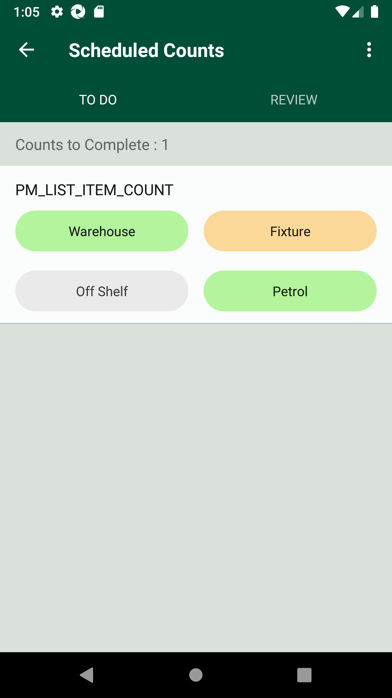
FailVerify PM Counts cannot be performed AFTER the specified time - WAREHOUSE SectionsFailVerify PM Counts cannot be performed AFTER the specified time - WAREHOUSE SectionsGiven The Post Storewalk body to create Count storewalk api for Store id "8",name "PM_SCAN_ITEM_COUNT_01" and mode "scan"Given Post count storewalk Item list data is "108837697"Given Post count storewalk Department list data is "344"When I enter Username and Password for SMA Manager userAnd I click on login button for SMAThen I click on 'stockMngmtText' on page 'HomePagePO_New'Then I click on 'ScheduledCounts' on page 'HomePagePO_New'Then I click on dynamic 'WarehouseParentLnk' for 'Warehouse' for product "PM_SCAN_ITEM_COUNT_01" on page 'CountsPO'Then I click on the product and I should get the End time messagecom.morrisons.common.action.Hook.afterScenario(io.cucumber.java.Scenario)FailVerify PM Counts cannot be performed AFTER the specified time - FIXTURES SectionsFailVerify PM Counts cannot be performed AFTER the specified time - FIXTURES SectionsGiven The Post Storewalk body to create Count storewalk api for Store id "8",name "PM_SCAN_ITEM_COUNT_01" and mode "scan"Given Post count storewalk Item list data is "108837697"Given Post count storewalk Department list data is "344"When I enter Username and Password for SMA Manager userAnd I click on login button for SMAThen I click on 'stockMngmtText' on page 'HomePagePO_New'Then I click on 'ScheduledCounts' on page 'HomePagePO_New'Then I click on dynamic 'WarehouseParentLnk' for 'Fixture' for product "PM_SCAN_ITEM_COUNT_01" on page 'CountsPO'Then I click on the product and I should get the End time messagecom.morrisons.common.action.Hook.afterScenario(io.cucumber.java.Scenario)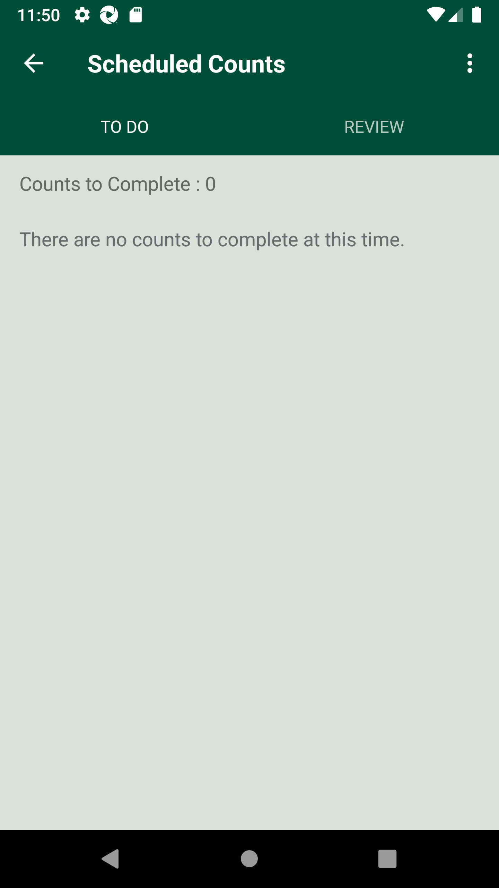
FailVerify PM Counts cannot be performed AFTER the specified time - PETROL SectionsFailVerify PM Counts cannot be performed AFTER the specified time - PETROL SectionsGiven The Post Storewalk body to create Count storewalk api for Store id "8",name "PM_SCAN_ITEM_COUNT_01" and mode "scan"Given Post count storewalk Item list data is "108837697"Given Post count storewalk Department list data is "344"When I enter Username and Password for SMA Manager userAnd I click on login button for SMAThen I click on 'stockMngmtText' on page 'HomePagePO_New'Then I click on 'ScheduledCounts' on page 'HomePagePO_New'Then I click on dynamic 'WarehouseParentLnk' for 'Petrol' for product "PM_SCAN_ITEM_COUNT_01" on page 'CountsPO'Then I click on the product and I should get the End time messagecom.morrisons.common.action.Hook.afterScenario(io.cucumber.java.Scenario)FailVerify PM Counts cannot be performed AFTER the specified time - OFFSHELF SectionsFailVerify PM Counts cannot be performed AFTER the specified time - OFFSHELF SectionsGiven The Post Storewalk body to create Count storewalk api for Store id "8",name "PM_SCAN_ITEM_COUNT_01" and mode "scan"Given Post count storewalk Item list data is "108837697"Given Post count storewalk Department list data is "344"When I enter Username and Password for SMA Manager userAnd I click on login button for SMAThen I click on 'stockMngmtText' on page 'HomePagePO_New'Then I click on 'ScheduledCounts' on page 'HomePagePO_New'Then I click on dynamic 'WarehouseParentLnk' for 'Off Shelf' for product "PM_SCAN_ITEM_COUNT_01" on page 'CountsPO'Then I click on the product and I should get the End time messagecom.morrisons.common.action.Hook.afterScenario(io.cucumber.java.Scenario)
-
org.openqa.selenium.WebDriverException
5 tests
org.openqa.selenium.WebDriverException
5 failedStatus Timestamp TestName Fail 15:03:26 PM When I enter Username and Password for SMA Manager user Verify Counts functionality for 'PM' window..Complete all the count locations on UI and Verify storewalk status as 'CountComplete' in Storewalk service..When I enter Username and Password for SMA Manager userFail 15:10:27 PM Then I Change date Verify Counts functionality for 'PM' window..TO CHANGE THE DEVICE TIMINGS AS REQUIRED.Then I Change dateFail 15:10:33 PM com.morrisons.common.action.Hook.afterScenario(io.cucumber.java.Scenario) Verify Counts functionality for 'PM' window..TO CHANGE THE DEVICE TIMINGS AS REQUIRED.com.morrisons.common.action.Hook.afterScenario(io.cucumber.java.Scenario)Fail 15:10:34 PM com.morrisons.common.action.Hook.smaBefore() Verify Counts functionality for 'PM' window..Verify Delete Count Storewalk service.com.morrisons.common.action.Hook.smaBefore()Fail 15:10:36 PM com.morrisons.common.action.Hook.smaBefore() Verify Counts functionality for 'PM' window..Create Count storewalk by making call with Post storewalk service for "PM" window and "scan" mode..com.morrisons.common.action.Hook.smaBefore() -
java.lang.ClassNotFoundException
1 tests
java.lang.ClassNotFoundException
1 failedStatus Timestamp TestName Fail 15:04:54 PM Then I click on 'Review' on page 'CountPO' Verify Counts functionality for 'PM' window..Verify Count is edited in Review section.Then I click on 'Review' on page 'CountPO' -
java.lang.NullPointerException
2 tests
java.lang.NullPointerException
2 failedStatus Timestamp TestName Fail 13:59:40 PM And I verify "Add" dynamic "2" quantity for item "102390337" is on page 'CountsPO' Verify Counts functionality for 'PM' window..WAREHOUSE Location - Verify 'EDIT COUNT' and 'Add to Count' functionality..And I verify "Add" dynamic "2" quantity for item "102390337" is on page 'CountsPO'Fail 14:04:11 PM And I verify "Add" dynamic "3" quantity for item "102390337" is on page 'CountsPO' Verify Counts functionality for 'PM' window..FIXTURE Location - Verify 'EDIT COUNT' and 'Add to Count' functionality..And I verify "Add" dynamic "3" quantity for item "102390337" is on page 'CountsPO' -
org.openqa.selenium.NoSuchElementException
72 tests
org.openqa.selenium.NoSuchElementException
72 failedStatus Timestamp TestName Fail 13:08:46 PM Then I Enter the quantity as "5", "quantity" and click on "Confirm" button on "CountsPO" page Verify Counts functionality for 'PM' window..Warehouse Location - Scan an Items in generated Count for "scan" mode, Enter quantity and confirm..Then I Enter the quantity as "5", "quantity" and click on "Confirm" button on "CountsPO" pageFail 13:11:51 PM Then I Enter the quantity as "5", "quantity" and click on "Confirm" button on "CountsPO" page Verify Counts functionality for 'PM' window..Warehouse Location - Scan an Items in generated Count for "scan" mode, Enter quantity and confirm..Then I Enter the quantity as "5", "quantity" and click on "Confirm" button on "CountsPO" pageFail 13:13:48 PM Then I Enter the quantity as "5", "quantity" and click on "Confirm" button on "CountsPO" page Verify Counts functionality for 'PM' window..Warehouse Location - Scan an Items in generated Count for "scan" mode, Enter quantity and confirm..Then I Enter the quantity as "5", "quantity" and click on "Confirm" button on "CountsPO" pageFail 13:15:37 PM Then I Enter the quantity as "5", "quantity" and click on "Confirm" button on "CountsPO" page Verify Counts functionality for 'PM' window..Warehouse Location - Scan an Items in generated Count for "scan" mode, Enter quantity and confirm..Then I Enter the quantity as "5", "quantity" and click on "Confirm" button on "CountsPO" pageFail 13:17:41 PM Then I Enter the quantity as "5", "quantity" and click on "Confirm" button on "CountsPO" page Verify Counts functionality for 'PM' window..Warehouse Location - Scan an Items in generated Count for "scan" mode, Enter quantity and confirm..Then I Enter the quantity as "5", "quantity" and click on "Confirm" button on "CountsPO" pageFail 13:20:34 PM Then I Enter the quantity as "5", "quantity" and click on "Confirm" button on "CountsPO" page Verify Counts functionality for 'PM' window..Warehouse Location - Scan an Items in generated Count for "scan" mode, Enter quantity and confirm..Then I Enter the quantity as "5", "quantity" and click on "Confirm" button on "CountsPO" pageFail 13:22:24 PM Then I Enter the quantity as "5", "quantity" and click on "Confirm" button on "CountsPO" page Verify Counts functionality for 'PM' window..Warehouse Location - Scan an Items in generated Count for "scan" mode, Enter quantity and confirm..Then I Enter the quantity as "5", "quantity" and click on "Confirm" button on "CountsPO" pageFail 13:26:29 PM Then I Enter the quantity as "5", "quantity" and click on "Confirm" button on "CountsPO" page Verify Counts functionality for 'PM' window..Warehouse Location - Scan an Items in generated Count for "scan" mode, Enter quantity and confirm..Then I Enter the quantity as "5", "quantity" and click on "Confirm" button on "CountsPO" pageFail 13:29:24 PM Then I Enter the quantity as "5", "quantity" and click on "Confirm" button on "CountsPO" page Verify Counts functionality for 'PM' window..Warehouse Location - Scan an Items in generated Count for "scan" mode, Enter quantity and confirm..Then I Enter the quantity as "5", "quantity" and click on "Confirm" button on "CountsPO" pageFail 13:33:25 PM Then I Enter the quantity as "5", "quantity" and click on "Confirm" button on "CountsPO" page Verify Counts functionality for 'PM' window..Fixture Location - Scan an Items in generated Count for "scan" mode, Enter quantity and confirm..Then I Enter the quantity as "5", "quantity" and click on "Confirm" button on "CountsPO" pageFail 13:36:19 PM Then I Enter the quantity as "5", "quantity" and click on "Confirm" button on "CountsPO" page Verify Counts functionality for 'PM' window..Fixture Location - Scan an Items in generated Count for "scan" mode, Enter quantity and confirm..Then I Enter the quantity as "5", "quantity" and click on "Confirm" button on "CountsPO" pageFail 13:38:14 PM Then I Enter the quantity as "5", "quantity" and click on "Confirm" button on "CountsPO" page Verify Counts functionality for 'PM' window..Fixture Location - Scan an Items in generated Count for "scan" mode, Enter quantity and confirm..Then I Enter the quantity as "5", "quantity" and click on "Confirm" button on "CountsPO" pageFail 13:40:05 PM Then I Enter the quantity as "5", "quantity" and click on "Confirm" button on "CountsPO" page Verify Counts functionality for 'PM' window..Fixture Location - Scan an Items in generated Count for "scan" mode, Enter quantity and confirm..Then I Enter the quantity as "5", "quantity" and click on "Confirm" button on "CountsPO" pageFail 13:42:14 PM Then I Enter the quantity as "5", "quantity" and click on "Confirm" button on "CountsPO" page Verify Counts functionality for 'PM' window..Fixture Location - Scan an Items in generated Count for "scan" mode, Enter quantity and confirm..Then I Enter the quantity as "5", "quantity" and click on "Confirm" button on "CountsPO" pageFail 13:44:01 PM Then I verify "PM_SCAN_ITEM_COUNT" counts are displayed in 'WarehouseLocation' on 'CountsPO' page Verify Counts functionality for 'PM' window..Fixture Location - Scan an Items in generated Count for "scan" mode, Enter quantity and confirm..Then I verify "PM_SCAN_ITEM_COUNT" counts are displayed in 'WarehouseLocation' on 'CountsPO' pageFail 13:45:17 PM Then I Enter the quantity as "5", "quantity" and click on "Confirm" button on "CountsPO" page Verify Counts functionality for 'PM' window..Fixture Location - Scan an Items in generated Count for "scan" mode, Enter quantity and confirm..Then I Enter the quantity as "5", "quantity" and click on "Confirm" button on "CountsPO" pageFail 13:47:20 PM Then I Enter the quantity as "5", "quantity" and click on "Confirm" button on "CountsPO" page Verify Counts functionality for 'PM' window..Fixture Location - Scan an Items in generated Count for "scan" mode, Enter quantity and confirm..Then I Enter the quantity as "5", "quantity" and click on "Confirm" button on "CountsPO" pageFail 13:50:58 PM Then I Enter the quantity as "5", "quantity" and click on "Confirm" button on "CountsPO" page Verify Counts functionality for 'PM' window..Fixture Location - Scan an Items in generated Count for "scan" mode, Enter quantity and confirm..Then I Enter the quantity as "5", "quantity" and click on "Confirm" button on "CountsPO" pageFail 13:53:38 PM Then I Enter the quantity as "5", "quantity" and click on "Confirm" button on "CountsPO" page Verify Counts functionality for 'PM' window..Fixture Location - Scan an Items in generated Count for "scan" mode, Enter quantity and confirm..Then I Enter the quantity as "5", "quantity" and click on "Confirm" button on "CountsPO" pageFail 13:56:43 PM Then I verify "PM_SCAN_ITEM_COUNT" counts are displayed in 'WarehouseLocation' on 'CountsPO' page Verify Counts functionality for 'PM' window..WAREHOUSE Location - Confirm counts and Verify COMPLETE status for WAREHOUSE Location..Then I verify "PM_SCAN_ITEM_COUNT" counts are displayed in 'WarehouseLocation' on 'CountsPO' pageFail 13:58:05 PM Then I will confirm Counts Verify Counts functionality for 'PM' window..WAREHOUSE Location - Reopen the completed Count, select the product and verify 'ADD TO COUNT' and 'EDIT COUNT' buttons are displayed..Then I will confirm CountsFail 14:01:20 PM Then I click on 'CompleteBtn' on page 'CountsPO' Verify Counts functionality for 'PM' window..FIXTURE Location - Confirm counts and Verify COMPLETE status for FIXTURE Location..Then I click on 'CompleteBtn' on page 'CountsPO'Fail 14:03:05 PM Then I click on 'CountedProductsView' on page 'CountsPO' Verify Counts functionality for 'PM' window..FIXTURE Location - Reopen the completed Count, select the product and verify 'ADD TO COUNT' and 'EDIT COUNT' buttons are displayed..Then I click on 'CountedProductsView' on page 'CountsPO'Fail 14:05:01 PM Then I click on 'Enter_barcode' on page 'CountsPO' Verify Counts functionality for 'PM' window..OFFSHELF Location - Select Items in generated Count for "scan" mode, Enter quantity and confirm..Then I click on 'Enter_barcode' on page 'CountsPO'Fail 14:06:40 PM Then I click on 'CompleteOffShelfBtn' on page 'CountsPO' Verify Counts functionality for 'PM' window..OFFSHELF Location - Confirm counts and Verify COMPLETE status for OFFSHELF Location..Then I click on 'CompleteOffShelfBtn' on page 'CountsPO'Fail 14:08:33 PM Then I click on 'EditCount' on page 'CountsPO' Verify Counts functionality for 'PM' window..PETROL Location - Select Items in generated Count for "scan" mode, Enter quantity and confirm..Then I click on 'EditCount' on page 'CountsPO'Fail 14:10:17 PM Then I click on 'CompleteConfirmBtn' on page 'CountsPO' Verify Counts functionality for 'PM' window..PETROL Location - Confirm counts and Verify COMPLETE status for PETROL Location..Then I click on 'CompleteConfirmBtn' on page 'CountsPO'Fail 14:11:58 PM Then I click on 'CountedProductsView' on page 'CountsPO' Verify Counts functionality for 'PM' window..PETROL Location - Reopen the completed Count, select the product and verify 'ADD TO COUNT' and 'EDIT COUNT' buttons are displayed..Then I click on 'CountedProductsView' on page 'CountsPO'Fail 14:12:59 PM Then I click on 'CountedProductsView' on page 'CountsPO' Verify Counts functionality for 'PM' window..PETROL Location - Verify 'EDIT COUNT' and 'Add to Count' functionality..Then I click on 'CountedProductsView' on page 'CountsPO'Fail 14:14:00 PM Then I verify "PM_SCAN_ITEM_COUNT" counts are displayed in 'Reviewlocation' on 'CountsPO' page Verify Counts functionality for 'PM' window..Complete all the count locations on UI and Verify storewalk status as 'CountComplete' in Storewalk service..Then I verify "PM_SCAN_ITEM_COUNT" counts are displayed in 'Reviewlocation' on 'CountsPO' pageFail 14:14:55 PM Then I verify "PM_SCAN_ITEM_COUNT" counts are displayed in 'Reviewlocation' on 'CountsPO' page Verify Counts functionality for 'PM' window..Verify Count is edited in Review section.Then I verify "PM_SCAN_ITEM_COUNT" counts are displayed in 'Reviewlocation' on 'CountsPO' pageFail 14:15:51 PM Then I verify "PM_SCAN_ITEM_COUNT" counts are displayed in 'Reviewlocation' on 'CountsPO' page Verify Counts functionality for 'PM' window..Confirm the capture count in Review section. Then, verify Review section status on UI as 'Completed' and Storewalk status as 'ReviewComplete' in the Storewalk service..Then I verify "PM_SCAN_ITEM_COUNT" counts are displayed in 'Reviewlocation' on 'CountsPO' pageFail 14:16:48 PM Then I verify "PM_SCAN_ITEM_COUNT" counts are displayed in 'WarehouseLocation' on 'CountsPO' page Verify Counts functionality for 'PM' window..Verify that After REVIEW we cannot select the review completed product from WAREHOUSE location..Then I verify "PM_SCAN_ITEM_COUNT" counts are displayed in 'WarehouseLocation' on 'CountsPO' pageFail 14:18:43 PM Then I verify the fields in Counts Summary Verify Counts functionality for 'PM' window..Verify Counts SUMMARY after completing all the locations on UI.Then I verify the fields in Counts SummaryFail 14:19:49 PM Then I verify the fields in Counts Summary Verify Counts functionality for 'PM' window..SUMMARY - Verify in Summary section DAY spinner dropdown is displayed..Then I verify the fields in Counts SummaryFail 14:24:41 PM Then I click on 'stockMngmtText' on page 'HomePagePO_New' Verify Counts functionality for 'PM' window..Warehouse Location - Select an Items in generated Count for "list" mode, Enter quantity and confirm..Then I click on 'stockMngmtText' on page 'HomePagePO_New'Fail 14:26:05 PM Then I click on 'stockMngmtText' on page 'HomePagePO_New' Verify Counts functionality for 'PM' window..Warehouse Location - Select an Items in generated Count for "list" mode, Enter quantity and confirm..Then I click on 'stockMngmtText' on page 'HomePagePO_New'Fail 14:27:29 PM Then I click on 'stockMngmtText' on page 'HomePagePO_New' Verify Counts functionality for 'PM' window..Warehouse Location - Select an Items in generated Count for "list" mode, Enter quantity and confirm..Then I click on 'stockMngmtText' on page 'HomePagePO_New'Fail 14:28:59 PM Then I click on 'stockMngmtText' on page 'HomePagePO_New' Verify Counts functionality for 'PM' window..Warehouse Location - Select an Items in generated Count for "list" mode, Enter quantity and confirm..Then I click on 'stockMngmtText' on page 'HomePagePO_New'Fail 14:31:25 PM Then I click on 'CountedProductsView' on page 'CountsPO' Verify Counts functionality for 'PM' window..Warehouse Location - Select an Items in generated Count for "list" mode, Enter quantity and confirm..Then I click on 'CountedProductsView' on page 'CountsPO'Fail 14:32:53 PM Then I click on 'CountedProductsView' on page 'CountsPO' Verify Counts functionality for 'PM' window..Warehouse Location - Select an Items in generated Count for "list" mode, Enter quantity and confirm..Then I click on 'CountedProductsView' on page 'CountsPO'Fail 14:35:03 PM Then I click on 'stockMngmtText' on page 'HomePagePO_New' Verify Counts functionality for 'PM' window..Warehouse Location - Select an Items in generated Count for "list" mode, Enter quantity and confirm..Then I click on 'stockMngmtText' on page 'HomePagePO_New'Fail 14:37:05 PM Then I click on 'CountedProductsView' on page 'CountsPO' Verify Counts functionality for 'PM' window..Warehouse Location - Select an Items in generated Count for "list" mode, Enter quantity and confirm..Then I click on 'CountedProductsView' on page 'CountsPO'Fail 14:37:54 PM Then I click on 'stockMngmtText' on page 'HomePagePO_New' Verify Counts functionality for 'PM' window..Warehouse Location - Select an Items in generated Count for "list" mode, Enter quantity and confirm..Then I click on 'stockMngmtText' on page 'HomePagePO_New'Fail 14:41:46 PM Then I click on 'CountedProductsView' on page 'CountsPO' Verify Counts functionality for 'PM' window..Fixture Location - Select an Items in generated Count for "list" mode, Enter quantity and confirm..Then I click on 'CountedProductsView' on page 'CountsPO'Fail 14:42:53 PM Then I click on 'CountedProductsView' on page 'CountsPO' Verify Counts functionality for 'PM' window..Fixture Location - Select an Items in generated Count for "list" mode, Enter quantity and confirm..Then I click on 'CountedProductsView' on page 'CountsPO'Fail 14:43:58 PM Then I click on 'CountedProductsView' on page 'CountsPO' Verify Counts functionality for 'PM' window..Fixture Location - Select an Items in generated Count for "list" mode, Enter quantity and confirm..Then I click on 'CountedProductsView' on page 'CountsPO'Fail 14:45:00 PM Then I click on 'CountedProductsView' on page 'CountsPO' Verify Counts functionality for 'PM' window..Fixture Location - Select an Items in generated Count for "list" mode, Enter quantity and confirm..Then I click on 'CountedProductsView' on page 'CountsPO'Fail 14:46:03 PM Then I click on 'CountedProductsView' on page 'CountsPO' Verify Counts functionality for 'PM' window..Fixture Location - Select an Items in generated Count for "list" mode, Enter quantity and confirm..Then I click on 'CountedProductsView' on page 'CountsPO'Fail 14:47:05 PM Then I click on 'CountedProductsView' on page 'CountsPO' Verify Counts functionality for 'PM' window..Fixture Location - Select an Items in generated Count for "list" mode, Enter quantity and confirm..Then I click on 'CountedProductsView' on page 'CountsPO'Fail 14:48:08 PM Then I click on 'CountedProductsView' on page 'CountsPO' Verify Counts functionality for 'PM' window..Fixture Location - Select an Items in generated Count for "list" mode, Enter quantity and confirm..Then I click on 'CountedProductsView' on page 'CountsPO'Fail 14:49:11 PM Then I click on 'CountedProductsView' on page 'CountsPO' Verify Counts functionality for 'PM' window..Fixture Location - Select an Items in generated Count for "list" mode, Enter quantity and confirm..Then I click on 'CountedProductsView' on page 'CountsPO'Fail 14:50:17 PM Then I click on 'CountedProductsView' on page 'CountsPO' Verify Counts functionality for 'PM' window..Fixture Location - Select an Items in generated Count for "list" mode, Enter quantity and confirm..Then I click on 'CountedProductsView' on page 'CountsPO'Fail 14:52:10 PM Then I click on 'CountedProductsView' on page 'CountsPO' Verify Counts functionality for 'PM' window..WAREHOUSE Location - Reopen the completed Count, select the product and verify 'ADD TO COUNT' and 'EDIT COUNT' buttons are displayed..Then I click on 'CountedProductsView' on page 'CountsPO'Fail 14:53:11 PM Then I click on 'CountedProductsView' on page 'CountsPO' Verify Counts functionality for 'PM' window..WAREHOUSE Location - Verify 'EDIT COUNT' and 'Add to Count' functionality..Then I click on 'CountedProductsView' on page 'CountsPO'Fail 14:54:12 PM Then I click on 'CompleteBtn' on page 'CountsPO' Verify Counts functionality for 'PM' window..FIXTURE Location - Confirm counts and Verify COMPLETE status for FIXTURE Location..Then I click on 'CompleteBtn' on page 'CountsPO'Fail 14:55:56 PM Then I click on 'CountedProductsView' on page 'CountsPO' Verify Counts functionality for 'PM' window..FIXTURE Location - Reopen the completed Count, select the product and verify 'ADD TO COUNT' and 'EDIT COUNT' buttons are displayed..Then I click on 'CountedProductsView' on page 'CountsPO'Fail 14:56:58 PM Then I click on 'CountedProductsView' on page 'CountsPO' Verify Counts functionality for 'PM' window..FIXTURE Location - Verify 'EDIT COUNT' and 'Add to Count' functionality..Then I click on 'CountedProductsView' on page 'CountsPO'Fail 14:57:59 PM Then I verify "PM_LIST_ITEM_COUNT" counts are displayed in 'WarehouseLocation' on 'CountsPO' page Verify Counts functionality for 'PM' window..OFFSHELF Location - Select Items in generated Count for "list" mode, Enter quantity and confirm..Then I verify "PM_LIST_ITEM_COUNT" counts are displayed in 'WarehouseLocation' on 'CountsPO' pageFail 14:58:59 PM Then I click on 'CompleteOffShelfBtn' on page 'CountsPO' Verify Counts functionality for 'PM' window..OFFSHELF Location - Confirm counts and Verify COMPLETE status for OFFSHELF Location..Then I click on 'CompleteOffShelfBtn' on page 'CountsPO'Fail 15:00:41 PM Then I click on 'CountedProductsView' on page 'CountsPO' Verify Counts functionality for 'PM' window..OFFSHELF Location - Reopen the completed Count, select the product and verify 'ADD TO COUNT' and 'EDIT COUNT' buttons are displayed..Then I click on 'CountedProductsView' on page 'CountsPO'Fail 15:01:41 PM Then I click on 'CountedProductsView' on page 'CountsPO' Verify Counts functionality for 'PM' window..OFFSHELF Location - Verify 'EDIT COUNT' and 'Add to Count' functionality..Then I click on 'CountedProductsView' on page 'CountsPO'Fail 15:05:34 PM Then I verify "PM_LIST_ITEM_COUNT" counts are displayed in 'Reviewlocation' on 'CountsPO' page Verify Counts functionality for 'PM' window..Confirm the capture count in Review section. Then, verify Review section status on UI as 'Completed' and Storewalk status as 'ReviewComplete' in the Storewalk service..Then I verify "PM_LIST_ITEM_COUNT" counts are displayed in 'Reviewlocation' on 'CountsPO' pageFail 15:08:22 PM Then I click on Counts Verify Counts functionality for 'PM' window..Verify Counts SUMMARY after completing all the locations on UI.Then I click on CountsFail 15:12:00 PM Then I click on the product and I should get the End time message Verify Counts functionality for 'PM' window..Verify PM Counts cannot be performed BEFORE the specified time - WAREHOUSE Sections.Then I click on the product and I should get the End time messageFail 15:13:14 PM Then I click on the product and I should get the Start time message Verify Counts functionality for 'PM' window..Verify PM Counts cannot be performed BEFORE the specified time - FIXTURE Sections.Then I click on the product and I should get the Start time messageFail 15:14:19 PM Then I click on the product and I should get the Start time message Verify Counts functionality for 'PM' window..Verify PM Counts cannot be performed BEFORE the specified time - PETROL Sections.Then I click on the product and I should get the Start time messageFail 15:15:23 PM Then I click on the product and I should get the Start time message Verify Counts functionality for 'PM' window..Verify PM Counts cannot be performed BEFORE the specified time - OFFSHELF Sections.Then I click on the product and I should get the Start time messageFail 15:18:45 PM Then I click on the product and I should get the End time message Verify Counts functionality for 'PM' window..Verify PM Counts cannot be performed AFTER the specified time - WAREHOUSE Sections.Then I click on the product and I should get the End time messageFail 15:19:49 PM Then I click on the product and I should get the End time message Verify Counts functionality for 'PM' window..Verify PM Counts cannot be performed AFTER the specified time - FIXTURES Sections.Then I click on the product and I should get the End time messageFail 15:20:52 PM Then I click on the product and I should get the End time message Verify Counts functionality for 'PM' window..Verify PM Counts cannot be performed AFTER the specified time - PETROL Sections.Then I click on the product and I should get the End time messageFail 15:21:55 PM Then I click on the product and I should get the End time message Verify Counts functionality for 'PM' window..Verify PM Counts cannot be performed AFTER the specified time - OFFSHELF Sections.Then I click on the product and I should get the End time message -
java.lang.IndexOutOfBoundsException
1 tests
java.lang.IndexOutOfBoundsException
1 failedStatus Timestamp TestName Fail 14:00:34 PM Then I click on dynamic 'WarehouseParentLnk' for 'Warehouse' for product "" on page 'CountsPO' Verify Counts functionality for 'PM' window..WAREHOUSE Location - Verify 'EDIT COUNT' and 'Add to Count' functionality..Then I click on dynamic 'WarehouseParentLnk' for 'Warehouse' for product "" on page 'CountsPO' -
java.lang.AssertionError
2 tests
java.lang.AssertionError
2 failedStatus Timestamp TestName Fail 14:51:30 PM And Verify for Product id "102390337" Count type "singles" is present in Get storewalk service response Verify Counts functionality for 'PM' window..WAREHOUSE Location - Confirm counts and Verify COMPLETE status for WAREHOUSE Location..And Verify for Product id "102390337" Count type "singles" is present in Get storewalk service responseFail 15:03:09 PM And Verify for Product id "102390337" Count type "singles" is present in Get storewalk service response Verify Counts functionality for 'PM' window..PETROL Location - Confirm counts and Verify COMPLETE status for PETROL Location..And Verify for Product id "102390337" Count type "singles" is present in Get storewalk service response
-
@editReview_PM
2 tests
@editReview_PM
2 failedStatus Timestamp TestName Fail 14:14:21 PM Verify Count is edited in Review section Verify Counts functionality for 'PM' window..Verify Count is edited in Review sectionFail 14:14:21 PM Verify Count is edited in Review section Verify Counts functionality for 'PM' window..Verify Count is edited in Review section -
@FixtAddEditCnt_PM
1 tests
@FixtAddEditCnt_PM
1 failedStatus Timestamp TestName Fail 14:55:16 PM FIXTURE Location - Reopen the completed Count, select the product and verify 'ADD TO COUNT' and 'EDIT COUNT' buttons are displayed. Verify Counts functionality for 'PM' window..FIXTURE Location - Reopen the completed Count, select the product and verify 'ADD TO COUNT' and 'EDIT COUNT' buttons are displayed. -
@Add-EditFunc
3 tests
@Add-EditFunc
3 failedStatus Timestamp TestName Fail 13:58:52 PM WAREHOUSE Location - Verify 'EDIT COUNT' and 'Add to Count' functionality. Verify Counts functionality for 'PM' window..WAREHOUSE Location - Verify 'EDIT COUNT' and 'Add to Count' functionality.Fail 13:58:52 PM WAREHOUSE Location - Verify 'EDIT COUNT' and 'Add to Count' functionality. Verify Counts functionality for 'PM' window..WAREHOUSE Location - Verify 'EDIT COUNT' and 'Add to Count' functionality.Fail 13:59:46 PM WAREHOUSE Location - Verify 'EDIT COUNT' and 'Add to Count' functionality. Verify Counts functionality for 'PM' window..WAREHOUSE Location - Verify 'EDIT COUNT' and 'Add to Count' functionality. -
@sma
141 tests
@sma
26 passed 115 failedStatus Timestamp TestName Pass 13:05:31 PM Verify Delete Count Storewalk service - Delete existing Counts. Verify Counts functionality for 'PM' window..Verify Delete Count Storewalk service - Delete existing Counts.Pass 13:05:31 PM Verify Delete Count Storewalk service - Delete existing Counts. Verify Counts functionality for 'PM' window..Verify Delete Count Storewalk service - Delete existing Counts.Fail 13:06:28 PM Create Count storewalk by making call with Post storewalk service for " " window and " " mode. Verify Counts functionality for 'PM' window..Create Count storewalk by making call with Post storewalk service for "" window and " " mode. Pass 13:06:28 PM Create Count storewalk by making call with Post storewalk service for "PM" window and "scan" mode. Verify Counts functionality for 'PM' window..Create Count storewalk by making call with Post storewalk service for "PM" window and "scan" mode.Pass 13:06:50 PM Navigate to Warehouse location and Verify count data is getting generated and displayed on UI. Verify Counts functionality for 'PM' window..Navigate to Warehouse location and Verify count data is getting generated and displayed on UI.Pass 13:06:50 PM Navigate to Warehouse location and Verify count data is getting generated and displayed on UI. Verify Counts functionality for 'PM' window..Navigate to Warehouse location and Verify count data is getting generated and displayed on UI.Fail 13:07:56 PM Warehouse Location - Scan an Items in generated Count for " " mode, Enter quantity and confirm. Verify Counts functionality for 'PM' window..Warehouse Location - Scan an Items in generated Count for "" mode, Enter quantity and confirm. Fail 13:07:56 PM Warehouse Location - Scan an Items in generated Count for "scan" mode, Enter quantity and confirm. Verify Counts functionality for 'PM' window..Warehouse Location - Scan an Items in generated Count for "scan" mode, Enter quantity and confirm.Pass 13:09:50 PM Warehouse Location - Scan an Items in generated Count for "scan" mode, Enter quantity and confirm. Verify Counts functionality for 'PM' window..Warehouse Location - Scan an Items in generated Count for "scan" mode, Enter quantity and confirm.Fail 13:10:50 PM Warehouse Location - Scan an Items in generated Count for "scan" mode, Enter quantity and confirm. Verify Counts functionality for 'PM' window..Warehouse Location - Scan an Items in generated Count for "scan" mode, Enter quantity and confirm.Fail 13:12:55 PM Warehouse Location - Scan an Items in generated Count for "scan" mode, Enter quantity and confirm. Verify Counts functionality for 'PM' window..Warehouse Location - Scan an Items in generated Count for "scan" mode, Enter quantity and confirm.Fail 13:14:51 PM Warehouse Location - Scan an Items in generated Count for "scan" mode, Enter quantity and confirm. Verify Counts functionality for 'PM' window..Warehouse Location - Scan an Items in generated Count for "scan" mode, Enter quantity and confirm.Fail 13:16:40 PM Warehouse Location - Scan an Items in generated Count for "scan" mode, Enter quantity and confirm. Verify Counts functionality for 'PM' window..Warehouse Location - Scan an Items in generated Count for "scan" mode, Enter quantity and confirm.Pass 13:18:44 PM Warehouse Location - Scan an Items in generated Count for "scan" mode, Enter quantity and confirm. Verify Counts functionality for 'PM' window..Warehouse Location - Scan an Items in generated Count for "scan" mode, Enter quantity and confirm.Fail 13:19:45 PM Warehouse Location - Scan an Items in generated Count for "scan" mode, Enter quantity and confirm. Verify Counts functionality for 'PM' window..Warehouse Location - Scan an Items in generated Count for "scan" mode, Enter quantity and confirm.Fail 13:21:37 PM Warehouse Location - Scan an Items in generated Count for "scan" mode, Enter quantity and confirm. Verify Counts functionality for 'PM' window..Warehouse Location - Scan an Items in generated Count for "scan" mode, Enter quantity and confirm.Pass 13:23:28 PM Warehouse Location - Scan an Items in generated Count for "scan" mode, Enter quantity and confirm. Verify Counts functionality for 'PM' window..Warehouse Location - Scan an Items in generated Count for "scan" mode, Enter quantity and confirm.Pass 13:24:37 PM Warehouse Location - Scan an Items in generated Count for "scan" mode, Enter quantity and confirm. Verify Counts functionality for 'PM' window..Warehouse Location - Scan an Items in generated Count for "scan" mode, Enter quantity and confirm.Fail 13:25:38 PM Warehouse Location - Scan an Items in generated Count for "scan" mode, Enter quantity and confirm. Verify Counts functionality for 'PM' window..Warehouse Location - Scan an Items in generated Count for "scan" mode, Enter quantity and confirm.Pass 13:27:33 PM Warehouse Location - Scan an Items in generated Count for "scan" mode, Enter quantity and confirm. Verify Counts functionality for 'PM' window..Warehouse Location - Scan an Items in generated Count for "scan" mode, Enter quantity and confirm.Fail 13:28:33 PM Warehouse Location - Scan an Items in generated Count for "scan" mode, Enter quantity and confirm. Verify Counts functionality for 'PM' window..Warehouse Location - Scan an Items in generated Count for "scan" mode, Enter quantity and confirm.Pass 13:30:28 PM Warehouse Location - Scan an Items in generated Count for "scan" mode, Enter quantity and confirm. Verify Counts functionality for 'PM' window..Warehouse Location - Scan an Items in generated Count for "scan" mode, Enter quantity and confirm.Pass 13:31:24 PM Navigate to Fixture location and Verify count data is getting generated and displayed on UI. Verify Counts functionality for 'PM' window..Navigate to Fixture location and Verify count data is getting generated and displayed on UI.Pass 13:31:24 PM Navigate to Fixture location and Verify count data is getting generated and displayed on UI. Verify Counts functionality for 'PM' window..Navigate to Fixture location and Verify count data is getting generated and displayed on UI.Fail 13:32:34 PM Fixture Location - Scan an Items in generated Count for " " mode, Enter quantity and confirm. Verify Counts functionality for 'PM' window..Fixture Location - Scan an Items in generated Count for "" mode, Enter quantity and confirm. Fail 13:32:34 PM Fixture Location - Scan an Items in generated Count for "scan" mode, Enter quantity and confirm. Verify Counts functionality for 'PM' window..Fixture Location - Scan an Items in generated Count for "scan" mode, Enter quantity and confirm.Pass 13:34:29 PM Fixture Location - Scan an Items in generated Count for "scan" mode, Enter quantity and confirm. Verify Counts functionality for 'PM' window..Fixture Location - Scan an Items in generated Count for "scan" mode, Enter quantity and confirm.Fail 13:35:25 PM Fixture Location - Scan an Items in generated Count for "scan" mode, Enter quantity and confirm. Verify Counts functionality for 'PM' window..Fixture Location - Scan an Items in generated Count for "scan" mode, Enter quantity and confirm.Fail 13:37:23 PM Fixture Location - Scan an Items in generated Count for "scan" mode, Enter quantity and confirm. Verify Counts functionality for 'PM' window..Fixture Location - Scan an Items in generated Count for "scan" mode, Enter quantity and confirm.Fail 13:39:18 PM Fixture Location - Scan an Items in generated Count for "scan" mode, Enter quantity and confirm. Verify Counts functionality for 'PM' window..Fixture Location - Scan an Items in generated Count for "scan" mode, Enter quantity and confirm.Fail 13:41:08 PM Fixture Location - Scan an Items in generated Count for "scan" mode, Enter quantity and confirm. Verify Counts functionality for 'PM' window..Fixture Location - Scan an Items in generated Count for "scan" mode, Enter quantity and confirm.Fail 13:43:17 PM Fixture Location - Scan an Items in generated Count for "scan" mode, Enter quantity and confirm. Verify Counts functionality for 'PM' window..Fixture Location - Scan an Items in generated Count for "scan" mode, Enter quantity and confirm.Fail 13:44:23 PM Fixture Location - Scan an Items in generated Count for "scan" mode, Enter quantity and confirm. Verify Counts functionality for 'PM' window..Fixture Location - Scan an Items in generated Count for "scan" mode, Enter quantity and confirm.Fail 13:46:21 PM Fixture Location - Scan an Items in generated Count for "scan" mode, Enter quantity and confirm. Verify Counts functionality for 'PM' window..Fixture Location - Scan an Items in generated Count for "scan" mode, Enter quantity and confirm.Pass 13:48:23 PM Fixture Location - Scan an Items in generated Count for "scan" mode, Enter quantity and confirm. Verify Counts functionality for 'PM' window..Fixture Location - Scan an Items in generated Count for "scan" mode, Enter quantity and confirm.Pass 13:49:18 PM Fixture Location - Scan an Items in generated Count for "scan" mode, Enter quantity and confirm. Verify Counts functionality for 'PM' window..Fixture Location - Scan an Items in generated Count for "scan" mode, Enter quantity and confirm.Fail 13:50:07 PM Fixture Location - Scan an Items in generated Count for "scan" mode, Enter quantity and confirm. Verify Counts functionality for 'PM' window..Fixture Location - Scan an Items in generated Count for "scan" mode, Enter quantity and confirm.Pass 13:52:01 PM Fixture Location - Scan an Items in generated Count for "scan" mode, Enter quantity and confirm. Verify Counts functionality for 'PM' window..Fixture Location - Scan an Items in generated Count for "scan" mode, Enter quantity and confirm.Fail 13:52:53 PM Fixture Location - Scan an Items in generated Count for "scan" mode, Enter quantity and confirm. Verify Counts functionality for 'PM' window..Fixture Location - Scan an Items in generated Count for "scan" mode, Enter quantity and confirm.Pass 13:54:41 PM Fixture Location - Scan an Items in generated Count for "scan" mode, Enter quantity and confirm. Verify Counts functionality for 'PM' window..Fixture Location - Scan an Items in generated Count for "scan" mode, Enter quantity and confirm.Fail 13:55:53 PM WAREHOUSE Location - Confirm counts and Verify COMPLETE status for WAREHOUSE Location. Verify Counts functionality for 'PM' window..WAREHOUSE Location - Confirm counts and Verify COMPLETE status for WAREHOUSE Location.Fail 13:55:53 PM WAREHOUSE Location - Confirm counts and Verify COMPLETE status for WAREHOUSE Location. Verify Counts functionality for 'PM' window..WAREHOUSE Location - Confirm counts and Verify COMPLETE status for WAREHOUSE Location.Fail 13:57:04 PM WAREHOUSE Location - Reopen the completed Count, select the product and verify 'ADD TO COUNT' and 'EDIT COUNT' buttons are displayed. Verify Counts functionality for 'PM' window..WAREHOUSE Location - Reopen the completed Count, select the product and verify 'ADD TO COUNT' and 'EDIT COUNT' buttons are displayed.Fail 13:57:04 PM WAREHOUSE Location - Reopen the completed Count, select the product and verify 'ADD TO COUNT' and 'EDIT COUNT' buttons are displayed. Verify Counts functionality for 'PM' window..WAREHOUSE Location - Reopen the completed Count, select the product and verify 'ADD TO COUNT' and 'EDIT COUNT' buttons are displayed.Fail 13:58:52 PM WAREHOUSE Location - Verify 'EDIT COUNT' and 'Add to Count' functionality. Verify Counts functionality for 'PM' window..WAREHOUSE Location - Verify 'EDIT COUNT' and 'Add to Count' functionality.Fail 13:58:52 PM WAREHOUSE Location - Verify 'EDIT COUNT' and 'Add to Count' functionality. Verify Counts functionality for 'PM' window..WAREHOUSE Location - Verify 'EDIT COUNT' and 'Add to Count' functionality.Fail 13:59:46 PM WAREHOUSE Location - Verify 'EDIT COUNT' and 'Add to Count' functionality. Verify Counts functionality for 'PM' window..WAREHOUSE Location - Verify 'EDIT COUNT' and 'Add to Count' functionality.Fail 14:00:38 PM FIXTURE Location - Confirm counts and Verify COMPLETE status for FIXTURE Location. Verify Counts functionality for 'PM' window..FIXTURE Location - Confirm counts and Verify COMPLETE status for FIXTURE Location.Fail 14:00:38 PM FIXTURE Location - Confirm counts and Verify COMPLETE status for FIXTURE Location. Verify Counts functionality for 'PM' window..FIXTURE Location - Confirm counts and Verify COMPLETE status for FIXTURE Location.Fail 14:02:22 PM FIXTURE Location - Reopen the completed Count, select the product and verify 'ADD TO COUNT' and 'EDIT COUNT' buttons are displayed. Verify Counts functionality for 'PM' window..FIXTURE Location - Reopen the completed Count, select the product and verify 'ADD TO COUNT' and 'EDIT COUNT' buttons are displayed.Fail 14:02:22 PM FIXTURE Location - Reopen the completed Count, select the product and verify 'ADD TO COUNT' and 'EDIT COUNT' buttons are displayed. Verify Counts functionality for 'PM' window..FIXTURE Location - Reopen the completed Count, select the product and verify 'ADD TO COUNT' and 'EDIT COUNT' buttons are displayed.Fail 14:03:27 PM FIXTURE Location - Verify 'EDIT COUNT' and 'Add to Count' functionality. Verify Counts functionality for 'PM' window..FIXTURE Location - Verify 'EDIT COUNT' and 'Add to Count' functionality.Fail 14:03:27 PM FIXTURE Location - Verify 'EDIT COUNT' and 'Add to Count' functionality. Verify Counts functionality for 'PM' window..FIXTURE Location - Verify 'EDIT COUNT' and 'Add to Count' functionality.Fail 14:04:19 PM OFFSHELF Location - Select Items in generated Count for " " mode, Enter quantity and confirm. Verify Counts functionality for 'PM' window..OFFSHELF Location - Select Items in generated Count for "" mode, Enter quantity and confirm. Fail 14:04:19 PM OFFSHELF Location - Select Items in generated Count for "scan" mode, Enter quantity and confirm. Verify Counts functionality for 'PM' window..OFFSHELF Location - Select Items in generated Count for "scan" mode, Enter quantity and confirm.Fail 14:06:03 PM OFFSHELF Location - Confirm counts and Verify COMPLETE status for OFFSHELF Location. Verify Counts functionality for 'PM' window..OFFSHELF Location - Confirm counts and Verify COMPLETE status for OFFSHELF Location.Fail 14:06:03 PM OFFSHELF Location - Confirm counts and Verify COMPLETE status for OFFSHELF Location. Verify Counts functionality for 'PM' window..OFFSHELF Location - Confirm counts and Verify COMPLETE status for OFFSHELF Location.Fail 14:07:42 PM PETROL Location - Select Items in generated Count for " " mode, Enter quantity and confirm. Verify Counts functionality for 'PM' window..PETROL Location - Select Items in generated Count for "" mode, Enter quantity and confirm. Fail 14:07:42 PM PETROL Location - Select Items in generated Count for "scan" mode, Enter quantity and confirm. Verify Counts functionality for 'PM' window..PETROL Location - Select Items in generated Count for "scan" mode, Enter quantity and confirm.Fail 14:09:36 PM PETROL Location - Confirm counts and Verify COMPLETE status for PETROL Location. Verify Counts functionality for 'PM' window..PETROL Location - Confirm counts and Verify COMPLETE status for PETROL Location.Fail 14:09:36 PM PETROL Location - Confirm counts and Verify COMPLETE status for PETROL Location. Verify Counts functionality for 'PM' window..PETROL Location - Confirm counts and Verify COMPLETE status for PETROL Location.Fail 14:11:19 PM PETROL Location - Reopen the completed Count, select the product and verify 'ADD TO COUNT' and 'EDIT COUNT' buttons are displayed. Verify Counts functionality for 'PM' window..PETROL Location - Reopen the completed Count, select the product and verify 'ADD TO COUNT' and 'EDIT COUNT' buttons are displayed.Fail 14:11:19 PM PETROL Location - Reopen the completed Count, select the product and verify 'ADD TO COUNT' and 'EDIT COUNT' buttons are displayed. Verify Counts functionality for 'PM' window..PETROL Location - Reopen the completed Count, select the product and verify 'ADD TO COUNT' and 'EDIT COUNT' buttons are displayed.Fail 14:12:19 PM PETROL Location - Verify 'EDIT COUNT' and 'Add to Count' functionality. Verify Counts functionality for 'PM' window..PETROL Location - Verify 'EDIT COUNT' and 'Add to Count' functionality.Fail 14:12:19 PM PETROL Location - Verify 'EDIT COUNT' and 'Add to Count' functionality. Verify Counts functionality for 'PM' window..PETROL Location - Verify 'EDIT COUNT' and 'Add to Count' functionality.Fail 14:13:20 PM Complete all the count locations on UI and Verify storewalk status as 'CountComplete' in Storewalk service. Verify Counts functionality for 'PM' window..Complete all the count locations on UI and Verify storewalk status as 'CountComplete' in Storewalk service.Fail 14:13:20 PM Complete all the count locations on UI and Verify storewalk status as 'CountComplete' in Storewalk service. Verify Counts functionality for 'PM' window..Complete all the count locations on UI and Verify storewalk status as 'CountComplete' in Storewalk service.Fail 14:14:21 PM Verify Count is edited in Review section Verify Counts functionality for 'PM' window..Verify Count is edited in Review sectionFail 14:14:21 PM Verify Count is edited in Review section Verify Counts functionality for 'PM' window..Verify Count is edited in Review sectionFail 14:15:17 PM Confirm the capture count in Review section. Then, verify Review section status on UI as 'Completed' and Storewalk status as 'ReviewComplete' in the Storewalk service. Verify Counts functionality for 'PM' window..Confirm the capture count in Review section. Then, verify Review section status on UI as 'Completed' and Storewalk status as 'ReviewComplete' in the Storewalk service.Fail 14:15:17 PM Confirm the capture count in Review section. Then, verify Review section status on UI as 'Completed' and Storewalk status as 'ReviewComplete' in the Storewalk service. Verify Counts functionality for 'PM' window..Confirm the capture count in Review section. Then, verify Review section status on UI as 'Completed' and Storewalk status as 'ReviewComplete' in the Storewalk service.Fail 14:16:13 PM Verify that After REVIEW we cannot select the review completed product from WAREHOUSE location. Verify Counts functionality for 'PM' window..Verify that After REVIEW we cannot select the review completed product from WAREHOUSE location.Fail 14:16:13 PM Verify that After REVIEW we cannot select the review completed product from WAREHOUSE location. Verify Counts functionality for 'PM' window..Verify that After REVIEW we cannot select the review completed product from WAREHOUSE location.Pass 14:17:10 PM Verify that After REVIEW we cannot select the review completed product from FIXTURE location. Verify Counts functionality for 'PM' window..Verify that After REVIEW we cannot select the review completed product from FIXTURE location.Pass 14:17:10 PM Verify that After REVIEW we cannot select the review completed product from FIXTURE location. Verify Counts functionality for 'PM' window..Verify that After REVIEW we cannot select the review completed product from FIXTURE location.Fail 14:18:08 PM Verify Counts SUMMARY after completing all the locations on UI Verify Counts functionality for 'PM' window..Verify Counts SUMMARY after completing all the locations on UIFail 14:18:08 PM Verify Counts SUMMARY after completing all the locations on UI Verify Counts functionality for 'PM' window..Verify Counts SUMMARY after completing all the locations on UIFail 14:19:04 PM SUMMARY - Verify in Summary section DAY spinner dropdown is displayed. Verify Counts functionality for 'PM' window..SUMMARY - Verify in Summary section DAY spinner dropdown is displayed.Fail 14:19:04 PM SUMMARY - Verify in Summary section DAY spinner dropdown is displayed. Verify Counts functionality for 'PM' window..SUMMARY - Verify in Summary section DAY spinner dropdown is displayed.Pass 14:22:10 PM Verify Delete Count Storewalk service - Delete existing Counts. Verify Counts functionality for 'PM' window..Verify Delete Count Storewalk service - Delete existing Counts.Pass 14:22:58 PM Create Count storewalk by making call with Post storewalk service for "PM" window and "list" mode. Verify Counts functionality for 'PM' window..Create Count storewalk by making call with Post storewalk service for "PM" window and "list" mode.Pass 14:23:16 PM Navigate to Warehouse location and Verify count data is getting generated and displayed on UI. Verify Counts functionality for 'PM' window..Navigate to Warehouse location and Verify count data is getting generated and displayed on UI.Fail 14:24:18 PM Warehouse Location - Select an Items in generated Count for " " mode, Enter quantity and confirm. Verify Counts functionality for 'PM' window..Warehouse Location - Select an Items in generated Count for "" mode, Enter quantity and confirm. Fail 14:24:18 PM Warehouse Location - Select an Items in generated Count for "list" mode, Enter quantity and confirm. Verify Counts functionality for 'PM' window..Warehouse Location - Select an Items in generated Count for "list" mode, Enter quantity and confirm.Fail 14:25:44 PM Warehouse Location - Select an Items in generated Count for "list" mode, Enter quantity and confirm. Verify Counts functionality for 'PM' window..Warehouse Location - Select an Items in generated Count for "list" mode, Enter quantity and confirm.Fail 14:27:08 PM Warehouse Location - Select an Items in generated Count for "list" mode, Enter quantity and confirm. Verify Counts functionality for 'PM' window..Warehouse Location - Select an Items in generated Count for "list" mode, Enter quantity and confirm.Fail 14:28:32 PM Warehouse Location - Select an Items in generated Count for "list" mode, Enter quantity and confirm. Verify Counts functionality for 'PM' window..Warehouse Location - Select an Items in generated Count for "list" mode, Enter quantity and confirm.Fail 14:30:02 PM Warehouse Location - Select an Items in generated Count for "list" mode, Enter quantity and confirm. Verify Counts functionality for 'PM' window..Warehouse Location - Select an Items in generated Count for "list" mode, Enter quantity and confirm.Fail 14:31:47 PM Warehouse Location - Select an Items in generated Count for "list" mode, Enter quantity and confirm. Verify Counts functionality for 'PM' window..Warehouse Location - Select an Items in generated Count for "list" mode, Enter quantity and confirm.Fail 14:33:34 PM Warehouse Location - Select an Items in generated Count for "list" mode, Enter quantity and confirm. Verify Counts functionality for 'PM' window..Warehouse Location - Select an Items in generated Count for "list" mode, Enter quantity and confirm.Fail 14:36:05 PM Warehouse Location - Select an Items in generated Count for "list" mode, Enter quantity and confirm. Verify Counts functionality for 'PM' window..Warehouse Location - Select an Items in generated Count for "list" mode, Enter quantity and confirm.Fail 14:37:27 PM Warehouse Location - Select an Items in generated Count for "list" mode, Enter quantity and confirm. Verify Counts functionality for 'PM' window..Warehouse Location - Select an Items in generated Count for "list" mode, Enter quantity and confirm.Pass 14:38:59 PM Navigate to Fixture location and Verify count data is getting generated and displayed on UI. Verify Counts functionality for 'PM' window..Navigate to Fixture location and Verify count data is getting generated and displayed on UI.Fail 14:40:22 PM Fixture Location - Select an Items in generated Count for " " mode, Enter quantity and confirm. Verify Counts functionality for 'PM' window..Fixture Location - Select an Items in generated Count for "" mode, Enter quantity and confirm. Fail 14:40:22 PM Fixture Location - Select an Items in generated Count for "list" mode, Enter quantity and confirm. Verify Counts functionality for 'PM' window..Fixture Location - Select an Items in generated Count for "list" mode, Enter quantity and confirm.Fail 14:42:08 PM Fixture Location - Select an Items in generated Count for "list" mode, Enter quantity and confirm. Verify Counts functionality for 'PM' window..Fixture Location - Select an Items in generated Count for "list" mode, Enter quantity and confirm.Fail 14:43:16 PM Fixture Location - Select an Items in generated Count for "list" mode, Enter quantity and confirm. Verify Counts functionality for 'PM' window..Fixture Location - Select an Items in generated Count for "list" mode, Enter quantity and confirm.Fail 14:44:19 PM Fixture Location - Select an Items in generated Count for "list" mode, Enter quantity and confirm. Verify Counts functionality for 'PM' window..Fixture Location - Select an Items in generated Count for "list" mode, Enter quantity and confirm.Fail 14:45:22 PM Fixture Location - Select an Items in generated Count for "list" mode, Enter quantity and confirm. Verify Counts functionality for 'PM' window..Fixture Location - Select an Items in generated Count for "list" mode, Enter quantity and confirm.Fail 14:46:25 PM Fixture Location - Select an Items in generated Count for "list" mode, Enter quantity and confirm. Verify Counts functionality for 'PM' window..Fixture Location - Select an Items in generated Count for "list" mode, Enter quantity and confirm.Fail 14:47:28 PM Fixture Location - Select an Items in generated Count for "list" mode, Enter quantity and confirm. Verify Counts functionality for 'PM' window..Fixture Location - Select an Items in generated Count for "list" mode, Enter quantity and confirm.Fail 14:48:30 PM Fixture Location - Select an Items in generated Count for "list" mode, Enter quantity and confirm. Verify Counts functionality for 'PM' window..Fixture Location - Select an Items in generated Count for "list" mode, Enter quantity and confirm.Fail 14:49:33 PM Fixture Location - Select an Items in generated Count for "list" mode, Enter quantity and confirm. Verify Counts functionality for 'PM' window..Fixture Location - Select an Items in generated Count for "list" mode, Enter quantity and confirm.Fail 14:50:38 PM WAREHOUSE Location - Confirm counts and Verify COMPLETE status for WAREHOUSE Location. Verify Counts functionality for 'PM' window..WAREHOUSE Location - Confirm counts and Verify COMPLETE status for WAREHOUSE Location.Fail 14:51:31 PM WAREHOUSE Location - Reopen the completed Count, select the product and verify 'ADD TO COUNT' and 'EDIT COUNT' buttons are displayed. Verify Counts functionality for 'PM' window..WAREHOUSE Location - Reopen the completed Count, select the product and verify 'ADD TO COUNT' and 'EDIT COUNT' buttons are displayed.Fail 14:52:32 PM WAREHOUSE Location - Verify 'EDIT COUNT' and 'Add to Count' functionality. Verify Counts functionality for 'PM' window..WAREHOUSE Location - Verify 'EDIT COUNT' and 'Add to Count' functionality.Fail 14:53:33 PM FIXTURE Location - Confirm counts and Verify COMPLETE status for FIXTURE Location. Verify Counts functionality for 'PM' window..FIXTURE Location - Confirm counts and Verify COMPLETE status for FIXTURE Location.Fail 14:55:16 PM FIXTURE Location - Reopen the completed Count, select the product and verify 'ADD TO COUNT' and 'EDIT COUNT' buttons are displayed. Verify Counts functionality for 'PM' window..FIXTURE Location - Reopen the completed Count, select the product and verify 'ADD TO COUNT' and 'EDIT COUNT' buttons are displayed.Fail 14:56:18 PM FIXTURE Location - Verify 'EDIT COUNT' and 'Add to Count' functionality. Verify Counts functionality for 'PM' window..FIXTURE Location - Verify 'EDIT COUNT' and 'Add to Count' functionality.Fail 14:57:20 PM OFFSHELF Location - Select Items in generated Count for "list" mode, Enter quantity and confirm. Verify Counts functionality for 'PM' window..OFFSHELF Location - Select Items in generated Count for "list" mode, Enter quantity and confirm.Fail 14:58:21 PM OFFSHELF Location - Confirm counts and Verify COMPLETE status for OFFSHELF Location. Verify Counts functionality for 'PM' window..OFFSHELF Location - Confirm counts and Verify COMPLETE status for OFFSHELF Location.Fail 15:00:01 PM OFFSHELF Location - Reopen the completed Count, select the product and verify 'ADD TO COUNT' and 'EDIT COUNT' buttons are displayed. Verify Counts functionality for 'PM' window..OFFSHELF Location - Reopen the completed Count, select the product and verify 'ADD TO COUNT' and 'EDIT COUNT' buttons are displayed.Fail 15:00:01 PM OFFSHELF Location - Reopen the completed Count, select the product and verify 'ADD TO COUNT' and 'EDIT COUNT' buttons are displayed. Verify Counts functionality for 'PM' window..OFFSHELF Location - Reopen the completed Count, select the product and verify 'ADD TO COUNT' and 'EDIT COUNT' buttons are displayed.Fail 15:01:03 PM OFFSHELF Location - Verify 'EDIT COUNT' and 'Add to Count' functionality. Verify Counts functionality for 'PM' window..OFFSHELF Location - Verify 'EDIT COUNT' and 'Add to Count' functionality.Fail 15:01:03 PM OFFSHELF Location - Verify 'EDIT COUNT' and 'Add to Count' functionality. Verify Counts functionality for 'PM' window..OFFSHELF Location - Verify 'EDIT COUNT' and 'Add to Count' functionality.Fail 15:02:03 PM PETROL Location - Confirm counts and Verify COMPLETE status for PETROL Location. Verify Counts functionality for 'PM' window..PETROL Location - Confirm counts and Verify COMPLETE status for PETROL Location.Fail 15:03:11 PM Complete all the count locations on UI and Verify storewalk status as 'CountComplete' in Storewalk service. Verify Counts functionality for 'PM' window..Complete all the count locations on UI and Verify storewalk status as 'CountComplete' in Storewalk service.Fail 15:04:19 PM Verify Count is edited in Review section Verify Counts functionality for 'PM' window..Verify Count is edited in Review sectionFail 15:04:56 PM Confirm the capture count in Review section. Then, verify Review section status on UI as 'Completed' and Storewalk status as 'ReviewComplete' in the Storewalk service. Verify Counts functionality for 'PM' window..Confirm the capture count in Review section. Then, verify Review section status on UI as 'Completed' and Storewalk status as 'ReviewComplete' in the Storewalk service.Pass 15:05:56 PM Verify that After REVIEW we cannot select the review completed product from WAREHOUSE location. Verify Counts functionality for 'PM' window..Verify that After REVIEW we cannot select the review completed product from WAREHOUSE location.Pass 15:06:54 PM Verify that After REVIEW we cannot select the review completed product from FIXTURE location. Verify Counts functionality for 'PM' window..Verify that After REVIEW we cannot select the review completed product from FIXTURE location.Fail 15:07:54 PM Verify Counts SUMMARY after completing all the locations on UI Verify Counts functionality for 'PM' window..Verify Counts SUMMARY after completing all the locations on UIFail 15:10:34 PM Verify Delete Count Storewalk service Verify Counts functionality for 'PM' window..Verify Delete Count Storewalk serviceFail 15:10:34 PM Verify Delete Count Storewalk service Verify Counts functionality for 'PM' window..Verify Delete Count Storewalk serviceFail 15:10:36 PM Create Count storewalk by making call with Post storewalk service for "PM" window and "scan" mode. Verify Counts functionality for 'PM' window..Create Count storewalk by making call with Post storewalk service for "PM" window and "scan" mode.Fail 15:10:46 PM Verify PM Counts cannot be performed BEFORE the specified time - WAREHOUSE Sections Verify Counts functionality for 'PM' window..Verify PM Counts cannot be performed BEFORE the specified time - WAREHOUSE SectionsFail 15:10:46 PM Verify PM Counts cannot be performed BEFORE the specified time - WAREHOUSE Sections Verify Counts functionality for 'PM' window..Verify PM Counts cannot be performed BEFORE the specified time - WAREHOUSE SectionsFail 15:12:23 PM Verify PM Counts cannot be performed BEFORE the specified time - FIXTURE Sections Verify Counts functionality for 'PM' window..Verify PM Counts cannot be performed BEFORE the specified time - FIXTURE SectionsFail 15:12:23 PM Verify PM Counts cannot be performed BEFORE the specified time - FIXTURE Sections Verify Counts functionality for 'PM' window..Verify PM Counts cannot be performed BEFORE the specified time - FIXTURE SectionsFail 15:13:36 PM Verify PM Counts cannot be performed BEFORE the specified time - PETROL Sections Verify Counts functionality for 'PM' window..Verify PM Counts cannot be performed BEFORE the specified time - PETROL SectionsFail 15:13:36 PM Verify PM Counts cannot be performed BEFORE the specified time - PETROL Sections Verify Counts functionality for 'PM' window..Verify PM Counts cannot be performed BEFORE the specified time - PETROL SectionsFail 15:14:41 PM Verify PM Counts cannot be performed BEFORE the specified time - OFFSHELF Sections Verify Counts functionality for 'PM' window..Verify PM Counts cannot be performed BEFORE the specified time - OFFSHELF SectionsFail 15:14:41 PM Verify PM Counts cannot be performed BEFORE the specified time - OFFSHELF Sections Verify Counts functionality for 'PM' window..Verify PM Counts cannot be performed BEFORE the specified time - OFFSHELF SectionsFail 15:17:49 PM Verify PM Counts cannot be performed AFTER the specified time - WAREHOUSE Sections Verify Counts functionality for 'PM' window..Verify PM Counts cannot be performed AFTER the specified time - WAREHOUSE SectionsFail 15:17:49 PM Verify PM Counts cannot be performed AFTER the specified time - WAREHOUSE Sections Verify Counts functionality for 'PM' window..Verify PM Counts cannot be performed AFTER the specified time - WAREHOUSE SectionsFail 15:19:07 PM Verify PM Counts cannot be performed AFTER the specified time - FIXTURES Sections Verify Counts functionality for 'PM' window..Verify PM Counts cannot be performed AFTER the specified time - FIXTURES SectionsFail 15:19:07 PM Verify PM Counts cannot be performed AFTER the specified time - FIXTURES Sections Verify Counts functionality for 'PM' window..Verify PM Counts cannot be performed AFTER the specified time - FIXTURES SectionsFail 15:20:10 PM Verify PM Counts cannot be performed AFTER the specified time - PETROL Sections Verify Counts functionality for 'PM' window..Verify PM Counts cannot be performed AFTER the specified time - PETROL SectionsFail 15:20:10 PM Verify PM Counts cannot be performed AFTER the specified time - PETROL Sections Verify Counts functionality for 'PM' window..Verify PM Counts cannot be performed AFTER the specified time - PETROL SectionsFail 15:21:14 PM Verify PM Counts cannot be performed AFTER the specified time - OFFSHELF Sections Verify Counts functionality for 'PM' window..Verify PM Counts cannot be performed AFTER the specified time - OFFSHELF SectionsFail 15:21:14 PM Verify PM Counts cannot be performed AFTER the specified time - OFFSHELF Sections Verify Counts functionality for 'PM' window..Verify PM Counts cannot be performed AFTER the specified time - OFFSHELF Sections -
@FixtverifyReviewCompletedCount
2 tests
@FixtverifyReviewCompletedCount
2 passedStatus Timestamp TestName Pass 14:17:10 PM Verify that After REVIEW we cannot select the review completed product from FIXTURE location. Verify Counts functionality for 'PM' window..Verify that After REVIEW we cannot select the review completed product from FIXTURE location.Pass 14:17:10 PM Verify that After REVIEW we cannot select the review completed product from FIXTURE location. Verify Counts functionality for 'PM' window..Verify that After REVIEW we cannot select the review completed product from FIXTURE location. -
@ConfrmFixtCnt_PM
1 tests
@ConfrmFixtCnt_PM
1 failedStatus Timestamp TestName Fail 14:53:33 PM FIXTURE Location - Confirm counts and Verify COMPLETE status for FIXTURE Location. Verify Counts functionality for 'PM' window..FIXTURE Location - Confirm counts and Verify COMPLETE status for FIXTURE Location. -
@timeChange
5 tests
@timeChange
3 passed 2 failedStatus Timestamp TestName Fail 13:03:17 PM TO CHANGE THE DEVICE TIMINGS AS REQUIRED Verify Counts functionality for 'PM' window..TO CHANGE THE DEVICE TIMINGS AS REQUIREDPass 13:03:17 PM TO CHANGE THE DEVICE TIMINGS AS REQUIRED Verify Counts functionality for 'PM' window..TO CHANGE THE DEVICE TIMINGS AS REQUIREDPass 14:20:11 PM TO CHANGE THE DEVICE TIMINGS AS REQUIRED Verify Counts functionality for 'PM' window..TO CHANGE THE DEVICE TIMINGS AS REQUIREDFail 15:08:54 PM TO CHANGE THE DEVICE TIMINGS AS REQUIRED Verify Counts functionality for 'PM' window..TO CHANGE THE DEVICE TIMINGS AS REQUIREDPass 15:15:45 PM TO CHANGE THE DEVICE TIMINGS AS REQUIRED Verify Counts functionality for 'PM' window..TO CHANGE THE DEVICE TIMINGS AS REQUIRED -
@flc
18 tests
@flc
8 passed 10 failedStatus Timestamp TestName Fail 13:07:56 PM Warehouse Location - Scan an Items in generated Count for " " mode, Enter quantity and confirm. Verify Counts functionality for 'PM' window..Warehouse Location - Scan an Items in generated Count for "" mode, Enter quantity and confirm. Fail 13:07:56 PM Warehouse Location - Scan an Items in generated Count for "scan" mode, Enter quantity and confirm. Verify Counts functionality for 'PM' window..Warehouse Location - Scan an Items in generated Count for "scan" mode, Enter quantity and confirm.Pass 13:09:50 PM Warehouse Location - Scan an Items in generated Count for "scan" mode, Enter quantity and confirm. Verify Counts functionality for 'PM' window..Warehouse Location - Scan an Items in generated Count for "scan" mode, Enter quantity and confirm.Fail 13:10:50 PM Warehouse Location - Scan an Items in generated Count for "scan" mode, Enter quantity and confirm. Verify Counts functionality for 'PM' window..Warehouse Location - Scan an Items in generated Count for "scan" mode, Enter quantity and confirm.Fail 13:12:55 PM Warehouse Location - Scan an Items in generated Count for "scan" mode, Enter quantity and confirm. Verify Counts functionality for 'PM' window..Warehouse Location - Scan an Items in generated Count for "scan" mode, Enter quantity and confirm.Fail 13:14:51 PM Warehouse Location - Scan an Items in generated Count for "scan" mode, Enter quantity and confirm. Verify Counts functionality for 'PM' window..Warehouse Location - Scan an Items in generated Count for "scan" mode, Enter quantity and confirm.Fail 13:16:40 PM Warehouse Location - Scan an Items in generated Count for "scan" mode, Enter quantity and confirm. Verify Counts functionality for 'PM' window..Warehouse Location - Scan an Items in generated Count for "scan" mode, Enter quantity and confirm.Pass 13:18:44 PM Warehouse Location - Scan an Items in generated Count for "scan" mode, Enter quantity and confirm. Verify Counts functionality for 'PM' window..Warehouse Location - Scan an Items in generated Count for "scan" mode, Enter quantity and confirm.Fail 13:19:45 PM Warehouse Location - Scan an Items in generated Count for "scan" mode, Enter quantity and confirm. Verify Counts functionality for 'PM' window..Warehouse Location - Scan an Items in generated Count for "scan" mode, Enter quantity and confirm.Fail 13:21:37 PM Warehouse Location - Scan an Items in generated Count for "scan" mode, Enter quantity and confirm. Verify Counts functionality for 'PM' window..Warehouse Location - Scan an Items in generated Count for "scan" mode, Enter quantity and confirm.Pass 13:23:28 PM Warehouse Location - Scan an Items in generated Count for "scan" mode, Enter quantity and confirm. Verify Counts functionality for 'PM' window..Warehouse Location - Scan an Items in generated Count for "scan" mode, Enter quantity and confirm.Pass 13:24:37 PM Warehouse Location - Scan an Items in generated Count for "scan" mode, Enter quantity and confirm. Verify Counts functionality for 'PM' window..Warehouse Location - Scan an Items in generated Count for "scan" mode, Enter quantity and confirm.Fail 13:25:38 PM Warehouse Location - Scan an Items in generated Count for "scan" mode, Enter quantity and confirm. Verify Counts functionality for 'PM' window..Warehouse Location - Scan an Items in generated Count for "scan" mode, Enter quantity and confirm.Pass 13:27:33 PM Warehouse Location - Scan an Items in generated Count for "scan" mode, Enter quantity and confirm. Verify Counts functionality for 'PM' window..Warehouse Location - Scan an Items in generated Count for "scan" mode, Enter quantity and confirm.Fail 13:28:33 PM Warehouse Location - Scan an Items in generated Count for "scan" mode, Enter quantity and confirm. Verify Counts functionality for 'PM' window..Warehouse Location - Scan an Items in generated Count for "scan" mode, Enter quantity and confirm.Pass 13:30:28 PM Warehouse Location - Scan an Items in generated Count for "scan" mode, Enter quantity and confirm. Verify Counts functionality for 'PM' window..Warehouse Location - Scan an Items in generated Count for "scan" mode, Enter quantity and confirm.Pass 13:31:24 PM Navigate to Fixture location and Verify count data is getting generated and displayed on UI. Verify Counts functionality for 'PM' window..Navigate to Fixture location and Verify count data is getting generated and displayed on UI.Pass 13:31:24 PM Navigate to Fixture location and Verify count data is getting generated and displayed on UI. Verify Counts functionality for 'PM' window..Navigate to Fixture location and Verify count data is getting generated and displayed on UI. -
@fixtureCntCreation_PM
1 tests
@fixtureCntCreation_PM
1 passedStatus Timestamp TestName Pass 14:38:59 PM Navigate to Fixture location and Verify count data is getting generated and displayed on UI. Verify Counts functionality for 'PM' window..Navigate to Fixture location and Verify count data is getting generated and displayed on UI. -
@VerfAddEditCntBtn_PM
1 tests
@VerfAddEditCntBtn_PM
1 failedStatus Timestamp TestName Fail 14:51:31 PM WAREHOUSE Location - Reopen the completed Count, select the product and verify 'ADD TO COUNT' and 'EDIT COUNT' buttons are displayed. Verify Counts functionality for 'PM' window..WAREHOUSE Location - Reopen the completed Count, select the product and verify 'ADD TO COUNT' and 'EDIT COUNT' buttons are displayed. -
@verifyReviewCompletedCount_PM
3 tests
@verifyReviewCompletedCount_PM
1 passed 2 failedStatus Timestamp TestName Fail 14:16:13 PM Verify that After REVIEW we cannot select the review completed product from WAREHOUSE location. Verify Counts functionality for 'PM' window..Verify that After REVIEW we cannot select the review completed product from WAREHOUSE location.Fail 14:16:13 PM Verify that After REVIEW we cannot select the review completed product from WAREHOUSE location. Verify Counts functionality for 'PM' window..Verify that After REVIEW we cannot select the review completed product from WAREHOUSE location.Pass 15:05:56 PM Verify that After REVIEW we cannot select the review completed product from WAREHOUSE location. Verify Counts functionality for 'PM' window..Verify that After REVIEW we cannot select the review completed product from WAREHOUSE location. -
@store_walk
108 tests
@store_walk
25 passed 83 failedStatus Timestamp TestName Fail 13:03:17 PM Verify Counts functionality for 'PM' window. Pass 13:03:17 PM TO CHANGE THE DEVICE TIMINGS AS REQUIRED Verify Counts functionality for 'PM' window..TO CHANGE THE DEVICE TIMINGS AS REQUIREDPass 13:05:31 PM Verify Delete Count Storewalk service - Delete existing Counts. Verify Counts functionality for 'PM' window..Verify Delete Count Storewalk service - Delete existing Counts.Pass 13:06:28 PM Create Count storewalk by making call with Post storewalk service for "PM" window and "scan" mode. Verify Counts functionality for 'PM' window..Create Count storewalk by making call with Post storewalk service for "PM" window and "scan" mode.Pass 13:06:50 PM Navigate to Warehouse location and Verify count data is getting generated and displayed on UI. Verify Counts functionality for 'PM' window..Navigate to Warehouse location and Verify count data is getting generated and displayed on UI.Fail 13:07:56 PM Warehouse Location - Scan an Items in generated Count for "scan" mode, Enter quantity and confirm. Verify Counts functionality for 'PM' window..Warehouse Location - Scan an Items in generated Count for "scan" mode, Enter quantity and confirm.Pass 13:09:50 PM Warehouse Location - Scan an Items in generated Count for "scan" mode, Enter quantity and confirm. Verify Counts functionality for 'PM' window..Warehouse Location - Scan an Items in generated Count for "scan" mode, Enter quantity and confirm.Fail 13:10:50 PM Warehouse Location - Scan an Items in generated Count for "scan" mode, Enter quantity and confirm. Verify Counts functionality for 'PM' window..Warehouse Location - Scan an Items in generated Count for "scan" mode, Enter quantity and confirm.Fail 13:12:55 PM Warehouse Location - Scan an Items in generated Count for "scan" mode, Enter quantity and confirm. Verify Counts functionality for 'PM' window..Warehouse Location - Scan an Items in generated Count for "scan" mode, Enter quantity and confirm.Fail 13:14:51 PM Warehouse Location - Scan an Items in generated Count for "scan" mode, Enter quantity and confirm. Verify Counts functionality for 'PM' window..Warehouse Location - Scan an Items in generated Count for "scan" mode, Enter quantity and confirm.Fail 13:16:40 PM Warehouse Location - Scan an Items in generated Count for "scan" mode, Enter quantity and confirm. Verify Counts functionality for 'PM' window..Warehouse Location - Scan an Items in generated Count for "scan" mode, Enter quantity and confirm.Pass 13:18:44 PM Warehouse Location - Scan an Items in generated Count for "scan" mode, Enter quantity and confirm. Verify Counts functionality for 'PM' window..Warehouse Location - Scan an Items in generated Count for "scan" mode, Enter quantity and confirm.Fail 13:19:45 PM Warehouse Location - Scan an Items in generated Count for "scan" mode, Enter quantity and confirm. Verify Counts functionality for 'PM' window..Warehouse Location - Scan an Items in generated Count for "scan" mode, Enter quantity and confirm.Fail 13:21:37 PM Warehouse Location - Scan an Items in generated Count for "scan" mode, Enter quantity and confirm. Verify Counts functionality for 'PM' window..Warehouse Location - Scan an Items in generated Count for "scan" mode, Enter quantity and confirm.Pass 13:23:28 PM Warehouse Location - Scan an Items in generated Count for "scan" mode, Enter quantity and confirm. Verify Counts functionality for 'PM' window..Warehouse Location - Scan an Items in generated Count for "scan" mode, Enter quantity and confirm.Pass 13:24:37 PM Warehouse Location - Scan an Items in generated Count for "scan" mode, Enter quantity and confirm. Verify Counts functionality for 'PM' window..Warehouse Location - Scan an Items in generated Count for "scan" mode, Enter quantity and confirm.Fail 13:25:38 PM Warehouse Location - Scan an Items in generated Count for "scan" mode, Enter quantity and confirm. Verify Counts functionality for 'PM' window..Warehouse Location - Scan an Items in generated Count for "scan" mode, Enter quantity and confirm.Pass 13:27:33 PM Warehouse Location - Scan an Items in generated Count for "scan" mode, Enter quantity and confirm. Verify Counts functionality for 'PM' window..Warehouse Location - Scan an Items in generated Count for "scan" mode, Enter quantity and confirm.Fail 13:28:33 PM Warehouse Location - Scan an Items in generated Count for "scan" mode, Enter quantity and confirm. Verify Counts functionality for 'PM' window..Warehouse Location - Scan an Items in generated Count for "scan" mode, Enter quantity and confirm.Pass 13:30:28 PM Warehouse Location - Scan an Items in generated Count for "scan" mode, Enter quantity and confirm. Verify Counts functionality for 'PM' window..Warehouse Location - Scan an Items in generated Count for "scan" mode, Enter quantity and confirm.Pass 13:31:24 PM Navigate to Fixture location and Verify count data is getting generated and displayed on UI. Verify Counts functionality for 'PM' window..Navigate to Fixture location and Verify count data is getting generated and displayed on UI.Fail 13:32:34 PM Fixture Location - Scan an Items in generated Count for "scan" mode, Enter quantity and confirm. Verify Counts functionality for 'PM' window..Fixture Location - Scan an Items in generated Count for "scan" mode, Enter quantity and confirm.Pass 13:34:29 PM Fixture Location - Scan an Items in generated Count for "scan" mode, Enter quantity and confirm. Verify Counts functionality for 'PM' window..Fixture Location - Scan an Items in generated Count for "scan" mode, Enter quantity and confirm.Fail 13:35:25 PM Fixture Location - Scan an Items in generated Count for "scan" mode, Enter quantity and confirm. Verify Counts functionality for 'PM' window..Fixture Location - Scan an Items in generated Count for "scan" mode, Enter quantity and confirm.Fail 13:37:23 PM Fixture Location - Scan an Items in generated Count for "scan" mode, Enter quantity and confirm. Verify Counts functionality for 'PM' window..Fixture Location - Scan an Items in generated Count for "scan" mode, Enter quantity and confirm.Fail 13:39:18 PM Fixture Location - Scan an Items in generated Count for "scan" mode, Enter quantity and confirm. Verify Counts functionality for 'PM' window..Fixture Location - Scan an Items in generated Count for "scan" mode, Enter quantity and confirm.Fail 13:41:08 PM Fixture Location - Scan an Items in generated Count for "scan" mode, Enter quantity and confirm. Verify Counts functionality for 'PM' window..Fixture Location - Scan an Items in generated Count for "scan" mode, Enter quantity and confirm.Fail 13:43:17 PM Fixture Location - Scan an Items in generated Count for "scan" mode, Enter quantity and confirm. Verify Counts functionality for 'PM' window..Fixture Location - Scan an Items in generated Count for "scan" mode, Enter quantity and confirm.Fail 13:44:23 PM Fixture Location - Scan an Items in generated Count for "scan" mode, Enter quantity and confirm. Verify Counts functionality for 'PM' window..Fixture Location - Scan an Items in generated Count for "scan" mode, Enter quantity and confirm.Fail 13:46:21 PM Fixture Location - Scan an Items in generated Count for "scan" mode, Enter quantity and confirm. Verify Counts functionality for 'PM' window..Fixture Location - Scan an Items in generated Count for "scan" mode, Enter quantity and confirm.Pass 13:48:23 PM Fixture Location - Scan an Items in generated Count for "scan" mode, Enter quantity and confirm. Verify Counts functionality for 'PM' window..Fixture Location - Scan an Items in generated Count for "scan" mode, Enter quantity and confirm.Pass 13:49:18 PM Fixture Location - Scan an Items in generated Count for "scan" mode, Enter quantity and confirm. Verify Counts functionality for 'PM' window..Fixture Location - Scan an Items in generated Count for "scan" mode, Enter quantity and confirm.Fail 13:50:07 PM Fixture Location - Scan an Items in generated Count for "scan" mode, Enter quantity and confirm. Verify Counts functionality for 'PM' window..Fixture Location - Scan an Items in generated Count for "scan" mode, Enter quantity and confirm.Pass 13:52:01 PM Fixture Location - Scan an Items in generated Count for "scan" mode, Enter quantity and confirm. Verify Counts functionality for 'PM' window..Fixture Location - Scan an Items in generated Count for "scan" mode, Enter quantity and confirm.Fail 13:52:53 PM Fixture Location - Scan an Items in generated Count for "scan" mode, Enter quantity and confirm. Verify Counts functionality for 'PM' window..Fixture Location - Scan an Items in generated Count for "scan" mode, Enter quantity and confirm.Pass 13:54:41 PM Fixture Location - Scan an Items in generated Count for "scan" mode, Enter quantity and confirm. Verify Counts functionality for 'PM' window..Fixture Location - Scan an Items in generated Count for "scan" mode, Enter quantity and confirm.Fail 13:55:53 PM WAREHOUSE Location - Confirm counts and Verify COMPLETE status for WAREHOUSE Location. Verify Counts functionality for 'PM' window..WAREHOUSE Location - Confirm counts and Verify COMPLETE status for WAREHOUSE Location.Fail 13:57:04 PM WAREHOUSE Location - Reopen the completed Count, select the product and verify 'ADD TO COUNT' and 'EDIT COUNT' buttons are displayed. Verify Counts functionality for 'PM' window..WAREHOUSE Location - Reopen the completed Count, select the product and verify 'ADD TO COUNT' and 'EDIT COUNT' buttons are displayed.Fail 13:58:52 PM WAREHOUSE Location - Verify 'EDIT COUNT' and 'Add to Count' functionality. Verify Counts functionality for 'PM' window..WAREHOUSE Location - Verify 'EDIT COUNT' and 'Add to Count' functionality.Fail 13:59:46 PM WAREHOUSE Location - Verify 'EDIT COUNT' and 'Add to Count' functionality. Verify Counts functionality for 'PM' window..WAREHOUSE Location - Verify 'EDIT COUNT' and 'Add to Count' functionality.Fail 14:00:38 PM FIXTURE Location - Confirm counts and Verify COMPLETE status for FIXTURE Location. Verify Counts functionality for 'PM' window..FIXTURE Location - Confirm counts and Verify COMPLETE status for FIXTURE Location.Fail 14:02:22 PM FIXTURE Location - Reopen the completed Count, select the product and verify 'ADD TO COUNT' and 'EDIT COUNT' buttons are displayed. Verify Counts functionality for 'PM' window..FIXTURE Location - Reopen the completed Count, select the product and verify 'ADD TO COUNT' and 'EDIT COUNT' buttons are displayed.Fail 14:03:27 PM FIXTURE Location - Verify 'EDIT COUNT' and 'Add to Count' functionality. Verify Counts functionality for 'PM' window..FIXTURE Location - Verify 'EDIT COUNT' and 'Add to Count' functionality.Fail 14:04:19 PM OFFSHELF Location - Select Items in generated Count for "scan" mode, Enter quantity and confirm. Verify Counts functionality for 'PM' window..OFFSHELF Location - Select Items in generated Count for "scan" mode, Enter quantity and confirm.Fail 14:06:03 PM OFFSHELF Location - Confirm counts and Verify COMPLETE status for OFFSHELF Location. Verify Counts functionality for 'PM' window..OFFSHELF Location - Confirm counts and Verify COMPLETE status for OFFSHELF Location.Fail 14:07:42 PM PETROL Location - Select Items in generated Count for "scan" mode, Enter quantity and confirm. Verify Counts functionality for 'PM' window..PETROL Location - Select Items in generated Count for "scan" mode, Enter quantity and confirm.Fail 14:09:36 PM PETROL Location - Confirm counts and Verify COMPLETE status for PETROL Location. Verify Counts functionality for 'PM' window..PETROL Location - Confirm counts and Verify COMPLETE status for PETROL Location.Fail 14:11:19 PM PETROL Location - Reopen the completed Count, select the product and verify 'ADD TO COUNT' and 'EDIT COUNT' buttons are displayed. Verify Counts functionality for 'PM' window..PETROL Location - Reopen the completed Count, select the product and verify 'ADD TO COUNT' and 'EDIT COUNT' buttons are displayed.Fail 14:12:19 PM PETROL Location - Verify 'EDIT COUNT' and 'Add to Count' functionality. Verify Counts functionality for 'PM' window..PETROL Location - Verify 'EDIT COUNT' and 'Add to Count' functionality.Fail 14:13:20 PM Complete all the count locations on UI and Verify storewalk status as 'CountComplete' in Storewalk service. Verify Counts functionality for 'PM' window..Complete all the count locations on UI and Verify storewalk status as 'CountComplete' in Storewalk service.Fail 14:14:21 PM Verify Count is edited in Review section Verify Counts functionality for 'PM' window..Verify Count is edited in Review sectionFail 14:15:17 PM Confirm the capture count in Review section. Then, verify Review section status on UI as 'Completed' and Storewalk status as 'ReviewComplete' in the Storewalk service. Verify Counts functionality for 'PM' window..Confirm the capture count in Review section. Then, verify Review section status on UI as 'Completed' and Storewalk status as 'ReviewComplete' in the Storewalk service.Fail 14:16:13 PM Verify that After REVIEW we cannot select the review completed product from WAREHOUSE location. Verify Counts functionality for 'PM' window..Verify that After REVIEW we cannot select the review completed product from WAREHOUSE location.Pass 14:17:10 PM Verify that After REVIEW we cannot select the review completed product from FIXTURE location. Verify Counts functionality for 'PM' window..Verify that After REVIEW we cannot select the review completed product from FIXTURE location.Fail 14:18:08 PM Verify Counts SUMMARY after completing all the locations on UI Verify Counts functionality for 'PM' window..Verify Counts SUMMARY after completing all the locations on UIFail 14:19:04 PM SUMMARY - Verify in Summary section DAY spinner dropdown is displayed. Verify Counts functionality for 'PM' window..SUMMARY - Verify in Summary section DAY spinner dropdown is displayed.Pass 14:20:11 PM TO CHANGE THE DEVICE TIMINGS AS REQUIRED Verify Counts functionality for 'PM' window..TO CHANGE THE DEVICE TIMINGS AS REQUIREDPass 14:22:10 PM Verify Delete Count Storewalk service - Delete existing Counts. Verify Counts functionality for 'PM' window..Verify Delete Count Storewalk service - Delete existing Counts.Pass 14:22:58 PM Create Count storewalk by making call with Post storewalk service for "PM" window and "list" mode. Verify Counts functionality for 'PM' window..Create Count storewalk by making call with Post storewalk service for "PM" window and "list" mode.Pass 14:23:16 PM Navigate to Warehouse location and Verify count data is getting generated and displayed on UI. Verify Counts functionality for 'PM' window..Navigate to Warehouse location and Verify count data is getting generated and displayed on UI.Fail 14:24:18 PM Warehouse Location - Select an Items in generated Count for "list" mode, Enter quantity and confirm. Verify Counts functionality for 'PM' window..Warehouse Location - Select an Items in generated Count for "list" mode, Enter quantity and confirm.Fail 14:25:44 PM Warehouse Location - Select an Items in generated Count for "list" mode, Enter quantity and confirm. Verify Counts functionality for 'PM' window..Warehouse Location - Select an Items in generated Count for "list" mode, Enter quantity and confirm.Fail 14:27:08 PM Warehouse Location - Select an Items in generated Count for "list" mode, Enter quantity and confirm. Verify Counts functionality for 'PM' window..Warehouse Location - Select an Items in generated Count for "list" mode, Enter quantity and confirm.Fail 14:28:32 PM Warehouse Location - Select an Items in generated Count for "list" mode, Enter quantity and confirm. Verify Counts functionality for 'PM' window..Warehouse Location - Select an Items in generated Count for "list" mode, Enter quantity and confirm.Fail 14:30:02 PM Warehouse Location - Select an Items in generated Count for "list" mode, Enter quantity and confirm. Verify Counts functionality for 'PM' window..Warehouse Location - Select an Items in generated Count for "list" mode, Enter quantity and confirm.Fail 14:31:47 PM Warehouse Location - Select an Items in generated Count for "list" mode, Enter quantity and confirm. Verify Counts functionality for 'PM' window..Warehouse Location - Select an Items in generated Count for "list" mode, Enter quantity and confirm.Fail 14:33:34 PM Warehouse Location - Select an Items in generated Count for "list" mode, Enter quantity and confirm. Verify Counts functionality for 'PM' window..Warehouse Location - Select an Items in generated Count for "list" mode, Enter quantity and confirm.Fail 14:36:05 PM Warehouse Location - Select an Items in generated Count for "list" mode, Enter quantity and confirm. Verify Counts functionality for 'PM' window..Warehouse Location - Select an Items in generated Count for "list" mode, Enter quantity and confirm.Fail 14:37:27 PM Warehouse Location - Select an Items in generated Count for "list" mode, Enter quantity and confirm. Verify Counts functionality for 'PM' window..Warehouse Location - Select an Items in generated Count for "list" mode, Enter quantity and confirm.Pass 14:38:59 PM Navigate to Fixture location and Verify count data is getting generated and displayed on UI. Verify Counts functionality for 'PM' window..Navigate to Fixture location and Verify count data is getting generated and displayed on UI.Fail 14:40:22 PM Fixture Location - Select an Items in generated Count for "list" mode, Enter quantity and confirm. Verify Counts functionality for 'PM' window..Fixture Location - Select an Items in generated Count for "list" mode, Enter quantity and confirm.Fail 14:42:08 PM Fixture Location - Select an Items in generated Count for "list" mode, Enter quantity and confirm. Verify Counts functionality for 'PM' window..Fixture Location - Select an Items in generated Count for "list" mode, Enter quantity and confirm.Fail 14:43:16 PM Fixture Location - Select an Items in generated Count for "list" mode, Enter quantity and confirm. Verify Counts functionality for 'PM' window..Fixture Location - Select an Items in generated Count for "list" mode, Enter quantity and confirm.Fail 14:44:19 PM Fixture Location - Select an Items in generated Count for "list" mode, Enter quantity and confirm. Verify Counts functionality for 'PM' window..Fixture Location - Select an Items in generated Count for "list" mode, Enter quantity and confirm.Fail 14:45:22 PM Fixture Location - Select an Items in generated Count for "list" mode, Enter quantity and confirm. Verify Counts functionality for 'PM' window..Fixture Location - Select an Items in generated Count for "list" mode, Enter quantity and confirm.Fail 14:46:25 PM Fixture Location - Select an Items in generated Count for "list" mode, Enter quantity and confirm. Verify Counts functionality for 'PM' window..Fixture Location - Select an Items in generated Count for "list" mode, Enter quantity and confirm.Fail 14:47:28 PM Fixture Location - Select an Items in generated Count for "list" mode, Enter quantity and confirm. Verify Counts functionality for 'PM' window..Fixture Location - Select an Items in generated Count for "list" mode, Enter quantity and confirm.Fail 14:48:30 PM Fixture Location - Select an Items in generated Count for "list" mode, Enter quantity and confirm. Verify Counts functionality for 'PM' window..Fixture Location - Select an Items in generated Count for "list" mode, Enter quantity and confirm.Fail 14:49:33 PM Fixture Location - Select an Items in generated Count for "list" mode, Enter quantity and confirm. Verify Counts functionality for 'PM' window..Fixture Location - Select an Items in generated Count for "list" mode, Enter quantity and confirm.Fail 14:50:38 PM WAREHOUSE Location - Confirm counts and Verify COMPLETE status for WAREHOUSE Location. Verify Counts functionality for 'PM' window..WAREHOUSE Location - Confirm counts and Verify COMPLETE status for WAREHOUSE Location.Fail 14:51:31 PM WAREHOUSE Location - Reopen the completed Count, select the product and verify 'ADD TO COUNT' and 'EDIT COUNT' buttons are displayed. Verify Counts functionality for 'PM' window..WAREHOUSE Location - Reopen the completed Count, select the product and verify 'ADD TO COUNT' and 'EDIT COUNT' buttons are displayed.Fail 14:52:32 PM WAREHOUSE Location - Verify 'EDIT COUNT' and 'Add to Count' functionality. Verify Counts functionality for 'PM' window..WAREHOUSE Location - Verify 'EDIT COUNT' and 'Add to Count' functionality.Fail 14:53:33 PM FIXTURE Location - Confirm counts and Verify COMPLETE status for FIXTURE Location. Verify Counts functionality for 'PM' window..FIXTURE Location - Confirm counts and Verify COMPLETE status for FIXTURE Location.Fail 14:55:16 PM FIXTURE Location - Reopen the completed Count, select the product and verify 'ADD TO COUNT' and 'EDIT COUNT' buttons are displayed. Verify Counts functionality for 'PM' window..FIXTURE Location - Reopen the completed Count, select the product and verify 'ADD TO COUNT' and 'EDIT COUNT' buttons are displayed.Fail 14:56:18 PM FIXTURE Location - Verify 'EDIT COUNT' and 'Add to Count' functionality. Verify Counts functionality for 'PM' window..FIXTURE Location - Verify 'EDIT COUNT' and 'Add to Count' functionality.Fail 14:57:20 PM OFFSHELF Location - Select Items in generated Count for "list" mode, Enter quantity and confirm. Verify Counts functionality for 'PM' window..OFFSHELF Location - Select Items in generated Count for "list" mode, Enter quantity and confirm.Fail 14:58:21 PM OFFSHELF Location - Confirm counts and Verify COMPLETE status for OFFSHELF Location. Verify Counts functionality for 'PM' window..OFFSHELF Location - Confirm counts and Verify COMPLETE status for OFFSHELF Location.Fail 15:00:01 PM OFFSHELF Location - Reopen the completed Count, select the product and verify 'ADD TO COUNT' and 'EDIT COUNT' buttons are displayed. Verify Counts functionality for 'PM' window..OFFSHELF Location - Reopen the completed Count, select the product and verify 'ADD TO COUNT' and 'EDIT COUNT' buttons are displayed.Fail 15:01:03 PM OFFSHELF Location - Verify 'EDIT COUNT' and 'Add to Count' functionality. Verify Counts functionality for 'PM' window..OFFSHELF Location - Verify 'EDIT COUNT' and 'Add to Count' functionality.Fail 15:02:03 PM PETROL Location - Confirm counts and Verify COMPLETE status for PETROL Location. Verify Counts functionality for 'PM' window..PETROL Location - Confirm counts and Verify COMPLETE status for PETROL Location.Fail 15:03:11 PM Complete all the count locations on UI and Verify storewalk status as 'CountComplete' in Storewalk service. Verify Counts functionality for 'PM' window..Complete all the count locations on UI and Verify storewalk status as 'CountComplete' in Storewalk service.Fail 15:04:19 PM Verify Count is edited in Review section Verify Counts functionality for 'PM' window..Verify Count is edited in Review sectionFail 15:04:56 PM Confirm the capture count in Review section. Then, verify Review section status on UI as 'Completed' and Storewalk status as 'ReviewComplete' in the Storewalk service. Verify Counts functionality for 'PM' window..Confirm the capture count in Review section. Then, verify Review section status on UI as 'Completed' and Storewalk status as 'ReviewComplete' in the Storewalk service.Pass 15:05:56 PM Verify that After REVIEW we cannot select the review completed product from WAREHOUSE location. Verify Counts functionality for 'PM' window..Verify that After REVIEW we cannot select the review completed product from WAREHOUSE location.Pass 15:06:54 PM Verify that After REVIEW we cannot select the review completed product from FIXTURE location. Verify Counts functionality for 'PM' window..Verify that After REVIEW we cannot select the review completed product from FIXTURE location.Fail 15:07:54 PM Verify Counts SUMMARY after completing all the locations on UI Verify Counts functionality for 'PM' window..Verify Counts SUMMARY after completing all the locations on UIFail 15:08:54 PM TO CHANGE THE DEVICE TIMINGS AS REQUIRED Verify Counts functionality for 'PM' window..TO CHANGE THE DEVICE TIMINGS AS REQUIREDFail 15:10:34 PM Verify Delete Count Storewalk service Verify Counts functionality for 'PM' window..Verify Delete Count Storewalk serviceFail 15:10:36 PM Create Count storewalk by making call with Post storewalk service for "PM" window and "scan" mode. Verify Counts functionality for 'PM' window..Create Count storewalk by making call with Post storewalk service for "PM" window and "scan" mode.Fail 15:10:46 PM Verify PM Counts cannot be performed BEFORE the specified time - WAREHOUSE Sections Verify Counts functionality for 'PM' window..Verify PM Counts cannot be performed BEFORE the specified time - WAREHOUSE SectionsFail 15:12:23 PM Verify PM Counts cannot be performed BEFORE the specified time - FIXTURE Sections Verify Counts functionality for 'PM' window..Verify PM Counts cannot be performed BEFORE the specified time - FIXTURE SectionsFail 15:13:36 PM Verify PM Counts cannot be performed BEFORE the specified time - PETROL Sections Verify Counts functionality for 'PM' window..Verify PM Counts cannot be performed BEFORE the specified time - PETROL SectionsFail 15:14:41 PM Verify PM Counts cannot be performed BEFORE the specified time - OFFSHELF Sections Verify Counts functionality for 'PM' window..Verify PM Counts cannot be performed BEFORE the specified time - OFFSHELF SectionsPass 15:15:45 PM TO CHANGE THE DEVICE TIMINGS AS REQUIRED Verify Counts functionality for 'PM' window..TO CHANGE THE DEVICE TIMINGS AS REQUIREDFail 15:17:49 PM Verify PM Counts cannot be performed AFTER the specified time - WAREHOUSE Sections Verify Counts functionality for 'PM' window..Verify PM Counts cannot be performed AFTER the specified time - WAREHOUSE SectionsFail 15:19:07 PM Verify PM Counts cannot be performed AFTER the specified time - FIXTURES Sections Verify Counts functionality for 'PM' window..Verify PM Counts cannot be performed AFTER the specified time - FIXTURES SectionsFail 15:20:10 PM Verify PM Counts cannot be performed AFTER the specified time - PETROL Sections Verify Counts functionality for 'PM' window..Verify PM Counts cannot be performed AFTER the specified time - PETROL SectionsFail 15:21:14 PM Verify PM Counts cannot be performed AFTER the specified time - OFFSHELF Sections Verify Counts functionality for 'PM' window..Verify PM Counts cannot be performed AFTER the specified time - OFFSHELF Sections -
@OffShelfAddEditFuncVerf_PM
2 tests
@OffShelfAddEditFuncVerf_PM
2 failedStatus Timestamp TestName Fail 15:01:03 PM OFFSHELF Location - Verify 'EDIT COUNT' and 'Add to Count' functionality. Verify Counts functionality for 'PM' window..OFFSHELF Location - Verify 'EDIT COUNT' and 'Add to Count' functionality.Fail 15:01:03 PM OFFSHELF Location - Verify 'EDIT COUNT' and 'Add to Count' functionality. Verify Counts functionality for 'PM' window..OFFSHELF Location - Verify 'EDIT COUNT' and 'Add to Count' functionality. -
@VerfCountDataDisplayed
1 tests
@VerfCountDataDisplayed
1 passedStatus Timestamp TestName Pass 14:23:16 PM Navigate to Warehouse location and Verify count data is getting generated and displayed on UI. Verify Counts functionality for 'PM' window..Navigate to Warehouse location and Verify count data is getting generated and displayed on UI. -
@ReviewECnt_PM
1 tests
@ReviewECnt_PM
1 failedStatus Timestamp TestName Fail 15:04:19 PM Verify Count is edited in Review section Verify Counts functionality for 'PM' window..Verify Count is edited in Review section -
@FixtAddEditFuncVerf_PM
1 tests
@FixtAddEditFuncVerf_PM
1 failedStatus Timestamp TestName Fail 14:56:18 PM FIXTURE Location - Verify 'EDIT COUNT' and 'Add to Count' functionality. Verify Counts functionality for 'PM' window..FIXTURE Location - Verify 'EDIT COUNT' and 'Add to Count' functionality. -
@FixtverifyReviewCompletedCount_PM
1 tests
@FixtverifyReviewCompletedCount_PM
1 passedStatus Timestamp TestName Pass 15:06:54 PM Verify that After REVIEW we cannot select the review completed product from FIXTURE location. Verify Counts functionality for 'PM' window..Verify that After REVIEW we cannot select the review completed product from FIXTURE location. -
@FixtureConfrmComplete
2 tests
@FixtureConfrmComplete
2 failedStatus Timestamp TestName Fail 14:00:38 PM FIXTURE Location - Confirm counts and Verify COMPLETE status for FIXTURE Location. Verify Counts functionality for 'PM' window..FIXTURE Location - Confirm counts and Verify COMPLETE status for FIXTURE Location.Fail 14:00:38 PM FIXTURE Location - Confirm counts and Verify COMPLETE status for FIXTURE Location. Verify Counts functionality for 'PM' window..FIXTURE Location - Confirm counts and Verify COMPLETE status for FIXTURE Location. -
@reviewConfirm_PM
3 tests
@reviewConfirm_PM
3 failedStatus Timestamp TestName Fail 14:15:17 PM Confirm the capture count in Review section. Then, verify Review section status on UI as 'Completed' and Storewalk status as 'ReviewComplete' in the Storewalk service. Verify Counts functionality for 'PM' window..Confirm the capture count in Review section. Then, verify Review section status on UI as 'Completed' and Storewalk status as 'ReviewComplete' in the Storewalk service.Fail 14:15:17 PM Confirm the capture count in Review section. Then, verify Review section status on UI as 'Completed' and Storewalk status as 'ReviewComplete' in the Storewalk service. Verify Counts functionality for 'PM' window..Confirm the capture count in Review section. Then, verify Review section status on UI as 'Completed' and Storewalk status as 'ReviewComplete' in the Storewalk service.Fail 15:04:56 PM Confirm the capture count in Review section. Then, verify Review section status on UI as 'Completed' and Storewalk status as 'ReviewComplete' in the Storewalk service. Verify Counts functionality for 'PM' window..Confirm the capture count in Review section. Then, verify Review section status on UI as 'Completed' and Storewalk status as 'ReviewComplete' in the Storewalk service. -
@PetrolEc_PM
2 tests
@PetrolEc_PM
2 failedStatus Timestamp TestName Fail 14:07:42 PM PETROL Location - Select Items in generated Count for " " mode, Enter quantity and confirm. Verify Counts functionality for 'PM' window..PETROL Location - Select Items in generated Count for "" mode, Enter quantity and confirm. Fail 14:07:42 PM PETROL Location - Select Items in generated Count for "scan" mode, Enter quantity and confirm. Verify Counts functionality for 'PM' window..PETROL Location - Select Items in generated Count for "scan" mode, Enter quantity and confirm. -
@ReviewAllCtns_PM
1 tests
@ReviewAllCtns_PM
1 failedStatus Timestamp TestName Fail 15:03:11 PM Complete all the count locations on UI and Verify storewalk status as 'CountComplete' in Storewalk service. Verify Counts functionality for 'PM' window..Complete all the count locations on UI and Verify storewalk status as 'CountComplete' in Storewalk service. -
@FixtureAddEditVerf
2 tests
@FixtureAddEditVerf
2 failedStatus Timestamp TestName Fail 14:02:22 PM FIXTURE Location - Reopen the completed Count, select the product and verify 'ADD TO COUNT' and 'EDIT COUNT' buttons are displayed. Verify Counts functionality for 'PM' window..FIXTURE Location - Reopen the completed Count, select the product and verify 'ADD TO COUNT' and 'EDIT COUNT' buttons are displayed.Fail 14:02:22 PM FIXTURE Location - Reopen the completed Count, select the product and verify 'ADD TO COUNT' and 'EDIT COUNT' buttons are displayed. Verify Counts functionality for 'PM' window..FIXTURE Location - Reopen the completed Count, select the product and verify 'ADD TO COUNT' and 'EDIT COUNT' buttons are displayed. -
@editCount_PM
10 tests
@editCount_PM
10 failedStatus Timestamp TestName Fail 14:24:18 PM Warehouse Location - Select an Items in generated Count for " " mode, Enter quantity and confirm. Verify Counts functionality for 'PM' window..Warehouse Location - Select an Items in generated Count for "" mode, Enter quantity and confirm. Fail 14:24:18 PM Warehouse Location - Select an Items in generated Count for "list" mode, Enter quantity and confirm. Verify Counts functionality for 'PM' window..Warehouse Location - Select an Items in generated Count for "list" mode, Enter quantity and confirm.Fail 14:25:44 PM Warehouse Location - Select an Items in generated Count for "list" mode, Enter quantity and confirm. Verify Counts functionality for 'PM' window..Warehouse Location - Select an Items in generated Count for "list" mode, Enter quantity and confirm.Fail 14:27:08 PM Warehouse Location - Select an Items in generated Count for "list" mode, Enter quantity and confirm. Verify Counts functionality for 'PM' window..Warehouse Location - Select an Items in generated Count for "list" mode, Enter quantity and confirm.Fail 14:28:32 PM Warehouse Location - Select an Items in generated Count for "list" mode, Enter quantity and confirm. Verify Counts functionality for 'PM' window..Warehouse Location - Select an Items in generated Count for "list" mode, Enter quantity and confirm.Fail 14:30:02 PM Warehouse Location - Select an Items in generated Count for "list" mode, Enter quantity and confirm. Verify Counts functionality for 'PM' window..Warehouse Location - Select an Items in generated Count for "list" mode, Enter quantity and confirm.Fail 14:31:47 PM Warehouse Location - Select an Items in generated Count for "list" mode, Enter quantity and confirm. Verify Counts functionality for 'PM' window..Warehouse Location - Select an Items in generated Count for "list" mode, Enter quantity and confirm.Fail 14:33:34 PM Warehouse Location - Select an Items in generated Count for "list" mode, Enter quantity and confirm. Verify Counts functionality for 'PM' window..Warehouse Location - Select an Items in generated Count for "list" mode, Enter quantity and confirm.Fail 14:36:05 PM Warehouse Location - Select an Items in generated Count for "list" mode, Enter quantity and confirm. Verify Counts functionality for 'PM' window..Warehouse Location - Select an Items in generated Count for "list" mode, Enter quantity and confirm.Fail 14:37:27 PM Warehouse Location - Select an Items in generated Count for "list" mode, Enter quantity and confirm. Verify Counts functionality for 'PM' window..Warehouse Location - Select an Items in generated Count for "list" mode, Enter quantity and confirm. -
@FixtureEQC
16 tests
@FixtureEQC
5 passed 11 failedStatus Timestamp TestName Fail 13:32:34 PM Fixture Location - Scan an Items in generated Count for " " mode, Enter quantity and confirm. Verify Counts functionality for 'PM' window..Fixture Location - Scan an Items in generated Count for "" mode, Enter quantity and confirm. Fail 13:32:34 PM Fixture Location - Scan an Items in generated Count for "scan" mode, Enter quantity and confirm. Verify Counts functionality for 'PM' window..Fixture Location - Scan an Items in generated Count for "scan" mode, Enter quantity and confirm.Pass 13:34:29 PM Fixture Location - Scan an Items in generated Count for "scan" mode, Enter quantity and confirm. Verify Counts functionality for 'PM' window..Fixture Location - Scan an Items in generated Count for "scan" mode, Enter quantity and confirm.Fail 13:35:25 PM Fixture Location - Scan an Items in generated Count for "scan" mode, Enter quantity and confirm. Verify Counts functionality for 'PM' window..Fixture Location - Scan an Items in generated Count for "scan" mode, Enter quantity and confirm.Fail 13:37:23 PM Fixture Location - Scan an Items in generated Count for "scan" mode, Enter quantity and confirm. Verify Counts functionality for 'PM' window..Fixture Location - Scan an Items in generated Count for "scan" mode, Enter quantity and confirm.Fail 13:39:18 PM Fixture Location - Scan an Items in generated Count for "scan" mode, Enter quantity and confirm. Verify Counts functionality for 'PM' window..Fixture Location - Scan an Items in generated Count for "scan" mode, Enter quantity and confirm.Fail 13:41:08 PM Fixture Location - Scan an Items in generated Count for "scan" mode, Enter quantity and confirm. Verify Counts functionality for 'PM' window..Fixture Location - Scan an Items in generated Count for "scan" mode, Enter quantity and confirm.Fail 13:43:17 PM Fixture Location - Scan an Items in generated Count for "scan" mode, Enter quantity and confirm. Verify Counts functionality for 'PM' window..Fixture Location - Scan an Items in generated Count for "scan" mode, Enter quantity and confirm.Fail 13:44:23 PM Fixture Location - Scan an Items in generated Count for "scan" mode, Enter quantity and confirm. Verify Counts functionality for 'PM' window..Fixture Location - Scan an Items in generated Count for "scan" mode, Enter quantity and confirm.Fail 13:46:21 PM Fixture Location - Scan an Items in generated Count for "scan" mode, Enter quantity and confirm. Verify Counts functionality for 'PM' window..Fixture Location - Scan an Items in generated Count for "scan" mode, Enter quantity and confirm.Pass 13:48:23 PM Fixture Location - Scan an Items in generated Count for "scan" mode, Enter quantity and confirm. Verify Counts functionality for 'PM' window..Fixture Location - Scan an Items in generated Count for "scan" mode, Enter quantity and confirm.Pass 13:49:18 PM Fixture Location - Scan an Items in generated Count for "scan" mode, Enter quantity and confirm. Verify Counts functionality for 'PM' window..Fixture Location - Scan an Items in generated Count for "scan" mode, Enter quantity and confirm.Fail 13:50:07 PM Fixture Location - Scan an Items in generated Count for "scan" mode, Enter quantity and confirm. Verify Counts functionality for 'PM' window..Fixture Location - Scan an Items in generated Count for "scan" mode, Enter quantity and confirm.Pass 13:52:01 PM Fixture Location - Scan an Items in generated Count for "scan" mode, Enter quantity and confirm. Verify Counts functionality for 'PM' window..Fixture Location - Scan an Items in generated Count for "scan" mode, Enter quantity and confirm.Fail 13:52:53 PM Fixture Location - Scan an Items in generated Count for "scan" mode, Enter quantity and confirm. Verify Counts functionality for 'PM' window..Fixture Location - Scan an Items in generated Count for "scan" mode, Enter quantity and confirm.Pass 13:54:41 PM Fixture Location - Scan an Items in generated Count for "scan" mode, Enter quantity and confirm. Verify Counts functionality for 'PM' window..Fixture Location - Scan an Items in generated Count for "scan" mode, Enter quantity and confirm. -
@FixtAddEditFuc
2 tests
@FixtAddEditFuc
2 failedStatus Timestamp TestName Fail 14:03:27 PM FIXTURE Location - Verify 'EDIT COUNT' and 'Add to Count' functionality. Verify Counts functionality for 'PM' window..FIXTURE Location - Verify 'EDIT COUNT' and 'Add to Count' functionality.Fail 14:03:27 PM FIXTURE Location - Verify 'EDIT COUNT' and 'Add to Count' functionality. Verify Counts functionality for 'PM' window..FIXTURE Location - Verify 'EDIT COUNT' and 'Add to Count' functionality. -
@warehouseConfirmCnt_PM
1 tests
@warehouseConfirmCnt_PM
1 failedStatus Timestamp TestName Fail 14:50:38 PM WAREHOUSE Location - Confirm counts and Verify COMPLETE status for WAREHOUSE Location. Verify Counts functionality for 'PM' window..WAREHOUSE Location - Confirm counts and Verify COMPLETE status for WAREHOUSE Location. -
@petrolAddEditcnt
2 tests
@petrolAddEditcnt
2 failedStatus Timestamp TestName Fail 14:12:19 PM PETROL Location - Verify 'EDIT COUNT' and 'Add to Count' functionality. Verify Counts functionality for 'PM' window..PETROL Location - Verify 'EDIT COUNT' and 'Add to Count' functionality.Fail 14:12:19 PM PETROL Location - Verify 'EDIT COUNT' and 'Add to Count' functionality. Verify Counts functionality for 'PM' window..PETROL Location - Verify 'EDIT COUNT' and 'Add to Count' functionality. -
@Petrolccc_PM
1 tests
@Petrolccc_PM
1 failedStatus Timestamp TestName Fail 15:02:03 PM PETROL Location - Confirm counts and Verify COMPLETE status for PETROL Location. Verify Counts functionality for 'PM' window..PETROL Location - Confirm counts and Verify COMPLETE status for PETROL Location. -
@verifyPostedCounts
2 tests
@verifyPostedCounts
2 passedStatus Timestamp TestName Pass 13:06:50 PM Navigate to Warehouse location and Verify count data is getting generated and displayed on UI. Verify Counts functionality for 'PM' window..Navigate to Warehouse location and Verify count data is getting generated and displayed on UI.Pass 13:06:50 PM Navigate to Warehouse location and Verify count data is getting generated and displayed on UI. Verify Counts functionality for 'PM' window..Navigate to Warehouse location and Verify count data is getting generated and displayed on UI. -
@ConfirmCnt&VerifyComplete
2 tests
@ConfirmCnt&VerifyComplete
2 failedStatus Timestamp TestName Fail 13:55:53 PM WAREHOUSE Location - Confirm counts and Verify COMPLETE status for WAREHOUSE Location. Verify Counts functionality for 'PM' window..WAREHOUSE Location - Confirm counts and Verify COMPLETE status for WAREHOUSE Location.Fail 13:55:53 PM WAREHOUSE Location - Confirm counts and Verify COMPLETE status for WAREHOUSE Location. Verify Counts functionality for 'PM' window..WAREHOUSE Location - Confirm counts and Verify COMPLETE status for WAREHOUSE Location. -
@offshelfccf
2 tests
@offshelfccf
2 failedStatus Timestamp TestName Fail 14:06:03 PM OFFSHELF Location - Confirm counts and Verify COMPLETE status for OFFSHELF Location. Verify Counts functionality for 'PM' window..OFFSHELF Location - Confirm counts and Verify COMPLETE status for OFFSHELF Location.Fail 14:06:03 PM OFFSHELF Location - Confirm counts and Verify COMPLETE status for OFFSHELF Location. Verify Counts functionality for 'PM' window..OFFSHELF Location - Confirm counts and Verify COMPLETE status for OFFSHELF Location. -
@rc_PM
2 tests
@rc_PM
2 failedStatus Timestamp TestName Fail 14:13:20 PM Complete all the count locations on UI and Verify storewalk status as 'CountComplete' in Storewalk service. Verify Counts functionality for 'PM' window..Complete all the count locations on UI and Verify storewalk status as 'CountComplete' in Storewalk service.Fail 14:13:20 PM Complete all the count locations on UI and Verify storewalk status as 'CountComplete' in Storewalk service. Verify Counts functionality for 'PM' window..Complete all the count locations on UI and Verify storewalk status as 'CountComplete' in Storewalk service. -
@FixtAddEditCntVerf_PM
2 tests
@FixtAddEditCntVerf_PM
2 failedStatus Timestamp TestName Fail 15:00:01 PM OFFSHELF Location - Reopen the completed Count, select the product and verify 'ADD TO COUNT' and 'EDIT COUNT' buttons are displayed. Verify Counts functionality for 'PM' window..OFFSHELF Location - Reopen the completed Count, select the product and verify 'ADD TO COUNT' and 'EDIT COUNT' buttons are displayed.Fail 15:00:01 PM OFFSHELF Location - Reopen the completed Count, select the product and verify 'ADD TO COUNT' and 'EDIT COUNT' buttons are displayed. Verify Counts functionality for 'PM' window..OFFSHELF Location - Reopen the completed Count, select the product and verify 'ADD TO COUNT' and 'EDIT COUNT' buttons are displayed. -
@pm_count_new_701
108 tests
@pm_count_new_701
25 passed 83 failedStatus Timestamp TestName Fail 13:03:17 PM Verify Counts functionality for 'PM' window. Pass 13:03:17 PM TO CHANGE THE DEVICE TIMINGS AS REQUIRED Verify Counts functionality for 'PM' window..TO CHANGE THE DEVICE TIMINGS AS REQUIREDPass 13:05:31 PM Verify Delete Count Storewalk service - Delete existing Counts. Verify Counts functionality for 'PM' window..Verify Delete Count Storewalk service - Delete existing Counts.Pass 13:06:28 PM Create Count storewalk by making call with Post storewalk service for "PM" window and "scan" mode. Verify Counts functionality for 'PM' window..Create Count storewalk by making call with Post storewalk service for "PM" window and "scan" mode.Pass 13:06:50 PM Navigate to Warehouse location and Verify count data is getting generated and displayed on UI. Verify Counts functionality for 'PM' window..Navigate to Warehouse location and Verify count data is getting generated and displayed on UI.Fail 13:07:56 PM Warehouse Location - Scan an Items in generated Count for "scan" mode, Enter quantity and confirm. Verify Counts functionality for 'PM' window..Warehouse Location - Scan an Items in generated Count for "scan" mode, Enter quantity and confirm.Pass 13:09:50 PM Warehouse Location - Scan an Items in generated Count for "scan" mode, Enter quantity and confirm. Verify Counts functionality for 'PM' window..Warehouse Location - Scan an Items in generated Count for "scan" mode, Enter quantity and confirm.Fail 13:10:50 PM Warehouse Location - Scan an Items in generated Count for "scan" mode, Enter quantity and confirm. Verify Counts functionality for 'PM' window..Warehouse Location - Scan an Items in generated Count for "scan" mode, Enter quantity and confirm.Fail 13:12:55 PM Warehouse Location - Scan an Items in generated Count for "scan" mode, Enter quantity and confirm. Verify Counts functionality for 'PM' window..Warehouse Location - Scan an Items in generated Count for "scan" mode, Enter quantity and confirm.Fail 13:14:51 PM Warehouse Location - Scan an Items in generated Count for "scan" mode, Enter quantity and confirm. Verify Counts functionality for 'PM' window..Warehouse Location - Scan an Items in generated Count for "scan" mode, Enter quantity and confirm.Fail 13:16:40 PM Warehouse Location - Scan an Items in generated Count for "scan" mode, Enter quantity and confirm. Verify Counts functionality for 'PM' window..Warehouse Location - Scan an Items in generated Count for "scan" mode, Enter quantity and confirm.Pass 13:18:44 PM Warehouse Location - Scan an Items in generated Count for "scan" mode, Enter quantity and confirm. Verify Counts functionality for 'PM' window..Warehouse Location - Scan an Items in generated Count for "scan" mode, Enter quantity and confirm.Fail 13:19:45 PM Warehouse Location - Scan an Items in generated Count for "scan" mode, Enter quantity and confirm. Verify Counts functionality for 'PM' window..Warehouse Location - Scan an Items in generated Count for "scan" mode, Enter quantity and confirm.Fail 13:21:37 PM Warehouse Location - Scan an Items in generated Count for "scan" mode, Enter quantity and confirm. Verify Counts functionality for 'PM' window..Warehouse Location - Scan an Items in generated Count for "scan" mode, Enter quantity and confirm.Pass 13:23:28 PM Warehouse Location - Scan an Items in generated Count for "scan" mode, Enter quantity and confirm. Verify Counts functionality for 'PM' window..Warehouse Location - Scan an Items in generated Count for "scan" mode, Enter quantity and confirm.Pass 13:24:37 PM Warehouse Location - Scan an Items in generated Count for "scan" mode, Enter quantity and confirm. Verify Counts functionality for 'PM' window..Warehouse Location - Scan an Items in generated Count for "scan" mode, Enter quantity and confirm.Fail 13:25:38 PM Warehouse Location - Scan an Items in generated Count for "scan" mode, Enter quantity and confirm. Verify Counts functionality for 'PM' window..Warehouse Location - Scan an Items in generated Count for "scan" mode, Enter quantity and confirm.Pass 13:27:33 PM Warehouse Location - Scan an Items in generated Count for "scan" mode, Enter quantity and confirm. Verify Counts functionality for 'PM' window..Warehouse Location - Scan an Items in generated Count for "scan" mode, Enter quantity and confirm.Fail 13:28:33 PM Warehouse Location - Scan an Items in generated Count for "scan" mode, Enter quantity and confirm. Verify Counts functionality for 'PM' window..Warehouse Location - Scan an Items in generated Count for "scan" mode, Enter quantity and confirm.Pass 13:30:28 PM Warehouse Location - Scan an Items in generated Count for "scan" mode, Enter quantity and confirm. Verify Counts functionality for 'PM' window..Warehouse Location - Scan an Items in generated Count for "scan" mode, Enter quantity and confirm.Pass 13:31:24 PM Navigate to Fixture location and Verify count data is getting generated and displayed on UI. Verify Counts functionality for 'PM' window..Navigate to Fixture location and Verify count data is getting generated and displayed on UI.Fail 13:32:34 PM Fixture Location - Scan an Items in generated Count for "scan" mode, Enter quantity and confirm. Verify Counts functionality for 'PM' window..Fixture Location - Scan an Items in generated Count for "scan" mode, Enter quantity and confirm.Pass 13:34:29 PM Fixture Location - Scan an Items in generated Count for "scan" mode, Enter quantity and confirm. Verify Counts functionality for 'PM' window..Fixture Location - Scan an Items in generated Count for "scan" mode, Enter quantity and confirm.Fail 13:35:25 PM Fixture Location - Scan an Items in generated Count for "scan" mode, Enter quantity and confirm. Verify Counts functionality for 'PM' window..Fixture Location - Scan an Items in generated Count for "scan" mode, Enter quantity and confirm.Fail 13:37:23 PM Fixture Location - Scan an Items in generated Count for "scan" mode, Enter quantity and confirm. Verify Counts functionality for 'PM' window..Fixture Location - Scan an Items in generated Count for "scan" mode, Enter quantity and confirm.Fail 13:39:18 PM Fixture Location - Scan an Items in generated Count for "scan" mode, Enter quantity and confirm. Verify Counts functionality for 'PM' window..Fixture Location - Scan an Items in generated Count for "scan" mode, Enter quantity and confirm.Fail 13:41:08 PM Fixture Location - Scan an Items in generated Count for "scan" mode, Enter quantity and confirm. Verify Counts functionality for 'PM' window..Fixture Location - Scan an Items in generated Count for "scan" mode, Enter quantity and confirm.Fail 13:43:17 PM Fixture Location - Scan an Items in generated Count for "scan" mode, Enter quantity and confirm. Verify Counts functionality for 'PM' window..Fixture Location - Scan an Items in generated Count for "scan" mode, Enter quantity and confirm.Fail 13:44:23 PM Fixture Location - Scan an Items in generated Count for "scan" mode, Enter quantity and confirm. Verify Counts functionality for 'PM' window..Fixture Location - Scan an Items in generated Count for "scan" mode, Enter quantity and confirm.Fail 13:46:21 PM Fixture Location - Scan an Items in generated Count for "scan" mode, Enter quantity and confirm. Verify Counts functionality for 'PM' window..Fixture Location - Scan an Items in generated Count for "scan" mode, Enter quantity and confirm.Pass 13:48:23 PM Fixture Location - Scan an Items in generated Count for "scan" mode, Enter quantity and confirm. Verify Counts functionality for 'PM' window..Fixture Location - Scan an Items in generated Count for "scan" mode, Enter quantity and confirm.Pass 13:49:18 PM Fixture Location - Scan an Items in generated Count for "scan" mode, Enter quantity and confirm. Verify Counts functionality for 'PM' window..Fixture Location - Scan an Items in generated Count for "scan" mode, Enter quantity and confirm.Fail 13:50:07 PM Fixture Location - Scan an Items in generated Count for "scan" mode, Enter quantity and confirm. Verify Counts functionality for 'PM' window..Fixture Location - Scan an Items in generated Count for "scan" mode, Enter quantity and confirm.Pass 13:52:01 PM Fixture Location - Scan an Items in generated Count for "scan" mode, Enter quantity and confirm. Verify Counts functionality for 'PM' window..Fixture Location - Scan an Items in generated Count for "scan" mode, Enter quantity and confirm.Fail 13:52:53 PM Fixture Location - Scan an Items in generated Count for "scan" mode, Enter quantity and confirm. Verify Counts functionality for 'PM' window..Fixture Location - Scan an Items in generated Count for "scan" mode, Enter quantity and confirm.Pass 13:54:41 PM Fixture Location - Scan an Items in generated Count for "scan" mode, Enter quantity and confirm. Verify Counts functionality for 'PM' window..Fixture Location - Scan an Items in generated Count for "scan" mode, Enter quantity and confirm.Fail 13:55:53 PM WAREHOUSE Location - Confirm counts and Verify COMPLETE status for WAREHOUSE Location. Verify Counts functionality for 'PM' window..WAREHOUSE Location - Confirm counts and Verify COMPLETE status for WAREHOUSE Location.Fail 13:57:04 PM WAREHOUSE Location - Reopen the completed Count, select the product and verify 'ADD TO COUNT' and 'EDIT COUNT' buttons are displayed. Verify Counts functionality for 'PM' window..WAREHOUSE Location - Reopen the completed Count, select the product and verify 'ADD TO COUNT' and 'EDIT COUNT' buttons are displayed.Fail 13:58:52 PM WAREHOUSE Location - Verify 'EDIT COUNT' and 'Add to Count' functionality. Verify Counts functionality for 'PM' window..WAREHOUSE Location - Verify 'EDIT COUNT' and 'Add to Count' functionality.Fail 13:59:46 PM WAREHOUSE Location - Verify 'EDIT COUNT' and 'Add to Count' functionality. Verify Counts functionality for 'PM' window..WAREHOUSE Location - Verify 'EDIT COUNT' and 'Add to Count' functionality.Fail 14:00:38 PM FIXTURE Location - Confirm counts and Verify COMPLETE status for FIXTURE Location. Verify Counts functionality for 'PM' window..FIXTURE Location - Confirm counts and Verify COMPLETE status for FIXTURE Location.Fail 14:02:22 PM FIXTURE Location - Reopen the completed Count, select the product and verify 'ADD TO COUNT' and 'EDIT COUNT' buttons are displayed. Verify Counts functionality for 'PM' window..FIXTURE Location - Reopen the completed Count, select the product and verify 'ADD TO COUNT' and 'EDIT COUNT' buttons are displayed.Fail 14:03:27 PM FIXTURE Location - Verify 'EDIT COUNT' and 'Add to Count' functionality. Verify Counts functionality for 'PM' window..FIXTURE Location - Verify 'EDIT COUNT' and 'Add to Count' functionality.Fail 14:04:19 PM OFFSHELF Location - Select Items in generated Count for "scan" mode, Enter quantity and confirm. Verify Counts functionality for 'PM' window..OFFSHELF Location - Select Items in generated Count for "scan" mode, Enter quantity and confirm.Fail 14:06:03 PM OFFSHELF Location - Confirm counts and Verify COMPLETE status for OFFSHELF Location. Verify Counts functionality for 'PM' window..OFFSHELF Location - Confirm counts and Verify COMPLETE status for OFFSHELF Location.Fail 14:07:42 PM PETROL Location - Select Items in generated Count for "scan" mode, Enter quantity and confirm. Verify Counts functionality for 'PM' window..PETROL Location - Select Items in generated Count for "scan" mode, Enter quantity and confirm.Fail 14:09:36 PM PETROL Location - Confirm counts and Verify COMPLETE status for PETROL Location. Verify Counts functionality for 'PM' window..PETROL Location - Confirm counts and Verify COMPLETE status for PETROL Location.Fail 14:11:19 PM PETROL Location - Reopen the completed Count, select the product and verify 'ADD TO COUNT' and 'EDIT COUNT' buttons are displayed. Verify Counts functionality for 'PM' window..PETROL Location - Reopen the completed Count, select the product and verify 'ADD TO COUNT' and 'EDIT COUNT' buttons are displayed.Fail 14:12:19 PM PETROL Location - Verify 'EDIT COUNT' and 'Add to Count' functionality. Verify Counts functionality for 'PM' window..PETROL Location - Verify 'EDIT COUNT' and 'Add to Count' functionality.Fail 14:13:20 PM Complete all the count locations on UI and Verify storewalk status as 'CountComplete' in Storewalk service. Verify Counts functionality for 'PM' window..Complete all the count locations on UI and Verify storewalk status as 'CountComplete' in Storewalk service.Fail 14:14:21 PM Verify Count is edited in Review section Verify Counts functionality for 'PM' window..Verify Count is edited in Review sectionFail 14:15:17 PM Confirm the capture count in Review section. Then, verify Review section status on UI as 'Completed' and Storewalk status as 'ReviewComplete' in the Storewalk service. Verify Counts functionality for 'PM' window..Confirm the capture count in Review section. Then, verify Review section status on UI as 'Completed' and Storewalk status as 'ReviewComplete' in the Storewalk service.Fail 14:16:13 PM Verify that After REVIEW we cannot select the review completed product from WAREHOUSE location. Verify Counts functionality for 'PM' window..Verify that After REVIEW we cannot select the review completed product from WAREHOUSE location.Pass 14:17:10 PM Verify that After REVIEW we cannot select the review completed product from FIXTURE location. Verify Counts functionality for 'PM' window..Verify that After REVIEW we cannot select the review completed product from FIXTURE location.Fail 14:18:08 PM Verify Counts SUMMARY after completing all the locations on UI Verify Counts functionality for 'PM' window..Verify Counts SUMMARY after completing all the locations on UIFail 14:19:04 PM SUMMARY - Verify in Summary section DAY spinner dropdown is displayed. Verify Counts functionality for 'PM' window..SUMMARY - Verify in Summary section DAY spinner dropdown is displayed.Pass 14:20:11 PM TO CHANGE THE DEVICE TIMINGS AS REQUIRED Verify Counts functionality for 'PM' window..TO CHANGE THE DEVICE TIMINGS AS REQUIREDPass 14:22:10 PM Verify Delete Count Storewalk service - Delete existing Counts. Verify Counts functionality for 'PM' window..Verify Delete Count Storewalk service - Delete existing Counts.Pass 14:22:58 PM Create Count storewalk by making call with Post storewalk service for "PM" window and "list" mode. Verify Counts functionality for 'PM' window..Create Count storewalk by making call with Post storewalk service for "PM" window and "list" mode.Pass 14:23:16 PM Navigate to Warehouse location and Verify count data is getting generated and displayed on UI. Verify Counts functionality for 'PM' window..Navigate to Warehouse location and Verify count data is getting generated and displayed on UI.Fail 14:24:18 PM Warehouse Location - Select an Items in generated Count for "list" mode, Enter quantity and confirm. Verify Counts functionality for 'PM' window..Warehouse Location - Select an Items in generated Count for "list" mode, Enter quantity and confirm.Fail 14:25:44 PM Warehouse Location - Select an Items in generated Count for "list" mode, Enter quantity and confirm. Verify Counts functionality for 'PM' window..Warehouse Location - Select an Items in generated Count for "list" mode, Enter quantity and confirm.Fail 14:27:08 PM Warehouse Location - Select an Items in generated Count for "list" mode, Enter quantity and confirm. Verify Counts functionality for 'PM' window..Warehouse Location - Select an Items in generated Count for "list" mode, Enter quantity and confirm.Fail 14:28:32 PM Warehouse Location - Select an Items in generated Count for "list" mode, Enter quantity and confirm. Verify Counts functionality for 'PM' window..Warehouse Location - Select an Items in generated Count for "list" mode, Enter quantity and confirm.Fail 14:30:02 PM Warehouse Location - Select an Items in generated Count for "list" mode, Enter quantity and confirm. Verify Counts functionality for 'PM' window..Warehouse Location - Select an Items in generated Count for "list" mode, Enter quantity and confirm.Fail 14:31:47 PM Warehouse Location - Select an Items in generated Count for "list" mode, Enter quantity and confirm. Verify Counts functionality for 'PM' window..Warehouse Location - Select an Items in generated Count for "list" mode, Enter quantity and confirm.Fail 14:33:34 PM Warehouse Location - Select an Items in generated Count for "list" mode, Enter quantity and confirm. Verify Counts functionality for 'PM' window..Warehouse Location - Select an Items in generated Count for "list" mode, Enter quantity and confirm.Fail 14:36:05 PM Warehouse Location - Select an Items in generated Count for "list" mode, Enter quantity and confirm. Verify Counts functionality for 'PM' window..Warehouse Location - Select an Items in generated Count for "list" mode, Enter quantity and confirm.Fail 14:37:27 PM Warehouse Location - Select an Items in generated Count for "list" mode, Enter quantity and confirm. Verify Counts functionality for 'PM' window..Warehouse Location - Select an Items in generated Count for "list" mode, Enter quantity and confirm.Pass 14:38:59 PM Navigate to Fixture location and Verify count data is getting generated and displayed on UI. Verify Counts functionality for 'PM' window..Navigate to Fixture location and Verify count data is getting generated and displayed on UI.Fail 14:40:22 PM Fixture Location - Select an Items in generated Count for "list" mode, Enter quantity and confirm. Verify Counts functionality for 'PM' window..Fixture Location - Select an Items in generated Count for "list" mode, Enter quantity and confirm.Fail 14:42:08 PM Fixture Location - Select an Items in generated Count for "list" mode, Enter quantity and confirm. Verify Counts functionality for 'PM' window..Fixture Location - Select an Items in generated Count for "list" mode, Enter quantity and confirm.Fail 14:43:16 PM Fixture Location - Select an Items in generated Count for "list" mode, Enter quantity and confirm. Verify Counts functionality for 'PM' window..Fixture Location - Select an Items in generated Count for "list" mode, Enter quantity and confirm.Fail 14:44:19 PM Fixture Location - Select an Items in generated Count for "list" mode, Enter quantity and confirm. Verify Counts functionality for 'PM' window..Fixture Location - Select an Items in generated Count for "list" mode, Enter quantity and confirm.Fail 14:45:22 PM Fixture Location - Select an Items in generated Count for "list" mode, Enter quantity and confirm. Verify Counts functionality for 'PM' window..Fixture Location - Select an Items in generated Count for "list" mode, Enter quantity and confirm.Fail 14:46:25 PM Fixture Location - Select an Items in generated Count for "list" mode, Enter quantity and confirm. Verify Counts functionality for 'PM' window..Fixture Location - Select an Items in generated Count for "list" mode, Enter quantity and confirm.Fail 14:47:28 PM Fixture Location - Select an Items in generated Count for "list" mode, Enter quantity and confirm. Verify Counts functionality for 'PM' window..Fixture Location - Select an Items in generated Count for "list" mode, Enter quantity and confirm.Fail 14:48:30 PM Fixture Location - Select an Items in generated Count for "list" mode, Enter quantity and confirm. Verify Counts functionality for 'PM' window..Fixture Location - Select an Items in generated Count for "list" mode, Enter quantity and confirm.Fail 14:49:33 PM Fixture Location - Select an Items in generated Count for "list" mode, Enter quantity and confirm. Verify Counts functionality for 'PM' window..Fixture Location - Select an Items in generated Count for "list" mode, Enter quantity and confirm.Fail 14:50:38 PM WAREHOUSE Location - Confirm counts and Verify COMPLETE status for WAREHOUSE Location. Verify Counts functionality for 'PM' window..WAREHOUSE Location - Confirm counts and Verify COMPLETE status for WAREHOUSE Location.Fail 14:51:31 PM WAREHOUSE Location - Reopen the completed Count, select the product and verify 'ADD TO COUNT' and 'EDIT COUNT' buttons are displayed. Verify Counts functionality for 'PM' window..WAREHOUSE Location - Reopen the completed Count, select the product and verify 'ADD TO COUNT' and 'EDIT COUNT' buttons are displayed.Fail 14:52:32 PM WAREHOUSE Location - Verify 'EDIT COUNT' and 'Add to Count' functionality. Verify Counts functionality for 'PM' window..WAREHOUSE Location - Verify 'EDIT COUNT' and 'Add to Count' functionality.Fail 14:53:33 PM FIXTURE Location - Confirm counts and Verify COMPLETE status for FIXTURE Location. Verify Counts functionality for 'PM' window..FIXTURE Location - Confirm counts and Verify COMPLETE status for FIXTURE Location.Fail 14:55:16 PM FIXTURE Location - Reopen the completed Count, select the product and verify 'ADD TO COUNT' and 'EDIT COUNT' buttons are displayed. Verify Counts functionality for 'PM' window..FIXTURE Location - Reopen the completed Count, select the product and verify 'ADD TO COUNT' and 'EDIT COUNT' buttons are displayed.Fail 14:56:18 PM FIXTURE Location - Verify 'EDIT COUNT' and 'Add to Count' functionality. Verify Counts functionality for 'PM' window..FIXTURE Location - Verify 'EDIT COUNT' and 'Add to Count' functionality.Fail 14:57:20 PM OFFSHELF Location - Select Items in generated Count for "list" mode, Enter quantity and confirm. Verify Counts functionality for 'PM' window..OFFSHELF Location - Select Items in generated Count for "list" mode, Enter quantity and confirm.Fail 14:58:21 PM OFFSHELF Location - Confirm counts and Verify COMPLETE status for OFFSHELF Location. Verify Counts functionality for 'PM' window..OFFSHELF Location - Confirm counts and Verify COMPLETE status for OFFSHELF Location.Fail 15:00:01 PM OFFSHELF Location - Reopen the completed Count, select the product and verify 'ADD TO COUNT' and 'EDIT COUNT' buttons are displayed. Verify Counts functionality for 'PM' window..OFFSHELF Location - Reopen the completed Count, select the product and verify 'ADD TO COUNT' and 'EDIT COUNT' buttons are displayed.Fail 15:01:03 PM OFFSHELF Location - Verify 'EDIT COUNT' and 'Add to Count' functionality. Verify Counts functionality for 'PM' window..OFFSHELF Location - Verify 'EDIT COUNT' and 'Add to Count' functionality.Fail 15:02:03 PM PETROL Location - Confirm counts and Verify COMPLETE status for PETROL Location. Verify Counts functionality for 'PM' window..PETROL Location - Confirm counts and Verify COMPLETE status for PETROL Location.Fail 15:03:11 PM Complete all the count locations on UI and Verify storewalk status as 'CountComplete' in Storewalk service. Verify Counts functionality for 'PM' window..Complete all the count locations on UI and Verify storewalk status as 'CountComplete' in Storewalk service.Fail 15:04:19 PM Verify Count is edited in Review section Verify Counts functionality for 'PM' window..Verify Count is edited in Review sectionFail 15:04:56 PM Confirm the capture count in Review section. Then, verify Review section status on UI as 'Completed' and Storewalk status as 'ReviewComplete' in the Storewalk service. Verify Counts functionality for 'PM' window..Confirm the capture count in Review section. Then, verify Review section status on UI as 'Completed' and Storewalk status as 'ReviewComplete' in the Storewalk service.Pass 15:05:56 PM Verify that After REVIEW we cannot select the review completed product from WAREHOUSE location. Verify Counts functionality for 'PM' window..Verify that After REVIEW we cannot select the review completed product from WAREHOUSE location.Pass 15:06:54 PM Verify that After REVIEW we cannot select the review completed product from FIXTURE location. Verify Counts functionality for 'PM' window..Verify that After REVIEW we cannot select the review completed product from FIXTURE location.Fail 15:07:54 PM Verify Counts SUMMARY after completing all the locations on UI Verify Counts functionality for 'PM' window..Verify Counts SUMMARY after completing all the locations on UIFail 15:08:54 PM TO CHANGE THE DEVICE TIMINGS AS REQUIRED Verify Counts functionality for 'PM' window..TO CHANGE THE DEVICE TIMINGS AS REQUIREDFail 15:10:34 PM Verify Delete Count Storewalk service Verify Counts functionality for 'PM' window..Verify Delete Count Storewalk serviceFail 15:10:36 PM Create Count storewalk by making call with Post storewalk service for "PM" window and "scan" mode. Verify Counts functionality for 'PM' window..Create Count storewalk by making call with Post storewalk service for "PM" window and "scan" mode.Fail 15:10:46 PM Verify PM Counts cannot be performed BEFORE the specified time - WAREHOUSE Sections Verify Counts functionality for 'PM' window..Verify PM Counts cannot be performed BEFORE the specified time - WAREHOUSE SectionsFail 15:12:23 PM Verify PM Counts cannot be performed BEFORE the specified time - FIXTURE Sections Verify Counts functionality for 'PM' window..Verify PM Counts cannot be performed BEFORE the specified time - FIXTURE SectionsFail 15:13:36 PM Verify PM Counts cannot be performed BEFORE the specified time - PETROL Sections Verify Counts functionality for 'PM' window..Verify PM Counts cannot be performed BEFORE the specified time - PETROL SectionsFail 15:14:41 PM Verify PM Counts cannot be performed BEFORE the specified time - OFFSHELF Sections Verify Counts functionality for 'PM' window..Verify PM Counts cannot be performed BEFORE the specified time - OFFSHELF SectionsPass 15:15:45 PM TO CHANGE THE DEVICE TIMINGS AS REQUIRED Verify Counts functionality for 'PM' window..TO CHANGE THE DEVICE TIMINGS AS REQUIREDFail 15:17:49 PM Verify PM Counts cannot be performed AFTER the specified time - WAREHOUSE Sections Verify Counts functionality for 'PM' window..Verify PM Counts cannot be performed AFTER the specified time - WAREHOUSE SectionsFail 15:19:07 PM Verify PM Counts cannot be performed AFTER the specified time - FIXTURES Sections Verify Counts functionality for 'PM' window..Verify PM Counts cannot be performed AFTER the specified time - FIXTURES SectionsFail 15:20:10 PM Verify PM Counts cannot be performed AFTER the specified time - PETROL Sections Verify Counts functionality for 'PM' window..Verify PM Counts cannot be performed AFTER the specified time - PETROL SectionsFail 15:21:14 PM Verify PM Counts cannot be performed AFTER the specified time - OFFSHELF Sections Verify Counts functionality for 'PM' window..Verify PM Counts cannot be performed AFTER the specified time - OFFSHELF Sections -
@OffShelfECC_PM
1 tests
@OffShelfECC_PM
1 failedStatus Timestamp TestName Fail 14:57:20 PM OFFSHELF Location - Select Items in generated Count for "list" mode, Enter quantity and confirm. Verify Counts functionality for 'PM' window..OFFSHELF Location - Select Items in generated Count for "list" mode, Enter quantity and confirm. -
@OffShelfConfirm&Complete
1 tests
@OffShelfConfirm&Complete
1 failedStatus Timestamp TestName Fail 14:58:21 PM OFFSHELF Location - Confirm counts and Verify COMPLETE status for OFFSHELF Location. Verify Counts functionality for 'PM' window..OFFSHELF Location - Confirm counts and Verify COMPLETE status for OFFSHELF Location. -
@VerifyAdd/EditCnt
6 tests
@VerifyAdd/EditCnt
3 passed 3 failedStatus Timestamp TestName Pass 13:05:31 PM Verify Delete Count Storewalk service - Delete existing Counts. Verify Counts functionality for 'PM' window..Verify Delete Count Storewalk service - Delete existing Counts.Pass 13:05:31 PM Verify Delete Count Storewalk service - Delete existing Counts. Verify Counts functionality for 'PM' window..Verify Delete Count Storewalk service - Delete existing Counts.Fail 13:06:28 PM Create Count storewalk by making call with Post storewalk service for " " window and " " mode. Verify Counts functionality for 'PM' window..Create Count storewalk by making call with Post storewalk service for "" window and " " mode. Pass 13:06:28 PM Create Count storewalk by making call with Post storewalk service for "PM" window and "scan" mode. Verify Counts functionality for 'PM' window..Create Count storewalk by making call with Post storewalk service for "PM" window and "scan" mode.Fail 13:57:04 PM WAREHOUSE Location - Reopen the completed Count, select the product and verify 'ADD TO COUNT' and 'EDIT COUNT' buttons are displayed. Verify Counts functionality for 'PM' window..WAREHOUSE Location - Reopen the completed Count, select the product and verify 'ADD TO COUNT' and 'EDIT COUNT' buttons are displayed.Fail 13:57:04 PM WAREHOUSE Location - Reopen the completed Count, select the product and verify 'ADD TO COUNT' and 'EDIT COUNT' buttons are displayed. Verify Counts functionality for 'PM' window..WAREHOUSE Location - Reopen the completed Count, select the product and verify 'ADD TO COUNT' and 'EDIT COUNT' buttons are displayed. -
@regression
108 tests
@regression
25 passed 83 failedStatus Timestamp TestName Fail 13:03:17 PM Verify Counts functionality for 'PM' window. Pass 13:03:17 PM TO CHANGE THE DEVICE TIMINGS AS REQUIRED Verify Counts functionality for 'PM' window..TO CHANGE THE DEVICE TIMINGS AS REQUIREDPass 13:05:31 PM Verify Delete Count Storewalk service - Delete existing Counts. Verify Counts functionality for 'PM' window..Verify Delete Count Storewalk service - Delete existing Counts.Pass 13:06:28 PM Create Count storewalk by making call with Post storewalk service for "PM" window and "scan" mode. Verify Counts functionality for 'PM' window..Create Count storewalk by making call with Post storewalk service for "PM" window and "scan" mode.Pass 13:06:50 PM Navigate to Warehouse location and Verify count data is getting generated and displayed on UI. Verify Counts functionality for 'PM' window..Navigate to Warehouse location and Verify count data is getting generated and displayed on UI.Fail 13:07:56 PM Warehouse Location - Scan an Items in generated Count for "scan" mode, Enter quantity and confirm. Verify Counts functionality for 'PM' window..Warehouse Location - Scan an Items in generated Count for "scan" mode, Enter quantity and confirm.Pass 13:09:50 PM Warehouse Location - Scan an Items in generated Count for "scan" mode, Enter quantity and confirm. Verify Counts functionality for 'PM' window..Warehouse Location - Scan an Items in generated Count for "scan" mode, Enter quantity and confirm.Fail 13:10:50 PM Warehouse Location - Scan an Items in generated Count for "scan" mode, Enter quantity and confirm. Verify Counts functionality for 'PM' window..Warehouse Location - Scan an Items in generated Count for "scan" mode, Enter quantity and confirm.Fail 13:12:55 PM Warehouse Location - Scan an Items in generated Count for "scan" mode, Enter quantity and confirm. Verify Counts functionality for 'PM' window..Warehouse Location - Scan an Items in generated Count for "scan" mode, Enter quantity and confirm.Fail 13:14:51 PM Warehouse Location - Scan an Items in generated Count for "scan" mode, Enter quantity and confirm. Verify Counts functionality for 'PM' window..Warehouse Location - Scan an Items in generated Count for "scan" mode, Enter quantity and confirm.Fail 13:16:40 PM Warehouse Location - Scan an Items in generated Count for "scan" mode, Enter quantity and confirm. Verify Counts functionality for 'PM' window..Warehouse Location - Scan an Items in generated Count for "scan" mode, Enter quantity and confirm.Pass 13:18:44 PM Warehouse Location - Scan an Items in generated Count for "scan" mode, Enter quantity and confirm. Verify Counts functionality for 'PM' window..Warehouse Location - Scan an Items in generated Count for "scan" mode, Enter quantity and confirm.Fail 13:19:45 PM Warehouse Location - Scan an Items in generated Count for "scan" mode, Enter quantity and confirm. Verify Counts functionality for 'PM' window..Warehouse Location - Scan an Items in generated Count for "scan" mode, Enter quantity and confirm.Fail 13:21:37 PM Warehouse Location - Scan an Items in generated Count for "scan" mode, Enter quantity and confirm. Verify Counts functionality for 'PM' window..Warehouse Location - Scan an Items in generated Count for "scan" mode, Enter quantity and confirm.Pass 13:23:28 PM Warehouse Location - Scan an Items in generated Count for "scan" mode, Enter quantity and confirm. Verify Counts functionality for 'PM' window..Warehouse Location - Scan an Items in generated Count for "scan" mode, Enter quantity and confirm.Pass 13:24:37 PM Warehouse Location - Scan an Items in generated Count for "scan" mode, Enter quantity and confirm. Verify Counts functionality for 'PM' window..Warehouse Location - Scan an Items in generated Count for "scan" mode, Enter quantity and confirm.Fail 13:25:38 PM Warehouse Location - Scan an Items in generated Count for "scan" mode, Enter quantity and confirm. Verify Counts functionality for 'PM' window..Warehouse Location - Scan an Items in generated Count for "scan" mode, Enter quantity and confirm.Pass 13:27:33 PM Warehouse Location - Scan an Items in generated Count for "scan" mode, Enter quantity and confirm. Verify Counts functionality for 'PM' window..Warehouse Location - Scan an Items in generated Count for "scan" mode, Enter quantity and confirm.Fail 13:28:33 PM Warehouse Location - Scan an Items in generated Count for "scan" mode, Enter quantity and confirm. Verify Counts functionality for 'PM' window..Warehouse Location - Scan an Items in generated Count for "scan" mode, Enter quantity and confirm.Pass 13:30:28 PM Warehouse Location - Scan an Items in generated Count for "scan" mode, Enter quantity and confirm. Verify Counts functionality for 'PM' window..Warehouse Location - Scan an Items in generated Count for "scan" mode, Enter quantity and confirm.Pass 13:31:24 PM Navigate to Fixture location and Verify count data is getting generated and displayed on UI. Verify Counts functionality for 'PM' window..Navigate to Fixture location and Verify count data is getting generated and displayed on UI.Fail 13:32:34 PM Fixture Location - Scan an Items in generated Count for "scan" mode, Enter quantity and confirm. Verify Counts functionality for 'PM' window..Fixture Location - Scan an Items in generated Count for "scan" mode, Enter quantity and confirm.Pass 13:34:29 PM Fixture Location - Scan an Items in generated Count for "scan" mode, Enter quantity and confirm. Verify Counts functionality for 'PM' window..Fixture Location - Scan an Items in generated Count for "scan" mode, Enter quantity and confirm.Fail 13:35:25 PM Fixture Location - Scan an Items in generated Count for "scan" mode, Enter quantity and confirm. Verify Counts functionality for 'PM' window..Fixture Location - Scan an Items in generated Count for "scan" mode, Enter quantity and confirm.Fail 13:37:23 PM Fixture Location - Scan an Items in generated Count for "scan" mode, Enter quantity and confirm. Verify Counts functionality for 'PM' window..Fixture Location - Scan an Items in generated Count for "scan" mode, Enter quantity and confirm.Fail 13:39:18 PM Fixture Location - Scan an Items in generated Count for "scan" mode, Enter quantity and confirm. Verify Counts functionality for 'PM' window..Fixture Location - Scan an Items in generated Count for "scan" mode, Enter quantity and confirm.Fail 13:41:08 PM Fixture Location - Scan an Items in generated Count for "scan" mode, Enter quantity and confirm. Verify Counts functionality for 'PM' window..Fixture Location - Scan an Items in generated Count for "scan" mode, Enter quantity and confirm.Fail 13:43:17 PM Fixture Location - Scan an Items in generated Count for "scan" mode, Enter quantity and confirm. Verify Counts functionality for 'PM' window..Fixture Location - Scan an Items in generated Count for "scan" mode, Enter quantity and confirm.Fail 13:44:23 PM Fixture Location - Scan an Items in generated Count for "scan" mode, Enter quantity and confirm. Verify Counts functionality for 'PM' window..Fixture Location - Scan an Items in generated Count for "scan" mode, Enter quantity and confirm.Fail 13:46:21 PM Fixture Location - Scan an Items in generated Count for "scan" mode, Enter quantity and confirm. Verify Counts functionality for 'PM' window..Fixture Location - Scan an Items in generated Count for "scan" mode, Enter quantity and confirm.Pass 13:48:23 PM Fixture Location - Scan an Items in generated Count for "scan" mode, Enter quantity and confirm. Verify Counts functionality for 'PM' window..Fixture Location - Scan an Items in generated Count for "scan" mode, Enter quantity and confirm.Pass 13:49:18 PM Fixture Location - Scan an Items in generated Count for "scan" mode, Enter quantity and confirm. Verify Counts functionality for 'PM' window..Fixture Location - Scan an Items in generated Count for "scan" mode, Enter quantity and confirm.Fail 13:50:07 PM Fixture Location - Scan an Items in generated Count for "scan" mode, Enter quantity and confirm. Verify Counts functionality for 'PM' window..Fixture Location - Scan an Items in generated Count for "scan" mode, Enter quantity and confirm.Pass 13:52:01 PM Fixture Location - Scan an Items in generated Count for "scan" mode, Enter quantity and confirm. Verify Counts functionality for 'PM' window..Fixture Location - Scan an Items in generated Count for "scan" mode, Enter quantity and confirm.Fail 13:52:53 PM Fixture Location - Scan an Items in generated Count for "scan" mode, Enter quantity and confirm. Verify Counts functionality for 'PM' window..Fixture Location - Scan an Items in generated Count for "scan" mode, Enter quantity and confirm.Pass 13:54:41 PM Fixture Location - Scan an Items in generated Count for "scan" mode, Enter quantity and confirm. Verify Counts functionality for 'PM' window..Fixture Location - Scan an Items in generated Count for "scan" mode, Enter quantity and confirm.Fail 13:55:53 PM WAREHOUSE Location - Confirm counts and Verify COMPLETE status for WAREHOUSE Location. Verify Counts functionality for 'PM' window..WAREHOUSE Location - Confirm counts and Verify COMPLETE status for WAREHOUSE Location.Fail 13:57:04 PM WAREHOUSE Location - Reopen the completed Count, select the product and verify 'ADD TO COUNT' and 'EDIT COUNT' buttons are displayed. Verify Counts functionality for 'PM' window..WAREHOUSE Location - Reopen the completed Count, select the product and verify 'ADD TO COUNT' and 'EDIT COUNT' buttons are displayed.Fail 13:58:52 PM WAREHOUSE Location - Verify 'EDIT COUNT' and 'Add to Count' functionality. Verify Counts functionality for 'PM' window..WAREHOUSE Location - Verify 'EDIT COUNT' and 'Add to Count' functionality.Fail 13:59:46 PM WAREHOUSE Location - Verify 'EDIT COUNT' and 'Add to Count' functionality. Verify Counts functionality for 'PM' window..WAREHOUSE Location - Verify 'EDIT COUNT' and 'Add to Count' functionality.Fail 14:00:38 PM FIXTURE Location - Confirm counts and Verify COMPLETE status for FIXTURE Location. Verify Counts functionality for 'PM' window..FIXTURE Location - Confirm counts and Verify COMPLETE status for FIXTURE Location.Fail 14:02:22 PM FIXTURE Location - Reopen the completed Count, select the product and verify 'ADD TO COUNT' and 'EDIT COUNT' buttons are displayed. Verify Counts functionality for 'PM' window..FIXTURE Location - Reopen the completed Count, select the product and verify 'ADD TO COUNT' and 'EDIT COUNT' buttons are displayed.Fail 14:03:27 PM FIXTURE Location - Verify 'EDIT COUNT' and 'Add to Count' functionality. Verify Counts functionality for 'PM' window..FIXTURE Location - Verify 'EDIT COUNT' and 'Add to Count' functionality.Fail 14:04:19 PM OFFSHELF Location - Select Items in generated Count for "scan" mode, Enter quantity and confirm. Verify Counts functionality for 'PM' window..OFFSHELF Location - Select Items in generated Count for "scan" mode, Enter quantity and confirm.Fail 14:06:03 PM OFFSHELF Location - Confirm counts and Verify COMPLETE status for OFFSHELF Location. Verify Counts functionality for 'PM' window..OFFSHELF Location - Confirm counts and Verify COMPLETE status for OFFSHELF Location.Fail 14:07:42 PM PETROL Location - Select Items in generated Count for "scan" mode, Enter quantity and confirm. Verify Counts functionality for 'PM' window..PETROL Location - Select Items in generated Count for "scan" mode, Enter quantity and confirm.Fail 14:09:36 PM PETROL Location - Confirm counts and Verify COMPLETE status for PETROL Location. Verify Counts functionality for 'PM' window..PETROL Location - Confirm counts and Verify COMPLETE status for PETROL Location.Fail 14:11:19 PM PETROL Location - Reopen the completed Count, select the product and verify 'ADD TO COUNT' and 'EDIT COUNT' buttons are displayed. Verify Counts functionality for 'PM' window..PETROL Location - Reopen the completed Count, select the product and verify 'ADD TO COUNT' and 'EDIT COUNT' buttons are displayed.Fail 14:12:19 PM PETROL Location - Verify 'EDIT COUNT' and 'Add to Count' functionality. Verify Counts functionality for 'PM' window..PETROL Location - Verify 'EDIT COUNT' and 'Add to Count' functionality.Fail 14:13:20 PM Complete all the count locations on UI and Verify storewalk status as 'CountComplete' in Storewalk service. Verify Counts functionality for 'PM' window..Complete all the count locations on UI and Verify storewalk status as 'CountComplete' in Storewalk service.Fail 14:14:21 PM Verify Count is edited in Review section Verify Counts functionality for 'PM' window..Verify Count is edited in Review sectionFail 14:15:17 PM Confirm the capture count in Review section. Then, verify Review section status on UI as 'Completed' and Storewalk status as 'ReviewComplete' in the Storewalk service. Verify Counts functionality for 'PM' window..Confirm the capture count in Review section. Then, verify Review section status on UI as 'Completed' and Storewalk status as 'ReviewComplete' in the Storewalk service.Fail 14:16:13 PM Verify that After REVIEW we cannot select the review completed product from WAREHOUSE location. Verify Counts functionality for 'PM' window..Verify that After REVIEW we cannot select the review completed product from WAREHOUSE location.Pass 14:17:10 PM Verify that After REVIEW we cannot select the review completed product from FIXTURE location. Verify Counts functionality for 'PM' window..Verify that After REVIEW we cannot select the review completed product from FIXTURE location.Fail 14:18:08 PM Verify Counts SUMMARY after completing all the locations on UI Verify Counts functionality for 'PM' window..Verify Counts SUMMARY after completing all the locations on UIFail 14:19:04 PM SUMMARY - Verify in Summary section DAY spinner dropdown is displayed. Verify Counts functionality for 'PM' window..SUMMARY - Verify in Summary section DAY spinner dropdown is displayed.Pass 14:20:11 PM TO CHANGE THE DEVICE TIMINGS AS REQUIRED Verify Counts functionality for 'PM' window..TO CHANGE THE DEVICE TIMINGS AS REQUIREDPass 14:22:10 PM Verify Delete Count Storewalk service - Delete existing Counts. Verify Counts functionality for 'PM' window..Verify Delete Count Storewalk service - Delete existing Counts.Pass 14:22:58 PM Create Count storewalk by making call with Post storewalk service for "PM" window and "list" mode. Verify Counts functionality for 'PM' window..Create Count storewalk by making call with Post storewalk service for "PM" window and "list" mode.Pass 14:23:16 PM Navigate to Warehouse location and Verify count data is getting generated and displayed on UI. Verify Counts functionality for 'PM' window..Navigate to Warehouse location and Verify count data is getting generated and displayed on UI.Fail 14:24:18 PM Warehouse Location - Select an Items in generated Count for "list" mode, Enter quantity and confirm. Verify Counts functionality for 'PM' window..Warehouse Location - Select an Items in generated Count for "list" mode, Enter quantity and confirm.Fail 14:25:44 PM Warehouse Location - Select an Items in generated Count for "list" mode, Enter quantity and confirm. Verify Counts functionality for 'PM' window..Warehouse Location - Select an Items in generated Count for "list" mode, Enter quantity and confirm.Fail 14:27:08 PM Warehouse Location - Select an Items in generated Count for "list" mode, Enter quantity and confirm. Verify Counts functionality for 'PM' window..Warehouse Location - Select an Items in generated Count for "list" mode, Enter quantity and confirm.Fail 14:28:32 PM Warehouse Location - Select an Items in generated Count for "list" mode, Enter quantity and confirm. Verify Counts functionality for 'PM' window..Warehouse Location - Select an Items in generated Count for "list" mode, Enter quantity and confirm.Fail 14:30:02 PM Warehouse Location - Select an Items in generated Count for "list" mode, Enter quantity and confirm. Verify Counts functionality for 'PM' window..Warehouse Location - Select an Items in generated Count for "list" mode, Enter quantity and confirm.Fail 14:31:47 PM Warehouse Location - Select an Items in generated Count for "list" mode, Enter quantity and confirm. Verify Counts functionality for 'PM' window..Warehouse Location - Select an Items in generated Count for "list" mode, Enter quantity and confirm.Fail 14:33:34 PM Warehouse Location - Select an Items in generated Count for "list" mode, Enter quantity and confirm. Verify Counts functionality for 'PM' window..Warehouse Location - Select an Items in generated Count for "list" mode, Enter quantity and confirm.Fail 14:36:05 PM Warehouse Location - Select an Items in generated Count for "list" mode, Enter quantity and confirm. Verify Counts functionality for 'PM' window..Warehouse Location - Select an Items in generated Count for "list" mode, Enter quantity and confirm.Fail 14:37:27 PM Warehouse Location - Select an Items in generated Count for "list" mode, Enter quantity and confirm. Verify Counts functionality for 'PM' window..Warehouse Location - Select an Items in generated Count for "list" mode, Enter quantity and confirm.Pass 14:38:59 PM Navigate to Fixture location and Verify count data is getting generated and displayed on UI. Verify Counts functionality for 'PM' window..Navigate to Fixture location and Verify count data is getting generated and displayed on UI.Fail 14:40:22 PM Fixture Location - Select an Items in generated Count for "list" mode, Enter quantity and confirm. Verify Counts functionality for 'PM' window..Fixture Location - Select an Items in generated Count for "list" mode, Enter quantity and confirm.Fail 14:42:08 PM Fixture Location - Select an Items in generated Count for "list" mode, Enter quantity and confirm. Verify Counts functionality for 'PM' window..Fixture Location - Select an Items in generated Count for "list" mode, Enter quantity and confirm.Fail 14:43:16 PM Fixture Location - Select an Items in generated Count for "list" mode, Enter quantity and confirm. Verify Counts functionality for 'PM' window..Fixture Location - Select an Items in generated Count for "list" mode, Enter quantity and confirm.Fail 14:44:19 PM Fixture Location - Select an Items in generated Count for "list" mode, Enter quantity and confirm. Verify Counts functionality for 'PM' window..Fixture Location - Select an Items in generated Count for "list" mode, Enter quantity and confirm.Fail 14:45:22 PM Fixture Location - Select an Items in generated Count for "list" mode, Enter quantity and confirm. Verify Counts functionality for 'PM' window..Fixture Location - Select an Items in generated Count for "list" mode, Enter quantity and confirm.Fail 14:46:25 PM Fixture Location - Select an Items in generated Count for "list" mode, Enter quantity and confirm. Verify Counts functionality for 'PM' window..Fixture Location - Select an Items in generated Count for "list" mode, Enter quantity and confirm.Fail 14:47:28 PM Fixture Location - Select an Items in generated Count for "list" mode, Enter quantity and confirm. Verify Counts functionality for 'PM' window..Fixture Location - Select an Items in generated Count for "list" mode, Enter quantity and confirm.Fail 14:48:30 PM Fixture Location - Select an Items in generated Count for "list" mode, Enter quantity and confirm. Verify Counts functionality for 'PM' window..Fixture Location - Select an Items in generated Count for "list" mode, Enter quantity and confirm.Fail 14:49:33 PM Fixture Location - Select an Items in generated Count for "list" mode, Enter quantity and confirm. Verify Counts functionality for 'PM' window..Fixture Location - Select an Items in generated Count for "list" mode, Enter quantity and confirm.Fail 14:50:38 PM WAREHOUSE Location - Confirm counts and Verify COMPLETE status for WAREHOUSE Location. Verify Counts functionality for 'PM' window..WAREHOUSE Location - Confirm counts and Verify COMPLETE status for WAREHOUSE Location.Fail 14:51:31 PM WAREHOUSE Location - Reopen the completed Count, select the product and verify 'ADD TO COUNT' and 'EDIT COUNT' buttons are displayed. Verify Counts functionality for 'PM' window..WAREHOUSE Location - Reopen the completed Count, select the product and verify 'ADD TO COUNT' and 'EDIT COUNT' buttons are displayed.Fail 14:52:32 PM WAREHOUSE Location - Verify 'EDIT COUNT' and 'Add to Count' functionality. Verify Counts functionality for 'PM' window..WAREHOUSE Location - Verify 'EDIT COUNT' and 'Add to Count' functionality.Fail 14:53:33 PM FIXTURE Location - Confirm counts and Verify COMPLETE status for FIXTURE Location. Verify Counts functionality for 'PM' window..FIXTURE Location - Confirm counts and Verify COMPLETE status for FIXTURE Location.Fail 14:55:16 PM FIXTURE Location - Reopen the completed Count, select the product and verify 'ADD TO COUNT' and 'EDIT COUNT' buttons are displayed. Verify Counts functionality for 'PM' window..FIXTURE Location - Reopen the completed Count, select the product and verify 'ADD TO COUNT' and 'EDIT COUNT' buttons are displayed.Fail 14:56:18 PM FIXTURE Location - Verify 'EDIT COUNT' and 'Add to Count' functionality. Verify Counts functionality for 'PM' window..FIXTURE Location - Verify 'EDIT COUNT' and 'Add to Count' functionality.Fail 14:57:20 PM OFFSHELF Location - Select Items in generated Count for "list" mode, Enter quantity and confirm. Verify Counts functionality for 'PM' window..OFFSHELF Location - Select Items in generated Count for "list" mode, Enter quantity and confirm.Fail 14:58:21 PM OFFSHELF Location - Confirm counts and Verify COMPLETE status for OFFSHELF Location. Verify Counts functionality for 'PM' window..OFFSHELF Location - Confirm counts and Verify COMPLETE status for OFFSHELF Location.Fail 15:00:01 PM OFFSHELF Location - Reopen the completed Count, select the product and verify 'ADD TO COUNT' and 'EDIT COUNT' buttons are displayed. Verify Counts functionality for 'PM' window..OFFSHELF Location - Reopen the completed Count, select the product and verify 'ADD TO COUNT' and 'EDIT COUNT' buttons are displayed.Fail 15:01:03 PM OFFSHELF Location - Verify 'EDIT COUNT' and 'Add to Count' functionality. Verify Counts functionality for 'PM' window..OFFSHELF Location - Verify 'EDIT COUNT' and 'Add to Count' functionality.Fail 15:02:03 PM PETROL Location - Confirm counts and Verify COMPLETE status for PETROL Location. Verify Counts functionality for 'PM' window..PETROL Location - Confirm counts and Verify COMPLETE status for PETROL Location.Fail 15:03:11 PM Complete all the count locations on UI and Verify storewalk status as 'CountComplete' in Storewalk service. Verify Counts functionality for 'PM' window..Complete all the count locations on UI and Verify storewalk status as 'CountComplete' in Storewalk service.Fail 15:04:19 PM Verify Count is edited in Review section Verify Counts functionality for 'PM' window..Verify Count is edited in Review sectionFail 15:04:56 PM Confirm the capture count in Review section. Then, verify Review section status on UI as 'Completed' and Storewalk status as 'ReviewComplete' in the Storewalk service. Verify Counts functionality for 'PM' window..Confirm the capture count in Review section. Then, verify Review section status on UI as 'Completed' and Storewalk status as 'ReviewComplete' in the Storewalk service.Pass 15:05:56 PM Verify that After REVIEW we cannot select the review completed product from WAREHOUSE location. Verify Counts functionality for 'PM' window..Verify that After REVIEW we cannot select the review completed product from WAREHOUSE location.Pass 15:06:54 PM Verify that After REVIEW we cannot select the review completed product from FIXTURE location. Verify Counts functionality for 'PM' window..Verify that After REVIEW we cannot select the review completed product from FIXTURE location.Fail 15:07:54 PM Verify Counts SUMMARY after completing all the locations on UI Verify Counts functionality for 'PM' window..Verify Counts SUMMARY after completing all the locations on UIFail 15:08:54 PM TO CHANGE THE DEVICE TIMINGS AS REQUIRED Verify Counts functionality for 'PM' window..TO CHANGE THE DEVICE TIMINGS AS REQUIREDFail 15:10:34 PM Verify Delete Count Storewalk service Verify Counts functionality for 'PM' window..Verify Delete Count Storewalk serviceFail 15:10:36 PM Create Count storewalk by making call with Post storewalk service for "PM" window and "scan" mode. Verify Counts functionality for 'PM' window..Create Count storewalk by making call with Post storewalk service for "PM" window and "scan" mode.Fail 15:10:46 PM Verify PM Counts cannot be performed BEFORE the specified time - WAREHOUSE Sections Verify Counts functionality for 'PM' window..Verify PM Counts cannot be performed BEFORE the specified time - WAREHOUSE SectionsFail 15:12:23 PM Verify PM Counts cannot be performed BEFORE the specified time - FIXTURE Sections Verify Counts functionality for 'PM' window..Verify PM Counts cannot be performed BEFORE the specified time - FIXTURE SectionsFail 15:13:36 PM Verify PM Counts cannot be performed BEFORE the specified time - PETROL Sections Verify Counts functionality for 'PM' window..Verify PM Counts cannot be performed BEFORE the specified time - PETROL SectionsFail 15:14:41 PM Verify PM Counts cannot be performed BEFORE the specified time - OFFSHELF Sections Verify Counts functionality for 'PM' window..Verify PM Counts cannot be performed BEFORE the specified time - OFFSHELF SectionsPass 15:15:45 PM TO CHANGE THE DEVICE TIMINGS AS REQUIRED Verify Counts functionality for 'PM' window..TO CHANGE THE DEVICE TIMINGS AS REQUIREDFail 15:17:49 PM Verify PM Counts cannot be performed AFTER the specified time - WAREHOUSE Sections Verify Counts functionality for 'PM' window..Verify PM Counts cannot be performed AFTER the specified time - WAREHOUSE SectionsFail 15:19:07 PM Verify PM Counts cannot be performed AFTER the specified time - FIXTURES Sections Verify Counts functionality for 'PM' window..Verify PM Counts cannot be performed AFTER the specified time - FIXTURES SectionsFail 15:20:10 PM Verify PM Counts cannot be performed AFTER the specified time - PETROL Sections Verify Counts functionality for 'PM' window..Verify PM Counts cannot be performed AFTER the specified time - PETROL SectionsFail 15:21:14 PM Verify PM Counts cannot be performed AFTER the specified time - OFFSHELF Sections Verify Counts functionality for 'PM' window..Verify PM Counts cannot be performed AFTER the specified time - OFFSHELF Sections -
@OffShelfEQC
2 tests
@OffShelfEQC
2 failedStatus Timestamp TestName Fail 14:04:19 PM OFFSHELF Location - Select Items in generated Count for " " mode, Enter quantity and confirm. Verify Counts functionality for 'PM' window..OFFSHELF Location - Select Items in generated Count for "" mode, Enter quantity and confirm. Fail 14:04:19 PM OFFSHELF Location - Select Items in generated Count for "scan" mode, Enter quantity and confirm. Verify Counts functionality for 'PM' window..OFFSHELF Location - Select Items in generated Count for "scan" mode, Enter quantity and confirm. -
@Pcccf_PM
2 tests
@Pcccf_PM
2 failedStatus Timestamp TestName Fail 14:09:36 PM PETROL Location - Confirm counts and Verify COMPLETE status for PETROL Location. Verify Counts functionality for 'PM' window..PETROL Location - Confirm counts and Verify COMPLETE status for PETROL Location.Fail 14:09:36 PM PETROL Location - Confirm counts and Verify COMPLETE status for PETROL Location. Verify Counts functionality for 'PM' window..PETROL Location - Confirm counts and Verify COMPLETE status for PETROL Location. -
@eq
2 tests
@eq
1 passed 1 failedStatus Timestamp TestName Fail 13:06:28 PM Create Count storewalk by making call with Post storewalk service for " " window and " " mode. Verify Counts functionality for 'PM' window..Create Count storewalk by making call with Post storewalk service for "" window and " " mode. Pass 13:06:28 PM Create Count storewalk by making call with Post storewalk service for "PM" window and "scan" mode. Verify Counts functionality for 'PM' window..Create Count storewalk by making call with Post storewalk service for "PM" window and "scan" mode. -
@VerfEditAddCntFunc_PM
1 tests
@VerfEditAddCntFunc_PM
1 failedStatus Timestamp TestName Fail 14:52:32 PM WAREHOUSE Location - Verify 'EDIT COUNT' and 'Add to Count' functionality. Verify Counts functionality for 'PM' window..WAREHOUSE Location - Verify 'EDIT COUNT' and 'Add to Count' functionality. -
@VerifyPMCntsBeforeSpcfTime
2 tests
@VerifyPMCntsBeforeSpcfTime
2 failedStatus Timestamp TestName Fail 15:10:46 PM Verify PM Counts cannot be performed BEFORE the specified time - WAREHOUSE Sections Verify Counts functionality for 'PM' window..Verify PM Counts cannot be performed BEFORE the specified time - WAREHOUSE SectionsFail 15:10:46 PM Verify PM Counts cannot be performed BEFORE the specified time - WAREHOUSE Sections Verify Counts functionality for 'PM' window..Verify PM Counts cannot be performed BEFORE the specified time - WAREHOUSE Sections
Started
Jan 24, 2024 01:03:06 PM
Ended
Jan 24, 2024 03:22:18 PM
Features Passed
0
Features Failed
1
Features
Scenarios
Steps
Timeline
Tags
| Name | Passed | Failed | Skipped | Others | Passed % |
|---|---|---|---|---|---|
| @editReview_PM | 0 | 2 | 0 | 0 | 0% |
| @FixtAddEditCnt_PM | 0 | 1 | 0 | 0 | 0% |
| @Add-EditFunc | 0 | 3 | 0 | 0 | 0% |
| @sma | 26 | 115 | 0 | 0 | 18.44% |
| @FixtverifyReviewCompletedCount | 2 | 0 | 0 | 0 | 100% |
| @ConfrmFixtCnt_PM | 0 | 1 | 0 | 0 | 0% |
| @timeChange | 3 | 2 | 0 | 0 | 60% |
| @flc | 8 | 10 | 0 | 0 | 44.444% |
| @fixtureCntCreation_PM | 1 | 0 | 0 | 0 | 100% |
| @VerfAddEditCntBtn_PM | 0 | 1 | 0 | 0 | 0% |
| @verifyReviewCompletedCount_PM | 1 | 2 | 0 | 0 | 33.333% |
| @store_walk | 25 | 83 | 0 | 0 | 23.148% |
| @OffShelfAddEditFuncVerf_PM | 0 | 2 | 0 | 0 | 0% |
| @VerfCountDataDisplayed | 1 | 0 | 0 | 0 | 100% |
| @ReviewECnt_PM | 0 | 1 | 0 | 0 | 0% |
| @FixtAddEditFuncVerf_PM | 0 | 1 | 0 | 0 | 0% |
| @FixtverifyReviewCompletedCount_PM | 1 | 0 | 0 | 0 | 100% |
| @FixtureConfrmComplete | 0 | 2 | 0 | 0 | 0% |
| @reviewConfirm_PM | 0 | 3 | 0 | 0 | 0% |
| @PetrolEc_PM | 0 | 2 | 0 | 0 | 0% |
| @ReviewAllCtns_PM | 0 | 1 | 0 | 0 | 0% |
| @FixtureAddEditVerf | 0 | 2 | 0 | 0 | 0% |
| @editCount_PM | 0 | 10 | 0 | 0 | 0% |
| @FixtureEQC | 5 | 11 | 0 | 0 | 31.25% |
| @FixtAddEditFuc | 0 | 2 | 0 | 0 | 0% |
| @warehouseConfirmCnt_PM | 0 | 1 | 0 | 0 | 0% |
| @petrolAddEditcnt | 0 | 2 | 0 | 0 | 0% |
| @Petrolccc_PM | 0 | 1 | 0 | 0 | 0% |
| @verifyPostedCounts | 2 | 0 | 0 | 0 | 100% |
| @ConfirmCnt&VerifyComplete | 0 | 2 | 0 | 0 | 0% |
| @offshelfccf | 0 | 2 | 0 | 0 | 0% |
| @rc_PM | 0 | 2 | 0 | 0 | 0% |
| @FixtAddEditCntVerf_PM | 0 | 2 | 0 | 0 | 0% |
| @pm_count_new_701 | 25 | 83 | 0 | 0 | 23.148% |
| @OffShelfECC_PM | 0 | 1 | 0 | 0 | 0% |
| @OffShelfConfirm&Complete | 0 | 1 | 0 | 0 | 0% |
| @VerifyAdd/EditCnt | 3 | 3 | 0 | 0 | 50% |
| @regression | 25 | 83 | 0 | 0 | 23.148% |
| @OffShelfEQC | 0 | 2 | 0 | 0 | 0% |
| @Pcccf_PM | 0 | 2 | 0 | 0 | 0% |
| @eq | 1 | 1 | 0 | 0 | 50% |
| @VerfEditAddCntFunc_PM | 0 | 1 | 0 | 0 | 0% |
| @VerifyPMCntsBeforeSpcfTime | 0 | 2 | 0 | 0 | 0% |